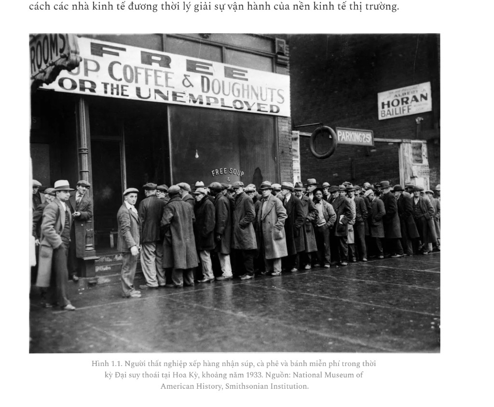
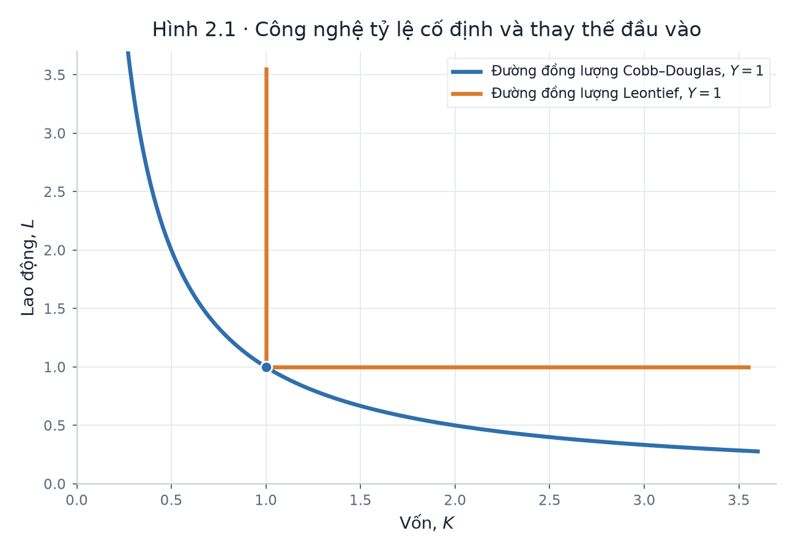
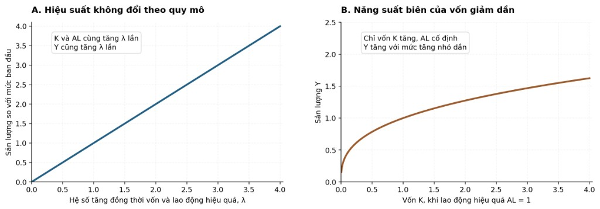
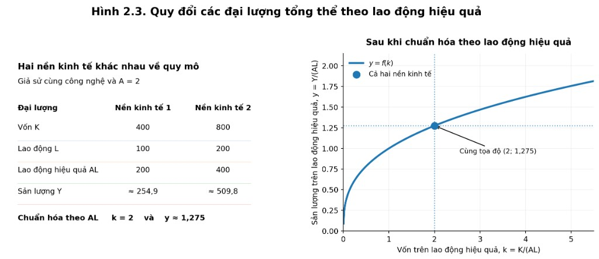
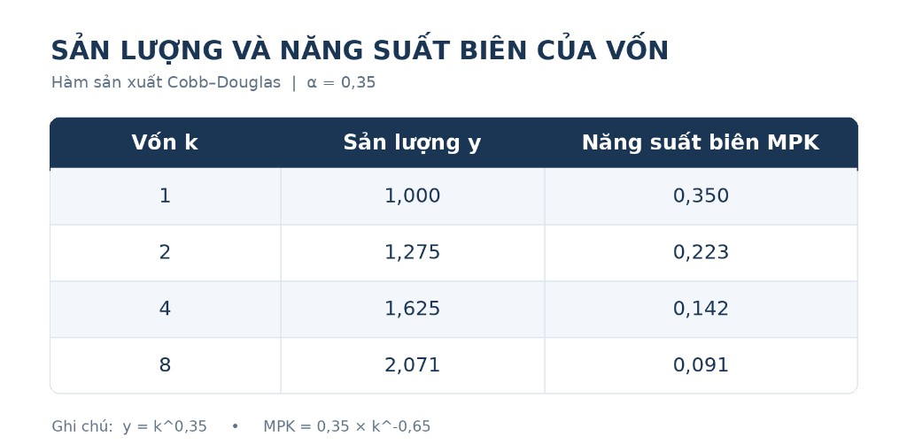
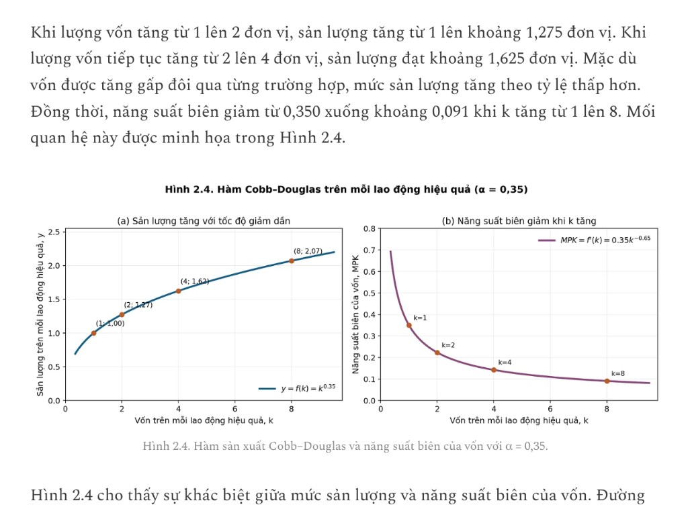
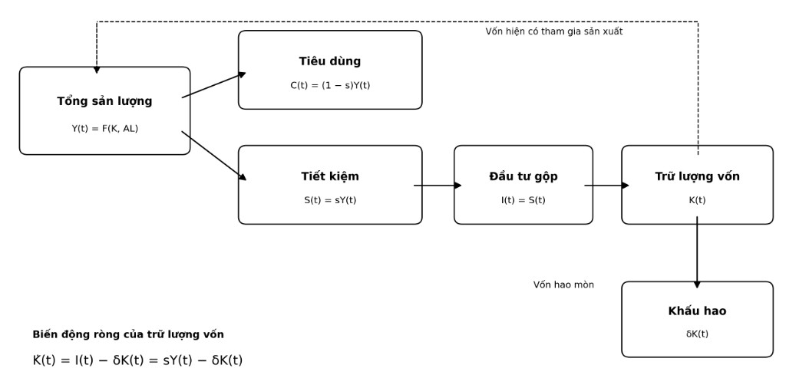
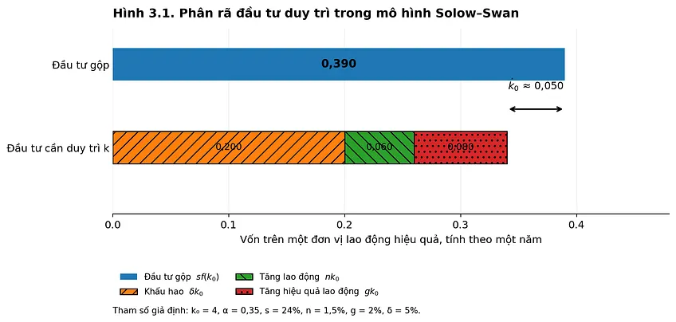

Mô hình tăng trưởng Solow-Swan: Từ Harrod-Domar đến hội tụ kinh tế
Lưu ý biên tập: Công thức được chuẩn hóa sang LaTeX để xuất bản Quarto. Một số hình đã gắn vào bài; các hình còn thiếu vẫn đánh dấu placeholder để bổ sung sau.
1. Sự hình thành bài toán tăng trưởng kinh tế
Tăng trưởng kinh tế là một trong những vấn đề trung tâm của kinh tế học vĩ mô, nhưng việc lý giải quá trình tăng trưởng trong dài hạn đòi hỏi phải phân biệt giữa sự phục hồi sản xuất, tích lũy vốn và khả năng duy trì một quỹ đạo tăng trưởng cân bằng. Trong nửa đầu thế kỷ XX, những biến động kinh tế sâu sắc, đặc biệt là cuộc Đại suy thoái, đã thúc đẩy các nhà kinh tế xem xét lại mối quan hệ giữa sản lượng, việc làm và đầu tư. Từ phân tích của Keynes đến các công trình của Harrod và Domar, những câu hỏi về khả năng sử dụng đầy đủ nguồn lực và duy trì tăng trưởng qua thời gian dần được xác lập rõ hơn. Chính trên nền tảng những vấn đề này, mô hình Solow–Swan ra đời năm 1956, mở ra một cách tiếp cận khác đối với tích lũy vốn và tăng trưởng dài hạn.
1.1. Đại suy thoái và câu hỏi về sự vận hành của nền kinh tế
Cuộc Đại suy thoái (Great Depression) bắt đầu tại Hoa Kỳ năm 1929 và lan rộng ra nhiều quốc gia trong những năm tiếp theo. Đến năm 1933, tổng sản lượng thực tế của Hoa Kỳ đã giảm khoảng 30% so với trước khủng hoảng và tỷ lệ thất nghiệp lên tới khoảng một phần tư lực lượng lao động. Hàng loạt doanh nghiệp ngừng hoạt động, các ngân hàng đổ vỡ và đời sống của hàng triệu gia đình bị ảnh hưởng nghiêm trọng. Đây không chỉ là một cuộc khủng hoảng kinh tế mà còn là một thách thức lớn đối với cách các nhà kinh tế đương thời lý giải sự vận hành của nền kinh tế thị trường.

Hình 1.1. Người thất nghiệp xếp hàng nhận súp, cà phê và bánh miễn phí trong thời kỳ Đại suy thoái tại Hoa Kỳ, khoảng năm 1933. Nguồn: National Museum of American History, Smithsonian Institution.
Điều đáng chú ý là sự suy giảm sản xuất không đồng nghĩa với việc nền kinh tế đã mất đi toàn bộ năng lực sản xuất. Nhiều nhà máy, thiết bị và người lao động vẫn tồn tại, nhưng không được sử dụng đầy đủ. Giả sử một nhà máy sản xuất giày với đủ máy móc và công nhân để làm ra 10.000 đôi giày mỗi tháng. Khi thu nhập của người dân sụt giảm, nhu cầu mua giày cũng suy giảm theo. Doanh nghiệp từ đó phải thu hẹp sản xuất, cắt giảm lao động và để một phần máy móc ngừng hoạt động. Những công nhân mất việc lại giảm chi tiêu, khiến các doanh nghiệp khác tiếp tục gặp khó khăn. Đây là một ví dụ minh họa cho cơ chế suy giảm có thể hình thành khi tổng cầu yếu, mặc dù cuộc Đại suy thoái trên thực tế còn liên quan đến những nguyên nhân tiền tệ, tài chính và thể chế phức tạp hơn.
Trong bối cảnh Đại suy thoái, John Maynard Keynes công bố tác phẩm The General Theory of Employment, Interest and Money năm 1936, qua đó đưa ra cách lý giải mới về sự biến động của sản lượng và việc làm. Theo Keynes, nền kinh tế thị trường không nhất thiết tự động trở về trạng thái toàn dụng lao động, bởi khi tổng cầu suy giảm, doanh nghiệp có xu hướng thu hẹp sản xuất và cắt giảm nhân công dù máy móc và nguồn lao động vẫn sẵn có. Sự sụt giảm việc làm tiếp tục làm giảm thu nhập và tiêu dùng, khiến tổng cầu suy yếu hơn nữa. Trước tình trạng đó, Keynes nhấn mạnh vai trò của chính sách tài khóa, đặc biệt là việc gia tăng chi tiêu công nhằm kích thích tổng cầu, phục hồi sản xuất và tạo việc làm, trong khi chính sách tiền tệ có thể hỗ trợ đầu tư thông qua việc điều chỉnh lãi suất nhưng khó phát huy hiệu quả khi kỳ vọng kinh doanh quá bi quan. Tuy nhiên, trọng tâm phân tích của Keynes là giải thích sự biến động của sản lượng và việc làm dưới tác động của tổng cầu, chứ chưa xây dựng một mô hình hoàn chỉnh về quá trình tăng trưởng dài hạn. Trong khi đầu tư có thể thúc đẩy thu nhập và việc làm ở hiện tại, chính khoản đầu tư ấy còn bổ sung vốn và mở rộng năng lực sản xuất trong tương lai. Điều này đặt ra một vấn đề vượt ra ngoài yêu cầu phục hồi tổng cầu tại một thời điểm: khi năng lực sản xuất liên tục gia tăng, thu nhập và nhu cầu phải tăng trưởng như thế nào để nền kinh tế có thể tiếp tục sử dụng hiệu quả nguồn lực được tích lũy? Câu hỏi này trở thành một trong những điểm xuất phát quan trọng của các phân tích tăng trưởng sau Keynes.
1.2. Từ Keynes đến Domar - Hai mặt của đầu tư
Từ phân tích của Keynes, một vấn đề mới xuất hiện khi xem xét vai trò của đầu tư trong quá trình tăng trưởng kinh tế. Khác với tiêu dùng, đầu tư không chỉ tạo ra nhu cầu đối với hàng hóa và dịch vụ trong hiện tại mà còn bổ sung trữ lượng vốn, qua đó mở rộng năng lực sản xuất trong tương lai. Chẳng hạn, khi một doanh nghiệp đầu tư 200 tỷ đồng xây dựng nhà máy, hoạt động xây dựng tạo ra đơn đặt hàng cho các nhà cung cấp vật liệu, thiết bị và dịch vụ, đồng thời mang lại thu nhập cho người lao động. Sau khi hoàn thành, giả sử nhà máy có khả năng tạo thêm 50 tỷ đồng sản lượng mỗi năm. Khoản đầu tư ban đầu khi đó đã vừa góp phần thúc đẩy tổng cầu mà còn tăng lượng hàng hóa nền kinh tế có thể sản xuất. Thế nhưng, năng lực sản xuất được mở rộng không có nghĩa là sản lượng bổ sung chắc chắn được tiêu thụ. Nếu nhu cầu thị trường không tăng tương ứng, nhà máy có thể phải hoạt động dưới công suất, khiến một phần năng lực sản xuất mới không được sử dụng.
Mối quan hệ này được Evsey D. Domar nghiên cứu trong bài viết Capital Expansion, Rate of Growth, and Employment năm 1946. Xuất phát từ hai tác động của đầu tư, một mặt tạo ra thu nhập và tổng cầu, mặt khác mở rộng năng lực sản xuất, Domar tìm cách xác định tốc độ tăng trưởng cần thiết để nền kinh tế có thể tiếp tục sử dụng năng lực sản xuất được tích lũy qua thời gian. Vấn đề không còn dừng ở việc đầu tư giúp phục hồi sản lượng và việc làm trong hiện tại, bởi mỗi khoản đầu tư còn để lại một trữ lượng vốn lớn hơn cho những năm sau. Khi quá trình này liên tục diễn ra, thu nhập và tổng cầu phải tăng trưởng như thế nào để theo kịp sự mở rộng năng lực sản xuất? Đây là câu hỏi trung tâm trong cách tiếp cận của Domar đối với tăng trưởng kinh tế.
Trước đó, trong bài viết An Essay in Dynamic Theory năm 1939, Roy F. Harrod đã đặt ra một vấn đề có liên quan từ góc độ khác. Ông quan tâm đến khả năng duy trì một quỹ đạo tăng trưởng khi các quyết định đầu tư phụ thuộc vào kỳ vọng của doanh nghiệp về sự gia tăng sản lượng. Nếu tăng trưởng thực tế khác với mức dự kiến, doanh nghiệp có thể điều chỉnh đầu tư, qua đó tiếp tục làm thay đổi sản lượng và điều kiện tăng trưởng trong những năm tiếp theo. Mặc dù có cách tiếp cận khác nhau, Harrod và Domar đều cho thấy tích lũy vốn không tự động bảo đảm tăng trưởng cân bằng. Trong khi Domar tập trung vào sự tương thích giữa hai tác động của đầu tư, Harrod đi sâu vào mối quan hệ giữa tăng trưởng thực tế, tăng trưởng phù hợp với kế hoạch đầu tư và tăng trưởng tương thích với toàn dụng lao động. Từ đó, ông phân biệt ba tốc độ tăng trưởng làm cơ sở cho việc phân tích các điều kiện duy trì tăng trưởng của nền kinh tế.
1.3. Harrod và ba tốc độ tăng trưởng của nền kinh tế
Trong phân tích của Harrod, khả năng duy trì tăng trưởng không chỉ phụ thuộc vào lượng vốn được tích lũy mà còn gắn với sự phù hợp giữa kết quả sản xuất và kỳ vọng đầu tư của doanh nghiệp. Khi quyết định xây dựng nhà máy hoặc mua sắm thiết bị, doanh nghiệp phải dự tính nhu cầu thị trường trong tương lai để xác định quy mô mở rộng sản xuất. Tuy nhiên, sản lượng thực tế không phải lúc nào cũng tăng đúng như dự kiến. Nếu nhu cầu tăng chậm hơn kỳ vọng, một phần năng lực sản xuất mới có thể không được sử dụng, khiến doanh nghiệp cắt giảm đầu tư trong những giai đoạn tiếp theo. Ngược lại, khi nhu cầu vượt dự kiến, doanh nghiệp có thể đẩy mạnh đầu tư để mở rộng năng lực sản xuất. Những điều chỉnh này vừa tác động đến tổng cầu hiện tại, vừa làm thay đổi lượng vốn được tích lũy trong tương lai, khiến nền kinh tế không nhất thiết duy trì được quỹ đạo tăng trưởng ban đầu.
Từ mối quan hệ giữa sản lượng, kỳ vọng và đầu tư, Harrod phân biệt ba tốc độ tăng trưởng nhằm làm rõ những điều kiện chi phối sự vận động của nền kinh tế:
Tốc độ tăng trưởng thực tế (actual growth rate) phản ánh mức gia tăng sản lượng thực sự diễn ra trong một khoảng thời gian. Đây là kết quả quan sát được, bất kể nó có phù hợp với kế hoạch đầu tư của doanh nghiệp hay không.
Tốc độ tăng trưởng được bảo đảm (warranted growth rate) là tốc độ tăng trưởng mà tại đó kết quả sản xuất phù hợp với các quyết định tiết kiệm và đầu tư dự kiến, khiến doanh nghiệp không có lý do điều chỉnh kế hoạch mở rộng năng lực sản xuất vì sản lượng tăng khác mức mong đợi. Thuật ngữ được bảo đảm không có nghĩa là tốc độ này chắc chắn sẽ xảy ra, mà thể hiện sự phù hợp giữa tăng trưởng sản lượng và kế hoạch đầu tư.
Tốc độ tăng trưởng tự nhiên (natural growth rate) phản ánh tốc độ tăng trưởng sản lượng khả thi trong điều kiện toàn dụng lao động, xét đến sự gia tăng lực lượng lao động và tiến bộ kỹ thuật. Trong cách trình bày giản lược, tốc độ này được xác định thông qua tăng trưởng lao động và năng suất lao động.
Giả sử một nền kinh tế có sản lượng thực tế tăng 4% trong một năm, trong khi mức tăng trưởng phù hợp với các kế hoạch tiết kiệm và đầu tư là 5%. Điều này có nghĩa là nền kinh tế đã tăng trưởng chậm hơn tốc độ được bảo đảm. Nếu kết quả thấp hơn dự kiến khiến doanh nghiệp nhận thấy năng lực sản xuất đã mở rộng nhiều hơn nhu cầu thực tế, họ có thể giảm đầu tư trong thời gian tiếp theo. Việc đầu tư giảm lại làm suy yếu tổng cầu và thu nhập, qua đó có khả năng tiếp tục ảnh hưởng đến tăng trưởng sản lượng. Trong phân tích của Harrod, những phản ứng như vậy đặt ra vấn đề về tính ổn định động học (dynamic stability) của quỹ đạo tăng trưởng. Một sai lệch khỏi tốc độ tăng trưởng được bảo đảm liệu có được điều chỉnh để nền kinh tế quay trở lại quỹ đạo ban đầu, hay chính những quyết định đầu tư tiếp theo sẽ khiến sai lệch trở nên lớn hơn?
Tuy nhiên, ngay cả khi sản lượng thực tế tăng đúng với tốc độ được bảo đảm, nền kinh tế vẫn chưa chắc duy trì được toàn dụng lao động trong dài hạn. Giả sử tốc độ tăng trưởng được bảo đảm là 5%, nhưng lực lượng lao động và năng suất chỉ tăng với tốc độ tương ứng với mức tăng trưởng tự nhiên 3%. Khi đó, tăng trưởng phù hợp với kế hoạch đầu tư lại không tương thích với tốc độ mở rộng sản lượng trong điều kiện toàn dụng lao động. Vấn đề này đặc biệt rõ rệt khi công nghệ sản xuất yêu cầu vốn và lao động kết hợp theo tỷ lệ cố định, bởi nền kinh tế không thể tùy ý thay đổi lượng lao động cần thiết để vận hành số vốn được tích lũy. Như vậy, bên cạnh vấn đề ổn định của tăng trưởng thực tế, Harrod còn đặt ra vấn đề tương thích giữa tốc độ tăng trưởng được bảo đảm và tốc độ tăng trưởng tự nhiên.
Có thể thấy hai vấn đề này có liên quan nhưng không đồng nhất. Sự khác biệt giữa tăng trưởng thực tế và tăng trưởng được bảo đảm liên quan đến phản ứng của doanh nghiệp trước những kết quả sản xuất không đúng dự kiến, trong khi sự khác biệt giữa tăng trưởng được bảo đảm và tăng trưởng tự nhiên phản ánh khả năng duy trì một quỹ đạo tăng trưởng phù hợp với cả tích lũy vốn và toàn dụng lao động. Chính vì thế, việc xác định điều kiện để các tốc độ tăng trưởng tương thích trở thành bước tiếp theo trong phân tích. Để làm rõ điều kiện ấy, cần chuyển từ lập luận kinh tế sang các quan hệ toán học giữa tiết kiệm, đầu tư, vốn và sản lượng, qua đó xác định tốc độ tăng trưởng được bảo đảm và tốc độ tăng trưởng tự nhiên trong khuôn khổ Harrod–Domar.
1.4. Điều kiện tăng trưởng cân bằng trong khung Harrod–Domar
Để xác định điều kiện tăng trưởng cân bằng trong khung Harrod–Domar, trước hết cần thiết lập mối quan hệ giữa tiết kiệm, đầu tư và lượng vốn cần thiết để mở rộng sản lượng. Tiết kiệm tạo ra nguồn lực dành cho đầu tư, trong khi nhu cầu vốn của doanh nghiệp phụ thuộc vào mức gia tăng sản lượng dự kiến và công nghệ sản xuất đang được sử dụng. Sự tương thích giữa hai yếu tố này cho phép xác định tốc độ tăng trưởng được bảo đảm. Tuy nhiên, để quỹ đạo tăng trưởng ấy đồng thời phù hợp với toàn dụng lao động, cần tiếp tục xem xét sự gia tăng của lực lượng lao động và năng suất lao động, từ đó xác định điều kiện tương thích giữa tốc độ tăng trưởng được bảo đảm và tốc độ tăng trưởng tự nhiên.
Trước hết, xét một nền kinh tế đóng, không có chính phủ và tạm thời bỏ qua khấu hao vốn. Giả sử các hộ gia đình dành một tỷ lệ cố định s của tổng thu nhập cho tiết kiệm, đồng thời tổng thu nhập bằng tổng sản lượng của nền kinh tế. Khi đó, dòng tiết kiệm được xác định:
\[ S(t)=sY(t) \tag{1.1} \]
Trong đó:
S(t) là dòng tiết kiệm của nền kinh tế tại thời điểm t.
Y(t) là tổng sản lượng tại thời điểm t.
s là tỷ lệ tiết kiệm, được giả định không đổi.
t biểu thị thời gian.
Trong nền kinh tế đóng không có chính phủ, đồng nhất thức thu nhập quốc dân cho biết tổng sản lượng được phân bổ cho tiêu dùng C(t) và đầu tư I(t). Mặt khác, tổng thu nhập cũng được phân bổ cho tiêu dùng và tiết kiệm. Vì vậy:
\[ Y(t)=C(t)+I(t),\qquad Y(t)=C(t)+S(t) \]
Do hai biểu thức có cùng vế trái, ta có thể đặt hai vế phải bằng nhau:
\[ C(t)+I(t)=C(t)+S(t) \]
Trừ C(t) ở cả hai vế, thu được đồng nhất thức tiết kiệm bằng đầu tư:
\[ I(t)=S(t) \tag{1.2} \]
Cần lưu ý rằng đây là đồng nhất thức kế toán giữa tiết kiệm và đầu tư thực tế, trong đó đầu tư bao gồm cả những thay đổi hàng tồn kho được ghi nhận. Sự bằng nhau này không có nghĩa rằng lượng tiết kiệm dự kiến của các hộ gia đình luôn phù hợp với nhu cầu đầu tư mà doanh nghiệp mong muốn thực hiện. Sự phân biệt giữa kết quả thực tế và kế hoạch đầu tư có ý nghĩa quan trọng trong phân tích của Harrod, bởi tốc độ tăng trưởng được bảo đảm còn đòi hỏi các quyết định đầu tư phù hợp với mức gia tăng sản lượng mà doanh nghiệp dự kiến.
Với giả định không có khấu hao, toàn bộ đầu tư được xem là đầu tư ròng và trực tiếp làm gia tăng trữ lượng vốn vật chất. Mối quan hệ giữa đầu tư và tích lũy vốn được biểu diễn:
\[ I(t)=\dot K(t) \]
Trong đó:
I(t) là dòng đầu tư ròng tại thời điểm t.
K(t) là trữ lượng vốn vật chất của nền kinh tế.
K̇(t) là tốc độ thay đổi của trữ lượng vốn theo thời gian, tức đạo hàm của K(t) theo t.
Kết hợp các quan hệ vừa thiết lập, ta thu được phương trình tích lũy vốn:
\[ \dot K(t)=I(t)=S(t)=sY(t) \tag{1.3} \]
Phương trình (1.3) cho thấy lượng tiết kiệm được chuyển thành đầu tư và làm gia tăng trữ lượng vốn. Chẳng hạn, nếu một nền kinh tế tạo ra sản lượng trị giá 1.000 tỷ đồng mỗi năm và tỷ lệ tiết kiệm là 20%, lượng tiết kiệm và đầu tư tương ứng bằng 200 tỷ đồng mỗi năm. Trong điều kiện bỏ qua khấu hao, nếu dòng đầu tư được duy trì ở mức này trong suốt một năm, trữ lượng vốn sẽ tăng thêm 200 tỷ đồng. Tuy nhiên, việc bổ sung vốn mới chỉ phản ánh sự gia tăng nguồn lực sản xuất, chưa cho biết lượng vốn ấy có thể tạo ra bao nhiêu sản lượng bổ sung. Để xác định mối quan hệ này, cần đưa vào một giả định về công nghệ sản xuất.
Giả sử nền kinh tế cần một lượng vốn bổ sung cố định để tạo ra mỗi đơn vị sản lượng tăng thêm. Gọi v là hệ số vốn gia tăng–sản lượng gia tăng cần thiết (required incremental capital–output ratio), được xác định:
\[ v=\frac{\Delta K_{\mathrm{req}}}{\Delta Y_{\mathrm{req}}} \tag{1.4} \]
Trong đó:
v là hệ số vốn gia tăng–sản lượng gia tăng cần thiết.
ΔK với chỉ số req là lượng vốn bổ sung cần thiết để đạt được mức gia tăng sản lượng dự kiến.
ΔY với chỉ số req là mức gia tăng sản lượng dự kiến tương ứng.
req là chỉ số viết tắt của required, dùng để chỉ lượng cần thiết theo yêu cầu sản xuất.
Hệ số v cho biết nền kinh tế cần bổ sung bao nhiêu vốn để tạo ra một đơn vị sản lượng tăng thêm theo công nghệ đang xét. Chẳng hạn, nếu v = 4, tức để nâng mức sản lượng hằng năm thêm 1 tỷ đồng, nền kinh tế cần bổ sung 4 tỷ đồng vốn sản xuất. Nếu muốn nâng sản lượng hằng năm từ 1.000 tỷ đồng lên 1.050 tỷ đồng, tức tăng thêm 50 tỷ đồng mỗi năm, lượng vốn cần bổ sung sẽ là 200 tỷ đồng. Trong ví dụ này, v có đơn vị thời gian vì trữ lượng vốn được đo bằng tỷ đồng, còn sản lượng là một đại lượng dòng được đo bằng tỷ đồng mỗi năm. Do đó, v = 4 tương ứng với hệ số vốn gia tăng–sản lượng gia tăng có giá trị bốn năm.
Từ định nghĩa của v, nhân hai vế với mức sản lượng gia tăng cần thiết, ta có:
\[ \Delta K_{\mathrm{req}}=v\,\Delta Y_{\mathrm{req}} \tag{1.5} \]
Khi chuyển sang thời gian liên tục, mức gia tăng vốn và sản lượng được biểu diễn thông qua đạo hàm theo thời gian. Với giả định hệ số v không đổi và đầu tư ròng tạo ra lượng vốn bổ sung theo đúng kế hoạch, dòng đầu tư cần thiết trên quỹ đạo tăng trưởng được bảo đảm được xác định:
\[ I_w(t)=v\,\dot Y_w(t) \tag{1.6} \]
Trong đó:
I với chỉ số w là dòng đầu tư ròng cần thiết trên quỹ đạo tăng trưởng được bảo đảm tại thời điểm t.
Y với chỉ số w là sản lượng trên quỹ đạo tăng trưởng được bảo đảm.
Ẏ với chỉ số w là tốc độ thay đổi của sản lượng trên quỹ đạo đó theo thời gian.
w là chỉ số viết tắt của warranted, nghĩa là được bảo đảm.
v là hệ số vốn gia tăng–sản lượng gia tăng cần thiết, được giả định không đổi.
Phương trình (1.6) phản ánh lượng đầu tư mà doanh nghiệp cần thực hiện để tạo ra mức gia tăng sản lượng dự kiến. Khi doanh nghiệp kỳ vọng sản lượng tăng nhanh hơn, nhu cầu bổ sung vốn cũng lớn hơn nếu hệ số v không đổi. Tuy nhiên, để các kế hoạch mở rộng sản xuất được thực hiện mà không tạo ra sự chênh lệch giữa lượng vốn doanh nghiệp mong muốn tích lũy và nguồn tiết kiệm tương ứng, dòng đầu tư cần thiết phải bằng dòng tiết kiệm trên cùng quỹ đạo tăng trưởng. Khi đó:
\[ I_w(t)=S_w(t) \]
Từ phương trình tiết kiệm, ta có:
\[ S_w(t)=sY_w(t) \]
Trong khi đó, từ phương trình đầu tư cần thiết:
\[ I_w(t)=v\,\dot Y_w(t) \]
Thay hai biểu thức vào điều kiện tiết kiệm bằng đầu tư:
\[ v\,\dot Y_w(t)=sY_w(t) \]
Chia hai vế cho hệ số v:
\[ \dot Y_w(t)=\frac{s}{v}Y_w(t) \]
Tiếp tục chia hai vế cho sản lượng trên quỹ đạo tăng trưởng được bảo đảm, với giả định sản lượng dương, thu được:
\[ \frac{\dot Y_w(t)}{Y_w(t)}=\frac{s}{v} \]
Vế trái chính là tốc độ tăng trưởng tức thời của sản lượng trên quỹ đạo được bảo đảm. Theo định nghĩa, ta thu được:
\[ g_w\equiv\frac{\dot Y_w(t)}{Y_w(t)}=\frac{s}{v} \tag{1.7} \]
Trong đó:
g với chỉ số w là tốc độ tăng trưởng được bảo đảm (warranted growth rate).
s là tỷ lệ tiết kiệm của nền kinh tế.
v là hệ số vốn gia tăng–sản lượng gia tăng cần thiết.
Kết quả này cho thấy tốc độ tăng trưởng được bảo đảm tỷ lệ thuận với tỷ lệ tiết kiệm và tỷ lệ nghịch với lượng vốn cần thiết để tạo ra sản lượng bổ sung. Với cùng một công nghệ sản xuất, tỷ lệ tiết kiệm cao hơn tạo điều kiện duy trì tốc độ tăng trưởng được bảo đảm cao hơn. Ngược lại, nếu cần nhiều vốn hơn để tạo ra cùng một đơn vị sản lượng tăng thêm, tốc độ tăng trưởng được bảo đảm sẽ thấp hơn khi tỷ lệ tiết kiệm không đổi. Tiếp tục ví dụ trước đó, với s = 20% và v = 4, ta có:
\[ g_w=\frac{0{,}20}{4}=0{,}05=5\%\,\text{mỗi năm} \]
Như vậy, tốc độ tăng trưởng được bảo đảm bằng 5% mỗi năm trong mô hình thời gian liên tục. Điều này không có nghĩa sản lượng thực tế chắc chắn tăng 5%, bởi tốc độ tăng trưởng được bảo đảm chỉ phản ánh mức tăng trưởng tương thích với tiết kiệm và nhu cầu đầu tư dự kiến. Nếu kết quả sản xuất khác với kế hoạch, doanh nghiệp có thể điều chỉnh quy mô đầu tư, khiến tốc độ tăng trưởng thực tế lệch khỏi quỹ đạo được bảo đảm. Đồng thời, ngay cả khi nền kinh tế duy trì được tốc độ tăng trưởng này, vẫn cần xem xét liệu sự mở rộng sản lượng có phù hợp với tốc độ gia tăng của lực lượng lao động hay không.
Để xác định tốc độ tăng trưởng tự nhiên, gọi L(t) là lực lượng lao động và a(t) là sản lượng trên mỗi lao động trong điều kiện toàn dụng lao động. Khi đó, tổng sản lượng tương ứng với toàn dụng lao động được xác định bằng tích của số lượng lao động và sản lượng trên mỗi lao động:
\[ Y_N(t)=a(t)L(t) \tag{1.8} \]
Trong đó:
Y với chỉ số N là tổng sản lượng tương ứng với điều kiện toàn dụng lao động tại thời điểm t.
a(t) là sản lượng trên mỗi lao động trong điều kiện toàn dụng lao động.
L(t) là lực lượng lao động tại thời điểm t.
N là chỉ số dùng để biểu thị mức sản lượng tương ứng với toàn dụng lao động.
Phương trình (1.8) cho thấy tổng sản lượng trong điều kiện toàn dụng lao động có thể gia tăng khi số lượng lao động tăng, khi sản lượng trên mỗi lao động tăng hoặc khi cả hai yếu tố cùng tăng. Để xác định tốc độ tăng trưởng tương ứng, lấy đạo hàm hai vế theo thời gian và áp dụng quy tắc đạo hàm của tích hai hàm số:
\[ \dot Y_N(t)=\dot a(t)L(t)+a(t)\dot L(t) \]
Chia hai vế cho tổng sản lượng trong điều kiện toàn dụng lao động, đồng thời thay sản lượng này bằng tích a(t)L(t):
\[ \frac{\dot Y_N(t)}{Y_N(t)}=\frac{\dot a(t)L(t)+a(t)\dot L(t)}{a(t)L(t)} \]
Tách phân thức ở vế phải thành hai thành phần:
\[ \frac{\dot Y_N(t)}{Y_N(t)}=\frac{\dot a(t)L(t)}{a(t)L(t)}+\frac{a(t)\dot L(t)}{a(t)L(t)} \]
Rút gọn các nhân tử chung, thu được:
\[ \frac{\dot Y_N(t)}{Y_N(t)}=\frac{\dot a(t)}{a(t)}+\frac{\dot L(t)}{L(t)} \]
Giả sử lực lượng lao động tăng trưởng với tốc độ ngoại sinh không đổi n và năng suất lao động trong điều kiện toàn dụng lao động tăng trưởng với tốc độ ngoại sinh không đổi γ:
\[ \frac{\dot L(t)}{L(t)}=n,\qquad \frac{\dot a(t)}{a(t)}=\gamma \]
Thay vào phương trình tăng trưởng sản lượng, ta có:
\[ \frac{\dot Y_N(t)}{Y_N(t)}=n+\gamma \]
Vì vế trái là tốc độ tăng trưởng của sản lượng tương ứng với toàn dụng lao động, ta suy ra:
\[ g_n=n+\gamma \tag{1.9} \]
Trong đó:
gₙ là tốc độ tăng trưởng tự nhiên (natural growth rate).
n là tốc độ tăng trưởng của lực lượng lao động.
γ là tốc độ tăng trưởng năng suất lao động trong điều kiện toàn dụng lao động.
Đây là kết quả của một thiết lập giản lược trong đó tốc độ tăng năng suất lao động ở mức toàn dụng được giả định ngoại sinh. Chẳng hạn, nếu lực lượng lao động tăng 2% mỗi năm và năng suất lao động tăng 1% mỗi năm, tốc độ tăng trưởng tự nhiên bằng 3% mỗi năm theo cách đo tăng trưởng liên tục. Điều đó có nghĩa sản lượng tương ứng với toàn dụng lao động tăng với tốc độ 3% mỗi năm khi hai tốc độ tăng trưởng thành phần được duy trì không đổi. Cách biểu diễn này cho phép xác định tốc độ tăng trưởng tự nhiên từ lao động và năng suất lao động, nhưng chưa giải thích cơ chế hình thành tiến bộ kỹ thuật hay sự thay đổi năng suất trong quá trình sản xuất.
Đến đây, ta đã xác định được hai tốc độ tăng trưởng từ những cơ chế khác nhau. Tốc độ tăng trưởng được bảo đảm phụ thuộc vào tỷ lệ tiết kiệm và lượng vốn cần thiết để tạo ra sản lượng bổ sung, trong khi tốc độ tăng trưởng tự nhiên phụ thuộc vào sự gia tăng lực lượng lao động và năng suất lao động. Do các yếu tố này được xác định độc lập trong những giả định của mô hình, không có gì bảo đảm hai tốc độ sẽ tự động bằng nhau. Để duy trì một quỹ đạo tăng trưởng vừa phù hợp với các kế hoạch tiết kiệm và đầu tư, vừa tương thích với toàn dụng lao động, điều kiện cần là:
\[ g_w=g_n \]
Thay các biểu thức đã xác định, ta thu được điều kiện tương thích giữa tăng trưởng được bảo đảm và tăng trưởng tự nhiên:
\[ \frac{s}{v}=n+\gamma \tag{1.10} \]
Trong đó:
s là tỷ lệ tiết kiệm của nền kinh tế.
v là hệ số vốn gia tăng–sản lượng gia tăng cần thiết.
n là tốc độ tăng trưởng lực lượng lao động.
γ là tốc độ tăng trưởng năng suất lao động trong điều kiện toàn dụng lao động.
Trong trường hợp năng suất lao động không thay đổi theo thời gian, tức γ = 0, điều kiện trên trở thành:
\[ \frac{s}{v}=n \qquad (\gamma=0) \tag{1.11} \]
Điều kiện (1.11) cho thấy, khi năng suất lao động được giữ cố định, tốc độ tăng trưởng phù hợp với các kế hoạch tiết kiệm và đầu tư phải bằng tốc độ gia tăng lực lượng lao động để quỹ đạo tăng trưởng có thể đồng thời tương thích với toàn dụng lao động. Nếu một trong các yếu tố quyết định hai tốc độ thay đổi mà các yếu tố còn lại không điều chỉnh tương ứng, sự cân bằng này có thể bị phá vỡ.
Để hình dung ý nghĩa của điều kiện trên, tiếp tục xét nền kinh tế có tỷ lệ tiết kiệm 20% và hệ số v = 4, tương ứng với tốc độ tăng trưởng được bảo đảm 5% mỗi năm. Giả sử lực lượng lao động tăng 2% và năng suất lao động tăng 1% mỗi năm, khi đó tốc độ tăng trưởng tự nhiên bằng 3%. Như vậy, trong khi tiết kiệm và nhu cầu đầu tư tương ứng với một quỹ đạo tăng trưởng 5%, sự gia tăng lao động và năng suất lại tương ứng với một quỹ đạo tăng trưởng toàn dụng lao động 3%. Hai tốc độ này không bằng nhau, cho thấy các yêu cầu tăng trưởng chưa tương thích dưới những giả định đã thiết lập.
Sự khác biệt giữa hai tốc độ tăng trưởng phản ánh một khó khăn cơ bản trong việc duy trì tăng trưởng cân bằng. Nếu tốc độ tăng trưởng được bảo đảm thấp hơn tốc độ tăng trưởng tự nhiên, sản lượng tăng theo kế hoạch đầu tư có thể không đủ để duy trì việc làm cho lực lượng lao động ngày càng tăng. Ngược lại, nếu tốc độ tăng trưởng được bảo đảm cao hơn tốc độ tăng trưởng tự nhiên, việc duy trì quỹ đạo tăng trưởng theo kế hoạch có thể gặp giới hạn từ khả năng mở rộng sản lượng trong điều kiện toàn dụng lao động. Tuy nhiên, những kết quả này không đồng nghĩa với việc thất nghiệp hoặc thiếu hụt lao động chắc chắn xuất hiện ngay khi hai tốc độ khác nhau, bởi diễn biến thực tế còn phụ thuộc vào mức độ sử dụng nguồn lực tại thời điểm ban đầu và quá trình điều chỉnh của nền kinh tế.
Cần phân biệt kết quả trên với vấn đề ổn định động học đã được đề cập ở mục 1.3. Điều kiện giữa tốc độ tăng trưởng được bảo đảm và tốc độ tăng trưởng tự nhiên cho biết khi nào một quỹ đạo tăng trưởng có thể đồng thời đáp ứng các yêu cầu về tiết kiệm, đầu tư và toàn dụng lao động. Tuy nhiên, việc hai tốc độ bằng nhau chưa bảo đảm rằng nền kinh tế đã sử dụng đầy đủ các yếu tố sản xuất ngay từ thời điểm ban đầu, cũng không chứng minh rằng nền kinh tế sẽ tự động quay trở lại quỹ đạo đó sau khi xuất hiện sai lệch. Để nền kinh tế thực sự duy trì tăng trưởng cân bằng trong điều kiện toàn dụng lao động, tốc độ tăng trưởng thực tế còn phải phù hợp với hai tốc độ đã xác định:
\[ g_a=g_w=g_n \tag{1.12} \]
Trong đó:
gₐ là tốc độ tăng trưởng thực tế (actual growth rate).
gw là tốc độ tăng trưởng được bảo đảm (warranted growth rate).
gₙ là tốc độ tăng trưởng tự nhiên (natural growth rate).
Sự bằng nhau của ba tốc độ là điều kiện về tốc độ tăng trưởng trên quỹ đạo cân bằng toàn dụng lao động, nhưng vẫn cần có trạng thái sử dụng nguồn lực phù hợp ngay từ thời điểm ban đầu. Hơn nữa, ngay cả khi tồn tại một quỹ đạo thỏa mãn điều kiện này, nền kinh tế chưa chắc có khả năng duy trì hoặc tự động khôi phục quỹ đạo đó khi các quyết định đầu tư và sản lượng thực tế thay đổi. Trong phân tích của Harrod, sự sai lệch giữa tăng trưởng thực tế và tăng trưởng được bảo đảm có thể làm doanh nghiệp điều chỉnh kế hoạch đầu tư theo hướng khiến sai lệch tiếp tục gia tăng. Vì vậy, việc xác định điều kiện tăng trưởng cân bằng không đồng nghĩa với việc chứng minh tính ổn định của quỹ đạo tăng trưởng.
Một giới hạn quan trọng của khuôn khổ Harrod–Domar nằm ở những giả định về mối quan hệ giữa tích lũy vốn và năng lực sản xuất. Trong phép dẫn xuất trên, hệ số v biểu thị lượng vốn bổ sung cần thiết để tạo ra một đơn vị sản lượng gia tăng, chứ không mặc nhiên đồng nhất với tỷ số giữa toàn bộ trữ lượng vốn và mức sản lượng hiện có. Việc giữ hệ số này không đổi cho phép xác định tốc độ tăng trưởng được bảo đảm, nhưng chưa giải thích đầy đủ khả năng điều chỉnh tỷ lệ sử dụng vốn và lao động khi hai yếu tố tăng trưởng với tốc độ khác nhau. Đặc biệt, trong trường hợp công nghệ sản xuất đòi hỏi vốn và lao động kết hợp theo tỷ lệ cố định, doanh nghiệp khó có thể thay đổi phương thức sử dụng các yếu tố để thích ứng với sự khác biệt giữa tích lũy vốn và gia tăng lao động. Khi đó, việc duy trì một quỹ đạo tăng trưởng phù hợp với cả kế hoạch đầu tư và toàn dụng lao động phụ thuộc chặt chẽ vào sự tương thích giữa những điều kiện vốn được xác định bởi các cơ chế khác nhau.
Chính sự cứng nhắc trong tỷ lệ kết hợp giữa các yếu tố sản xuất đã trở thành một trong những trọng tâm phê bình của Robert M. Solow trong công trình A Contribution to the Theory of Economic Growth năm 1956. Solow chỉ ra rằng kết luận về tính mong manh của tăng trưởng cân bằng trong cách diễn giải Harrod–Domar phụ thuộc đáng kể vào giả định công nghệ sản xuất sử dụng các yếu tố theo tỷ lệ cố định. Nếu vốn và lao động có thể thay thế cho nhau, nền kinh tế sẽ có thêm khả năng điều chỉnh tỷ lệ sử dụng các yếu tố trong quá trình tích lũy, qua đó mở ra một cách tiếp cận khác đối với vấn đề tăng trưởng cân bằng. Cùng với công trình độc lập của Trevor W. Swan năm 1956, hướng nghiên cứu này đặt nền tảng cho mô hình tăng trưởng Solow–Swan, trong đó việc giải thích quá trình tích lũy vốn và sự điều chỉnh giữa các yếu tố sản xuất trở thành nội dung trung tâm của phân tích tăng trưởng kinh tế.
II. Bước ngoặt Solow–Swan và khả năng thay thế giữa vốn và lao động
2.1. Sự thay đổi trong cách tiếp cận tăng trưởng của Solow và Swan
Một trong những hạn chế của cách tiếp cận tăng trưởng Harrod–Domar đã phân tích ở phần trước xuất phát từ giả định về mối quan hệ giữa vốn và lao động trong quá trình sản xuất. Khi công nghệ đòi hỏi các yếu tố được kết hợp theo tỷ lệ cố định, việc mở rộng sản lượng cần có sự gia tăng tương ứng của cả vốn và lao động. Nếu trữ lượng vốn tăng nhanh hơn lực lượng lao động, một phần vốn bổ sung có thể không được sử dụng hiệu quả do thiếu lao động cần thiết. Ngược lại, khi lực lượng lao động tăng nhanh hơn vốn, nền kinh tế có thể gặp khó khăn trong việc trang bị đủ máy móc và thiết bị cho số lao động gia tăng. Điều này khiến khả năng duy trì tăng trưởng cân bằng phụ thuộc chặt chẽ vào sự tương thích giữa tích lũy vốn và gia tăng lao động.
Tuy nhiên, trong thực tế, cùng một lượng sản phẩm có thể được tạo ra bằng những cách kết hợp vốn và lao động khác nhau. Một doanh nghiệp có thể sử dụng nhiều công nhân để thực hiện các công đoạn thủ công hoặc đầu tư thêm máy móc nhằm giảm bớt lao động trực tiếp. Khi công nghệ cho phép lựa chọn giữa những phương thức sản xuất như vậy, doanh nghiệp có thể điều chỉnh tỷ lệ sử dụng vốn và lao động mà vẫn duy trì cùng một mức sản lượng. Khả năng này được gọi là khả năng thay thế giữa các yếu tố sản xuất (factor substitutability). Sự khác biệt giữa công nghệ sử dụng các yếu tố theo tỷ lệ cố định và công nghệ cho phép thay thế vốn và lao động được minh họa trong Hình 2.1.

Hình 2.1. So sánh đường đồng lượng của công nghệ tỷ lệ cố định (Leontief) và công nghệ cho phép thay thế vốn và lao động (Cobb–Douglas).
Khả năng thay thế giữa các yếu tố có ý nghĩa quan trọng đối với quá trình tích lũy vốn. Khi trữ lượng vốn tăng nhanh hơn lực lượng lao động, doanh nghiệp có thể sử dụng nhiều máy móc và thiết bị hơn cho mỗi lao động, qua đó nâng cao năng lực sản xuất mà không cần bổ sung lao động theo cùng một tỷ lệ. Tương tự, khi lao động gia tăng nhanh hơn vốn, nền kinh tế có thể điều chỉnh phương thức sản xuất để sử dụng nhiều lao động hơn trên mỗi đơn vị vốn. Nhờ đó, tỷ lệ vốn trên lao động có thể thay đổi trong quá trình tăng trưởng, tạo ra khả năng điều chỉnh mà mô hình sử dụng các yếu tố theo tỷ lệ cố định chưa thể hiện đầy đủ.
Đây là một trong những thay đổi quan trọng được Robert M. Solow phát triển trong công trình A Contribution to the Theory of Economic Growth năm 1956. Solow xây dựng mô hình tăng trưởng sử dụng hàm sản xuất tân cổ điển, trong đó vốn và lao động có khả năng thay thế cho nhau. Cùng năm đó, Trevor W. Swan công bố nghiên cứu độc lập Economic Growth and Capital Accumulation, phát triển cách tiếp cận có liên quan đến tích lũy vốn và tăng trưởng dài hạn. Hai công trình này đặt nền tảng cho mô hình tăng trưởng Solow–Swan, trong đó sự thay đổi của tỷ lệ vốn trên lao động trở thành một cơ chế quan trọng giúp nền kinh tế điều chỉnh trong quá trình tích lũy. Tuy nhiên, mô hình chuẩn vẫn giả định các yếu tố sản xuất được sử dụng đầy đủ, vì vậy khả năng điều chỉnh này chưa giải quyết những vấn đề thiếu tổng cầu và thất nghiệp đã được đặt ra trong phân tích của Keynes và Harrod.
Từ đây, một câu hỏi tiếp tục xuất hiện. Nếu lượng vốn trên mỗi lao động có thể thay đổi, sản lượng sẽ phản ứng như thế nào khi nền kinh tế tích lũy ngày càng nhiều vốn? Liệu việc bổ sung máy móc và thiết bị luôn tạo ra mức gia tăng sản lượng tương ứng, hay hiệu quả của vốn bổ sung sẽ giảm dần khi lượng vốn đã tích lũy ngày càng lớn? Để trả lời, cần xem xét cách mô hình Solow–Swan mô tả mối quan hệ giữa vốn, lao động, công nghệ và sản lượng thông qua hàm sản xuất tân cổ điển.
2.2. Hàm sản xuất tân cổ điển và những giả định cơ bản
Trong một nền kinh tế, sản lượng được tạo ra thông qua sự kết hợp của nhiều nguồn lực, trong đó vốn và lao động giữ vai trò quan trọng. Vốn bao gồm nhà xưởng, máy móc, thiết bị và những tài sản phục vụ sản xuất, còn lao động là nguồn lực con người được sử dụng để vận hành quá trình ấy. Tuy nhiên, cùng một lượng vốn và lao động có thể tạo ra những mức sản lượng khác nhau tùy thuộc vào trình độ công nghệ. Chẳng hạn, một nhà máy sử dụng thiết bị và phương pháp tổ chức sản xuất hiệu quả hơn có thể tạo ra nhiều sản phẩm hơn dù số lượng công nhân không thay đổi. Để nghiên cứu tăng trưởng dài hạn, cần mô tả một cách có hệ thống mối quan hệ giữa các yếu tố đầu vào và lượng sản phẩm mà nền kinh tế có khả năng tạo ra.
Trong mô hình Solow–Swan, mối quan hệ này được biểu diễn thông qua hàm sản xuất (production function). Xét phiên bản có tiến bộ công nghệ làm tăng hiệu quả lao động, một dạng được sử dụng phổ biến trong phân tích tăng trưởng hiện đại.
\[ Y(t)=F\bigl(K(t),A(t)L(t)\bigr) \tag{2.1} \]
Trong đó:
Y(t) là tổng sản lượng thực của nền kinh tế tại thời điểm t.
K(t) là trữ lượng vốn vật chất phục vụ sản xuất.
L(t) là lượng lao động được sử dụng trong sản xuất.
A(t) là mức công nghệ, phản ánh hiệu quả của mỗi đơn vị lao động.
A(t)L(t) là tổng lượng lao động hiệu quả (effective labor).
F là hàm sản xuất, mô tả mối quan hệ giữa các yếu tố đầu vào và sản lượng.
t biểu thị thời gian.
Cách viết A(t)L(t) thể hiện giả định tiến bộ công nghệ làm tăng hiệu quả lao động (labor-augmenting technological progress). Khi A(t) gia tăng, cùng một số lao động có thể đóng góp nhiều đơn vị lao động hiệu quả hơn. Tuy nhiên, A(t) không đồng nghĩa với sản lượng thực tế trên mỗi lao động, bởi năng suất lao động còn phụ thuộc vào lượng vốn được trang bị. Một công nhân có thể tạo ra nhiều sản phẩm hơn do sử dụng nhiều máy móc hơn, do công nghệ được cải thiện hoặc do cả hai nguyên nhân. Sự phân biệt này có ý nghĩa quan trọng khi xác định đóng góp của tích lũy vốn và tiến bộ công nghệ đối với tăng trưởng kinh tế.
Một giả định cơ bản của hàm sản xuất tân cổ điển là hiệu suất không đổi theo quy mô (constant returns to scale). Theo giả định này, khi toàn bộ các yếu tố đầu vào cùng tăng theo một tỷ lệ, sản lượng cũng tăng theo đúng tỷ lệ đó trong điều kiện công nghệ không thay đổi. Chẳng hạn, nếu một nhà máy sản xuất 1.000 sản phẩm mỗi ngày với một lượng vốn và lao động nhất định, việc tăng gấp đôi cả vốn và lao động hiệu quả sẽ cho phép sản xuất 2.000 sản phẩm mỗi ngày. Mối quan hệ này được biểu diễn
\[ F(\lambda K,\lambda AL)=\lambda F(K,AL),\qquad \lambda>0 \tag{2.2} \]
Trong đó:
λ là hệ số thay đổi đồng thời quy mô các yếu tố đầu vào.
K là trữ lượng vốn vật chất.
AL là lượng lao động hiệu quả.
F(K, AL) là sản lượng được tạo ra từ lượng vốn K và lao động hiệu quả AL.
Khi λ = 2, cả vốn và lao động hiệu quả cùng tăng gấp đôi, khiến sản lượng tăng gấp đôi. Khi λ = 0,5, các yếu tố đầu vào cùng giảm một nửa và sản lượng cũng giảm theo tỷ lệ tương ứng. Tính chất này được gọi là tính thuần nhất bậc một của hàm sản xuất (homogeneity of degree one). Nhờ đó, có thể nghiên cứu các nền kinh tế với quy mô vốn và lao động khác nhau trong cùng một quan hệ công nghệ.
Tuy nhiên, hiệu suất không đổi theo quy mô cần được phân biệt với tác động của việc gia tăng riêng một yếu tố đầu vào. Nếu vốn và lao động hiệu quả cùng tăng gấp đôi, sản lượng tăng gấp đôi theo giả định vừa nêu. Nhưng nếu chỉ bổ sung vốn trong khi giữ nguyên lao động và công nghệ, sản lượng không nhất thiết tăng theo cùng tỷ lệ với vốn. Khi lượng máy móc được trang bị cho mỗi lao động ngày càng nhiều, những thiết bị bổ sung vẫn có thể làm tăng sản lượng nhưng mức đóng góp của chúng có xu hướng giảm dần. Đây là nội dung của giả định năng suất biên giảm dần (diminishing marginal product).
Năng suất biên của vốn (marginal product of capital) phản ánh mức sản lượng tăng thêm khi vốn tăng một lượng rất nhỏ, trong khi lao động hiệu quả được giữ cố định. Với hàm sản xuất khả vi, năng suất biên của vốn được xác định là:
\[ MPK=\left.\frac{\partial Y}{\partial K}\right|_{AL}>0 \tag{2.3} \]
Trong đó:
MPK là năng suất biên của vốn.
∂Y/∂K là đạo hàm riêng của sản lượng theo vốn.
AL được giữ cố định khi xác định năng suất biên của vốn.
Dấu dương cho biết vốn bổ sung làm tăng sản lượng trong điều kiện các yếu tố còn lại không thay đổi.
Mô hình tân cổ điển chuẩn còn giả định năng suất biên của vốn giảm khi trữ lượng vốn gia tăng. Điều kiện này được biểu diễn là:
\[ \left.\frac{\partial^2Y}{\partial K^2}\right|_{AL}<0 \tag{2.4} \]
Điều kiện trên cho biết mỗi đơn vị vốn bổ sung tạo ra mức gia tăng sản lượng nhỏ dần khi lượng vốn đã tích lũy lớn hơn. Chẳng hạn, trong một xưởng sản xuất có ít máy móc, việc bổ sung một thiết bị có thể giúp nhiều công nhân giảm thời gian chờ đợi và làm tăng đáng kể sản lượng. Khi xưởng đã được trang bị tương đối đầy đủ, thiết bị tiếp theo vẫn có thể hữu ích nhưng thường tạo ra mức gia tăng sản lượng nhỏ hơn. Lập luận này được xây dựng trong điều kiện số lao động và trình độ công nghệ được giữ cố định.
Tương tự, khi trữ lượng vốn và công nghệ không thay đổi, việc bổ sung lao động có thể làm tăng sản lượng, nhưng năng suất biên của lao động cũng được giả định giảm dần. Hai điều kiện tương ứng được biểu diễn như sau:
\[ \begin{aligned} MPL&=\left.\frac{\partial Y}{\partial L}\right|_{K,A}>0,\\[3pt] \left.\frac{\partial^2Y}{\partial L^2}\right|_{K,A}&<0. \end{aligned} \tag{2.5} \]
Trong đó:
MPL là năng suất biên của lao động (marginal product of labor).
∂Y/∂L là đạo hàm riêng của sản lượng theo lượng lao động.
∂²Y/∂L² là đạo hàm riêng bậc hai của sản lượng theo lao động.
K và A được giữ cố định khi xem xét sự thay đổi của L.
Như vậy, hiệu suất không đổi theo quy mô và năng suất biên giảm dần phản ánh hai đặc điểm khác nhau của công nghệ sản xuất. Hiệu suất theo quy mô xem xét sự gia tăng đồng thời của các yếu tố đầu vào, trong khi năng suất biên xem xét mức đóng góp của một yếu tố khi những yếu tố còn lại không thay đổi. Một hàm sản xuất có thể đồng thời thỏa mãn cả hai tính chất. Sự khác biệt này được minh họa trong Hình 2.2.

Hình 2.2. Phân biệt hiệu suất không đổi theo quy mô và năng suất biên của vốn giảm dần.
Bên cạnh những tính chất trên, hàm sản xuất tân cổ điển còn cho phép vốn và lao động thay thế cho nhau trong quá trình sản xuất. Như đã phân tích ở mục 2.1, doanh nghiệp có thể điều chỉnh tỷ lệ kết hợp các yếu tố mà vẫn duy trì một mức sản lượng nhất định. Để biểu diễn khả năng này, tạm ký hiệu X = AL và xét những tổ hợp vốn và lao động hiệu quả tạo ra cùng một mức sản lượng Ȳ.
\[ F(K,X)=\bar Y,\qquad X=AL \]
Khi hàm sản xuất khả vi và năng suất biên của hai yếu tố đều dương, lấy vi phân toàn phần trong điều kiện sản lượng không đổi, ta có:
\[ 0=dY=F_K\,dK+F_X\,dX \]
Chuyển vế và chia cho FXdK, thu được độ dốc của đường đồng lượng
\[ \left.\frac{dX}{dK}\right|_{Y=\bar Y}=-\frac{F_K}{F_X}<0 \tag{2.6} \]
Trong đó:
FK là năng suất biên của vốn.
FX là năng suất biên của lao động hiệu quả.
dX/dK là độ dốc của đường đồng lượng khi sản lượng được giữ cố định.
FK/FX là tỷ lệ thay thế kỹ thuật cận biên giữa vốn và lao động hiệu quả, theo cách lấy vốn tăng và lao động hiệu quả giảm.
Dấu âm cho biết việc tăng thêm một lượng vốn nhỏ có thể cho phép giảm một phần lao động hiệu quả mà không làm thay đổi sản lượng. Tuy nhiên, mức độ thay thế phụ thuộc vào tổ hợp đầu vào đang được sử dụng và đặc điểm công nghệ. Vì vậy, khả năng thay thế vốn và lao động không có nghĩa hai yếu tố hoàn toàn tương đương hoặc có thể thay thế nhau vô hạn theo một tỷ lệ cố định.
Để nghiên cứu các tính chất giới hạn của hàm sản xuất, phiên bản tân cổ điển chuẩn còn thường sử dụng các điều kiện Inada (Inada conditions). Đối với vốn, khi giữ lao động hiệu quả ở một mức dương cố định, các điều kiện này được biểu diễn
\[ \lim_{K\to0^+}F_K(K,AL)=+\infty,\qquad \lim_{K\to+\infty}F_K(K,AL)=0 \]
Những điều kiện tương tự có thể được đặt ra đối với lao động hiệu quả khi vốn được giữ ở mức dương cố định. Về ý nghĩa kinh tế, chúng phản ánh giả định rằng năng suất biên của một yếu tố rất cao khi yếu tố đó trở nên đặc biệt khan hiếm và tiến dần về không khi lượng sử dụng trở nên rất lớn so với yếu tố còn lại. Đây là những giới hạn toán học, không có nghĩa năng suất của máy móc hoặc lao động trong thực tế có thể đạt giá trị vô hạn.
Cần lưu ý rằng điều kiện Inada mạnh hơn giả định năng suất biên dương và giảm dần. Một hàm sản xuất có thể thỏa mãn năng suất biên giảm dần nhưng không nhất thiết thỏa mãn đầy đủ những giới hạn trên. Trong nhiều phân tích, người ta còn giả định vốn và lao động hiệu quả là những yếu tố sản xuất thiết yếu, nghĩa là sản lượng bằng không nếu hoàn toàn thiếu một trong hai yếu tố. Những điều kiện bổ sung này có vai trò hỗ trợ việc chứng minh sự tồn tại và tính chất của trạng thái dừng, nhưng không phải mọi kết quả của mô hình đều đòi hỏi cùng một hệ thống giả định.
Những tính chất vừa thiết lập tạo cơ sở cho việc phân tích mối quan hệ giữa tích lũy vốn và sản lượng. Hiệu suất không đổi theo quy mô cho phép quy đổi các đại lượng tổng thể về cùng một đơn vị lao động hiệu quả, trong khi năng suất biên giảm dần giải thích vì sao vốn bổ sung tạo ra mức gia tăng sản lượng ngày càng nhỏ khi lượng vốn đã tích lũy lớn hơn. Tuy nhiên, việc sử dụng trực tiếp tổng vốn, tổng lao động và tổng sản lượng vẫn gây khó khăn khi các đại lượng này cùng thay đổi theo thời gian. Vì vậy, bước tiếp theo là chuyển hàm sản xuất sang dạng cường độ để tập trung nghiên cứu quan hệ giữa vốn và sản lượng trên mỗi lao động hiệu quả.
2.3. Từ tổng sản lượng đến sản lượng trên mỗi lao động hiệu quả
Ở mục 2.2, hàm sản xuất đã được xây dựng để mô tả mối quan hệ giữa vốn, lao động hiệu quả và tổng sản lượng. Tuy nhiên, việc sử dụng trực tiếp các đại lượng tổng thể có thể gây khó khăn khi nghiên cứu tăng trưởng dài hạn, bởi trữ lượng vốn, lượng lao động và trình độ công nghệ đều có thể thay đổi theo thời gian. Chẳng hạn, tổng sản lượng có thể tăng đơn giản vì nền kinh tế sử dụng nhiều lao động hơn, ngay cả khi mức trang bị vốn và hiệu quả sản xuất của mỗi lao động không thay đổi. Do đó, cần phân biệt sự mở rộng quy mô nền kinh tế với sự thay đổi lượng vốn và sản lượng tính trên mỗi đơn vị lao động hiệu quả.
Để thực hiện phép chuyển đổi này, mô hình Solow–Swan sử dụng tính chất hiệu suất không đổi theo quy mô đã được thiết lập ở phương trình (2.2). Với giả định A(t) và L(t) đều dương, lựa chọn hệ số thay đổi quy mô:
\[ \lambda=\frac{1}{A(t)L(t)} \]
Thay giá trị này vào phương trình hiệu suất không đổi theo quy mô, ta có:
\[ F\!\left(\frac{K(t)}{A(t)L(t)},1\right)=\frac{1}{A(t)L(t)}F\!\left(K(t),A(t)L(t)\right) \]
Do F(K(t), A(t)L(t)) = Y(t), biểu thức được viết lại:
\[ \frac{Y(t)}{A(t)L(t)}=F\!\left(\frac{K(t)}{A(t)L(t)},1\right) \tag{2.7} \]
Phương trình (2.7) cho thấy hàm sản xuất có thể được biểu diễn sau khi chuẩn hóa vốn và sản lượng theo cùng một đơn vị lao động hiệu quả. Phép chuyển đổi này không làm thay đổi công nghệ hoặc quan hệ giữa các yếu tố sản xuất. Nó thay đổi cách đo lường các đại lượng để loại bỏ ảnh hưởng thuần túy của quy mô lao động hiệu quả.
Để đơn giản hóa cách biểu diễn, đặt k(t) là vốn trên mỗi lao động hiệu quả và y(t) là sản lượng trên mỗi lao động hiệu quả.
\[ k(t)=\frac{K(t)}{A(t)L(t)},\qquad y(t)=\frac{Y(t)}{A(t)L(t)} \tag{2.8} \]
Trong đó:
k(t) là trữ lượng vốn trên mỗi đơn vị lao động hiệu quả (capital per effective worker).
y(t) là sản lượng trên mỗi đơn vị lao động hiệu quả (output per effective worker).
K(t) là tổng trữ lượng vốn vật chất.
Y(t) là tổng sản lượng thực.
A(t)L(t) là tổng lượng lao động hiệu quả.
Thay các định nghĩa này vào phương trình (2.7), ta có:
\[ y(t)=F(k(t),1) \]
Do lao động hiệu quả đã được chuẩn hóa về một đơn vị, có thể định nghĩa hàm sản xuất dạng cường độ (intensive form) theo vốn trên mỗi lao động hiệu quả.
\[ f(k)\equiv F(k,1) \]
Từ đó, thu được:
\[ y(t)=f(k(t)) \tag{2.9} \]
Phương trình (2.9) là một kết quả nền tảng của mô hình Solow–Swan. Thay vì nghiên cứu trực tiếp sự kết hợp giữa tổng vốn và tổng lao động hiệu quả, ta có thể xem xét sản lượng trên mỗi lao động hiệu quả thông qua lượng vốn tương ứng. Nhờ tính chất hiệu suất không đổi theo quy mô, quan hệ sản xuất được biểu diễn bằng một hàm của một biến số mà vẫn giữ được những đặc điểm công nghệ quan trọng của hàm sản xuất ban đầu.
Ý nghĩa của phép chuyển đổi có thể được minh họa bằng hai nền kinh tế sử dụng cùng một công nghệ. Giả sử nền kinh tế thứ nhất có 100 lao động, trữ lượng vốn bằng 400 đơn vị và mức hiệu quả lao động A = 2. Nền kinh tế thứ hai có 200 lao động, trữ lượng vốn bằng 800 đơn vị và cùng mức hiệu quả lao động. Nếu nền kinh tế thứ nhất tạo ra 300 đơn vị sản lượng, giả định hiệu suất không đổi theo quy mô cho biết nền kinh tế thứ hai tạo ra 600 đơn vị sản lượng.
Khi chuẩn hóa theo lao động hiệu quả, ta thu được:
\[ \begin{aligned} k_1&=\frac{400}{2\cdot100}=2,& y_1&=\frac{300}{2\cdot100}=1{,}5,\\ k_2&=\frac{800}{2\cdot200}=2,&y_2&=\frac{600}{2\cdot200}=1{,}5.\end{aligned} \]
Mặc dù nền kinh tế thứ hai có tổng vốn, lao động và sản lượng lớn gấp đôi, cả hai đều có cùng lượng vốn và sản lượng trên mỗi lao động hiệu quả. Điều này cho thấy sự khác biệt về quy mô không nhất thiết phản ánh sự khác biệt trong mức trang bị vốn hoặc sản lượng tính trên mỗi đơn vị lao động hiệu quả. Mối quan hệ được minh họa trong Hình 2.3.

Hình 2.3. Hai nền kinh tế sử dụng cùng một công nghệ nhưng có quy mô khác nhau.
Tuy nhiên, cần phân biệt vốn và sản lượng trên mỗi lao động hiệu quả với các đại lượng tính trên mỗi lao động thực tế. Từ định nghĩa k(t) và y(t), nhân hai vế với A(t), ta có:
\[ \frac{K(t)}{L(t)}=A(t)k(t),\qquad \frac{Y(t)}{L(t)}=A(t)y(t) \tag{2.10} \]
Trong đó:
K(t)/L(t) là lượng vốn trên mỗi lao động thực tế.
Y(t)/L(t) là sản lượng trên mỗi lao động thực tế.
A(t) là mức hiệu quả lao động.
k(t) và y(t) lần lượt là vốn và sản lượng trên mỗi lao động hiệu quả.
Các quan hệ trên cho thấy sản lượng trên mỗi lao động thực tế có thể gia tăng khi lượng vốn trên mỗi lao động hiệu quả tăng, khi trình độ công nghệ được cải thiện hoặc khi cả hai yếu tố cùng thay đổi. Do đó, sự gia tăng năng suất lao động chưa đủ để kết luận rằng tiến bộ công nghệ là nguyên nhân duy nhất. Phải xem xét đồng thời sự thay đổi của A(t) và k(t) trong quá trình tăng trưởng.
Bên cạnh việc đơn giản hóa cách biểu diễn, hàm sản xuất dạng cường độ còn kế thừa những tính chất công nghệ quan trọng đã được thiết lập ở mục 2.2. Từ phương trình y = f(k), có thể viết lại hàm sản xuất tổng thể dưới dạng
\[ Y(t)=A(t)L(t)\,f\!\left(\frac{K(t)}{A(t)L(t)}\right) \tag{2.11} \]
Lấy đạo hàm riêng của sản lượng theo vốn K, đồng thời giữ AL cố định, ta có:
\[ \frac{\partial Y}{\partial K}=A L\,f^{\prime}(k)\frac{\partial}{\partial K}\!\left(\frac{K}{AL}\right) \]
Rút gọn các nhân tử chung, thu được:
\[ \frac{\partial Y}{\partial K}=f^{\prime}(k) \tag{2.12} \]
Tiếp tục lấy đạo hàm theo vốn trong cùng điều kiện, ta có:
\[ \frac{\partial^2Y}{\partial K^2}=\frac{f^{\prime\prime}(k)}{AL} \]
Vì AL dương và năng suất biên của vốn giảm dần, suy ra:
\[ f^{\prime}(k)>0,\qquad f^{\prime\prime}(k)<0 \]
Trong đó:
f’(k) là đạo hàm bậc nhất của hàm sản xuất dạng cường độ, đồng thời bằng năng suất biên của vốn.
f’’(k) là đạo hàm bậc hai của hàm sản xuất dạng cường độ.
f’(k) > 0 cho biết vốn bổ sung làm tăng sản lượng trên mỗi lao động hiệu quả.
f’’(k) < 0 cho biết mức gia tăng sản lượng từ vốn bổ sung giảm dần khi k tăng.
Kết quả này xác định hình dạng cơ bản của hàm sản xuất dạng cường độ. Khi k tăng, sản lượng y tiếp tục tăng, nhưng độ dốc của đường sản xuất giảm dần. Đây là cơ sở để giải thích tại sao tích lũy vốn có thể làm gia tăng sản lượng trong khi tác động của vốn bổ sung ngày càng nhỏ.
Nếu hàm sản xuất thỏa mãn các điều kiện Inada đã trình bày ở mục 2.2, hàm dạng cường độ còn có những giới hạn f’(k) → +∞ khi k → 0⁺ và f’(k) → 0 khi k → +∞. Những tính chất này sẽ có vai trò quan trọng khi nghiên cứu điều kiện tồn tại và sự ổn định của trạng thái dừng.
Đến đây, quan hệ sản xuất đã được chuyển từ dạng tổng thể Y = F(K, AL) sang dạng cường độ y = f(k). Phép chuyển đổi giúp loại bỏ ảnh hưởng thuần túy của quy mô lao động hiệu quả, đồng thời duy trì những tính chất công nghệ cần thiết cho phân tích tăng trưởng. Tuy nhiên, hàm f(k) vẫn đang được biểu diễn dưới dạng tổng quát. Để xác định cụ thể mức sản lượng và năng suất biên tại từng lượng vốn, cần xem xét một dạng hàm sản xuất đáp ứng các giả định đã thiết lập. Đây là mục đích của việc sử dụng hàm Cobb–Douglas trong phần tiếp theo.
2.4. Hàm sản xuất Cobb–Douglas và năng suất biên của vốn
Ở mục 2.3, hàm sản xuất tân cổ điển đã được chuyển sang dạng cường độ y = f(k), trong đó sản lượng trên mỗi lao động hiệu quả phụ thuộc vào lượng vốn tương ứng. Tuy nhiên, hàm f(k) vẫn được biểu diễn dưới dạng tổng quát, nên chưa thể tính toán cụ thể mức sản lượng hoặc năng suất biên tại một lượng vốn nhất định. Để làm rõ những quan hệ này, có thể sử dụng hàm sản xuất Cobb–Douglas (Cobb–Douglas production function), một dạng hàm phổ biến trong nghiên cứu tăng trưởng kinh tế.
Trong phiên bản có tiến bộ công nghệ làm tăng hiệu quả lao động và hiệu suất không đổi theo quy mô, hàm Cobb–Douglas được biểu diễn
\[ Y(t)=K(t)^\alpha[A(t)L(t)]^{1-\alpha},\qquad 0<\alpha<1 \tag{2.13} \]
Trong đó:
Y(t) là tổng sản lượng thực của nền kinh tế.
K(t) là trữ lượng vốn vật chất.
A(t)L(t) là tổng lượng lao động hiệu quả.
α là tham số phản ánh độ co giãn của sản lượng theo vốn khi lao động hiệu quả được giữ cố định.
1 − α là độ co giãn của sản lượng theo lao động hiệu quả khi vốn được giữ cố định.
Điều kiện 0 < α < 1 có ý nghĩa quan trọng đối với các tính chất của hàm sản xuất. Trong khoảng giá trị này, việc gia tăng riêng vốn hoặc lao động hiệu quả đều làm tăng sản lượng, nhưng mức đóng góp bổ sung của mỗi yếu tố giảm dần. Đồng thời, tổng hai số mũ α và 1 − α bằng một, giúp hàm Cobb–Douglas thỏa mãn giả định hiệu suất không đổi theo quy mô.
Để kiểm chứng tính chất này, giả sử vốn và lao động hiệu quả cùng tăng theo một hệ số λ dương. Thay các yếu tố đầu vào mới vào hàm sản xuất và áp dụng quy tắc lũy thừa, ta có:
\[ F(\lambda K,\lambda AL)=(\lambda K)^\alpha(\lambda AL)^{1-\alpha}=\lambda F(K,AL) \]
Kết quả này xác nhận hàm Cobb–Douglas có hiệu suất không đổi theo quy mô. Chẳng hạn, nếu cả vốn và lao động hiệu quả cùng tăng gấp đôi, tổng sản lượng cũng tăng gấp đôi, bất kể giá trị cụ thể của α trong khoảng từ 0 đến 1. Tuy nhiên, khi chỉ một yếu tố gia tăng, tác động lên sản lượng phụ thuộc vào số mũ tương ứng và lượng đầu vào đang được sử dụng.
Để xác định tác động của việc bổ sung riêng vốn, lấy đạo hàm riêng của phương trình (2.13) theo K trong điều kiện lao động hiệu quả không đổi. Năng suất biên của vốn được xác định:
\[ MPK=\frac{\partial Y}{\partial K}=\alpha K^{\alpha-1}(AL)^{1-\alpha} \tag{2.14} \]
Tiếp tục lấy đạo hàm riêng bậc hai theo vốn, ta có:
\[ \frac{\partial^2Y}{\partial K^2}=\alpha(\alpha-1)K^{\alpha-2}(AL)^{1-\alpha}<0 \]
Vì 0 < α < 1 nên α − 1 âm, trong khi K và AL đều dương. Do vậy, đạo hàm riêng bậc hai của sản lượng theo vốn mang giá trị âm. Điều này xác nhận hàm Cobb–Douglas thỏa mãn giả định năng suất biên của vốn giảm dần đã được trình bày ở mục 2.2.
Tương tự, khi lấy đạo hàm riêng theo lao động L và giữ K, A không đổi, năng suất biên của lao động thực tế được xác định:
\[ MPL=\frac{\partial Y}{\partial L}=(1-\alpha)A K^\alpha(AL)^{-\alpha} \tag{2.15} \]
Trong đó:
MPK là năng suất biên của vốn.
MPL là năng suất biên của lao động thực tế.
α là tham số của hàm Cobb–Douglas.
A xuất hiện trong biểu thức MPL vì mỗi đơn vị lao động thực tế tương ứng với A đơn vị lao động hiệu quả.
Biểu thức MPL cho thấy cần phân biệt đạo hàm theo lao động thực tế L với đạo hàm theo lao động hiệu quả AL. Khi công nghệ được biểu diễn dưới dạng A L, sự thay đổi của L đồng thời làm thay đổi lượng lao động hiệu quả theo hệ số A. Đây là lý do năng suất biên của lao động thực tế chứa thêm nhân tử A.
Sau khi xác định các tính chất của hàm sản xuất tổng thể, có thể chuyển sang dạng cường độ đã xây dựng ở mục 2.3. Chia hai vế của phương trình Cobb–Douglas cho A(t)L(t), ta có:
\[ \frac{Y(t)}{A(t)L(t)}=\frac{K(t)^\alpha[A(t)L(t)]^{1-\alpha}}{A(t)L(t)} \]
Rút gọn các lũy thừa và nhóm những thành phần có cùng số mũ α, thu được:
\[ \frac{Y(t)}{A(t)L(t)}=\left(\frac{K(t)}{A(t)L(t)}\right)^\alpha \]
Thay các định nghĩa của y(t) và k(t), ta có
\[ y(t)=k(t)^\alpha \tag{2.16} \]
Phương trình (2.16) là dạng cường độ của hàm Cobb–Douglas. Trong cách biểu diễn này, sản lượng trên mỗi lao động hiệu quả được xác định trực tiếp từ lượng vốn tương ứng. Đối chiếu với hàm sản xuất tổng quát y = f(k), ta có f(k) = k^α.
Lấy đạo hàm bậc nhất và bậc hai của hàm sản xuất dạng cường độ, thu được
\[ f^{\prime}(k)=\alpha k^{\alpha-1}>0,\qquad f^{\prime\prime}(k)=\alpha(\alpha-1)k^{\alpha-2}<0 \tag{2.17} \]
Trong đó:
f’(k) là năng suất biên của vốn, tương ứng với MPK đã được xác định ở mục 2.3.
f’’(k) phản ánh sự thay đổi của năng suất biên khi lượng vốn trên mỗi lao động hiệu quả gia tăng.
α quyết định độ nhạy của sản lượng đối với sự thay đổi của vốn và độ cong của hàm sản xuất.
Hai điều kiện trên cho thấy hàm Cobb–Douglas có độ dốc dương nhưng giảm dần khi k tăng. Vì vậy, việc bổ sung vốn tiếp tục làm tăng sản lượng trên mỗi lao động hiệu quả, nhưng mức sản lượng tăng thêm từ mỗi đơn vị vốn ngày càng nhỏ. Đồng thời, với 0 < α < 1, hàm này thỏa mãn các điều kiện Inada, bởi f’(k) tiến về vô hạn khi k tiến gần về không từ phía các giá trị dương và tiến về không khi k tăng không giới hạn.
Để minh họa, giả sử một nền kinh tế có tham số α = 0,35. Khi đó, hàm sản xuất và năng suất biên của vốn được xác định:
\[ y=k^{0{,}35},\qquad MPK=0{,}35k^{-0{,}65} \]
Thay các mức vốn khác nhau vào hai biểu thức trên, ta thu được kết quả:

Bảng. Sản lượng và năng suất biên của vốn với hàm Cobb–Douglas, α = 0,35. Ghi chú: \(y = k^{0,35}\) • \(MPK = 0,35 imes k^{-0,65}\).
Khi lượng vốn tăng từ 1 lên 2 đơn vị, sản lượng tăng từ 1 lên khoảng 1,275 đơn vị. Khi lượng vốn tiếp tục tăng từ 2 lên 4 đơn vị, sản lượng đạt khoảng 1,625 đơn vị. Mặc dù vốn được tăng gấp đôi qua từng trường hợp, mức sản lượng tăng theo tỷ lệ thấp hơn. Đồng thời, năng suất biên giảm từ 0,350 xuống khoảng 0,091 khi k tăng từ 1 lên 8. Mối quan hệ này được minh họa trong Hình 2.4.

Hình 2.4. Hàm sản xuất Cobb–Douglas và năng suất biên của vốn với α = 0,35.
Hình 2.4 cho thấy sự khác biệt giữa mức sản lượng và năng suất biên của vốn. Đường sản lượng tiếp tục tăng khi k gia tăng, trong khi đường năng suất biên giảm dần. Vì vậy, một nền kinh tế có mức sản lượng cao hơn chưa chắc có năng suất biên của vốn cao hơn. Trong điều kiện công nghệ và lao động hiệu quả không thay đổi, mức đóng góp của vốn bổ sung phụ thuộc vào lượng vốn đã được tích lũy.
Tham số α còn cho phép xác định độ co giãn của sản lượng theo vốn. Với hàm sản xuất y = k^α, lấy logarit tự nhiên ở hai vế, ta có:
\[ \ln y=\alpha\ln k \]
Lấy vi phân trong điều kiện α không đổi, thu được:
\[ \frac{dy}{y}=\alpha\frac{dk}{k} \]
Từ đó, độ co giãn của sản lượng trên mỗi lao động hiệu quả theo vốn được xác định:
\[ \varepsilon_{y,k}\equiv\frac{dy}{dk}\frac{k}{y}=\alpha \tag{2.18} \]
Trong đó:
ε với chỉ số y,k là độ co giãn của sản lượng theo vốn trên mỗi lao động hiệu quả.
dy/dk là mức thay đổi cận biên của sản lượng theo vốn.
α là tham số xác định độ nhạy của sản lượng đối với sự thay đổi tương đối của vốn.
Phương trình (2.18) cho thấy khi k tăng 1%, sản lượng y tăng xấp xỉ α% đối với một thay đổi nhỏ. Chẳng hạn, với α = 0,35, mức tăng 1% của vốn trên mỗi lao động hiệu quả tương ứng với mức tăng xấp xỉ 0,35% của sản lượng. Với những thay đổi hữu hạn, mức tăng chính xác được xác định trực tiếp từ hàm lũy thừa. Nếu k tăng gấp đôi, y tăng theo hệ số 2^α, tương ứng với khoảng 27,5% khi α = 0,35.
Trong trường hợp Cobb–Douglas, α cũng phản ánh độ co giãn của tổng sản lượng theo vốn khi lao động hiệu quả được giữ cố định. Dưới những giả định bổ sung về thị trường cạnh tranh và việc trả thù lao theo năng suất biên, tham số này còn liên quan đến tỷ phần thu nhập của vốn trong tổng sản lượng. Tuy nhiên, quan hệ giữa năng suất biên và phân phối thu nhập cần được nghiên cứu cùng với cách xác định giá các yếu tố sản xuất, vì vậy sẽ được phân tích riêng trong phần sau của bài.
Đến đây, hàm Cobb–Douglas đã cụ thể hóa những tính chất của công nghệ tân cổ điển. Hiệu suất không đổi theo quy mô cho phép chuyển hàm sản xuất sang dạng cường độ, trong khi năng suất biên giảm dần cho thấy tác động của vốn bổ sung nhỏ đi khi lượng vốn đã tích lũy lớn hơn. Tham số α xác định độ nhạy của sản lượng đối với vốn và hình dạng của hàm sản xuất. Tuy nhiên, những quan hệ này mới cho biết sản lượng được tạo ra từ một lượng vốn nhất định. Để giải thích trữ lượng vốn thay đổi như thế nào theo thời gian, cần tiếp tục xem xét quá trình tiết kiệm, đầu tư và khấu hao.
2.5. Tiết kiệm, đầu tư, khấu hao và tích lũy vốn
Ở mục 2.4, hàm sản xuất Cobb–Douglas đã được sử dụng để xác định mối quan hệ giữa vốn và sản lượng trong điều kiện công nghệ tân cổ điển. Kết quả cho thấy việc gia tăng vốn làm tăng sản lượng, nhưng mức đóng góp bổ sung của vốn giảm dần khi lượng vốn đã tích lũy ngày càng lớn. Tuy nhiên, hàm sản xuất chưa giải thích được nguồn gốc của vốn bổ sung hoặc nguyên nhân khiến trữ lượng vốn thay đổi theo thời gian. Để nghiên cứu quá trình này, cần xem xét cách nền kinh tế phân bổ sản lượng giữa tiêu dùng và đầu tư, đồng thời tính đến sự hao mòn của vốn trong quá trình sản xuất.
Trong mô hình Solow–Swan, tích lũy vốn được hình thành từ phần sản lượng dành cho tiết kiệm và đầu tư. Khi nền kinh tế tạo ra hàng hóa và dịch vụ, một phần được sử dụng để đáp ứng nhu cầu tiêu dùng hiện tại, trong khi phần còn lại được dành để hình thành các tài sản phục vụ sản xuất trong tương lai. Chẳng hạn, một doanh nghiệp có thể sử dụng nguồn lực để xây dựng nhà xưởng hoặc mua sắm thiết bị mới. Những khoản đầu tư này bổ sung trữ lượng vốn vật chất, qua đó ảnh hưởng đến năng lực sản xuất trong các giai đoạn tiếp theo.
Như đã thiết lập ở mục 1.4, trong nền kinh tế đóng không có chính phủ, đồng nhất thức hạch toán thu nhập quốc dân cho biết tiết kiệm bằng đầu tư thực tế. Trong mô hình Solow–Swan chuẩn, giả sử các hộ gia đình dành một tỷ lệ cố định s của tổng thu nhập cho tiết kiệm và nguồn lực tiết kiệm được chuyển thành đầu tư. Khi đó
\[ S(t)=I(t)=sY(t) \tag{2.19} \]
Trong đó:
S(t) là dòng tiết kiệm của nền kinh tế tại thời điểm t.
I(t) là dòng đầu tư gộp.
Y(t) là tổng sản lượng thực.
s là tỷ lệ tiết kiệm, được giả định ngoại sinh và không đổi.
Giả định tỷ lệ tiết kiệm cố định có nghĩa một phần không đổi của tổng thu nhập được dành cho đầu tư, bất kể quy mô sản lượng thay đổi như thế nào. Chẳng hạn, nếu s = 0,2, nền kinh tế dành 20% tổng sản lượng cho đầu tư và 80% còn lại cho tiêu dùng. Khi tổng sản lượng gia tăng, lượng đầu tư tuyệt đối cũng tăng theo cùng tỷ lệ nếu s không đổi. Tuy nhiên, tỷ lệ tiết kiệm được xem là tham số cho trước, chưa được giải thích thông qua quyết định lựa chọn tiêu dùng hiện tại và tương lai của các hộ gia đình.
Với giả định tổng sản lượng được phân bổ cho tiêu dùng và đầu tư, ta có Y(t) = C(t) + I(t). Thay quan hệ đầu tư ở phương trình (2.19), dòng tiêu dùng được xác định:
\[ C(t)=Y(t)-I(t)=(1-s)Y(t) \tag{2.20} \]
Phương trình (2.20) cho thấy tại cùng một mức sản lượng, tỷ lệ tiết kiệm cao hơn làm tăng phần nguồn lực dành cho đầu tư và giảm phần dành cho tiêu dùng. Tuy nhiên, đầu tư có thể làm gia tăng trữ lượng vốn và sản lượng trong tương lai. Vì vậy, tác động của tiết kiệm cần được xem xét thông qua quá trình tích lũy vốn theo thời gian.
Để xác định sự thay đổi của trữ lượng vốn, cần phân biệt đầu tư gộp và đầu tư ròng. Đầu tư gộp (gross investment) phản ánh tổng nguồn lực được sử dụng để hình thành vốn sản xuất trong một khoảng thời gian. Trong khi đó, đầu tư ròng (net investment) là phần đầu tư còn lại sau khi đã trừ lượng vốn bị khấu hao. Sự phân biệt này có ý nghĩa quan trọng vì một nền kinh tế có thể duy trì đầu tư gộp dương nhưng trữ lượng vốn không gia tăng nếu toàn bộ đầu tư chỉ đủ bù đắp phần vốn đã hao mòn.
Trong mô hình Solow–Swan, khấu hao được biểu diễn thông qua một tỷ lệ cố định δ áp dụng lên trữ lượng vốn hiện có. Khi đó, dòng khấu hao được xác định:
\[ D(t)=\delta K(t) \tag{2.21} \]
Trong đó:
D(t) là dòng khấu hao vốn vật chất tại thời điểm t.
K(t) là trữ lượng vốn vật chất.
δ là tỷ lệ khấu hao, được giả định ngoại sinh và không đổi.
Phương trình (2.21) cho biết lượng vốn bị khấu hao tỷ lệ thuận với trữ lượng vốn hiện có. Chẳng hạn, nếu nền kinh tế sở hữu trữ lượng vốn trị giá 2.000 tỷ đồng và tỷ lệ khấu hao là 5% mỗi năm, dòng khấu hao tại thời điểm đang xét tương ứng với 100 tỷ đồng mỗi năm. Khi trữ lượng vốn gia tăng, lượng vốn bị khấu hao cũng tăng nếu tỷ lệ δ không thay đổi. Đây là một cơ chế quan trọng vì nền kinh tế phải dành nguồn lực ngày càng lớn để duy trì lượng vốn hiện có khi quy mô vốn mở rộng.
Cần lưu ý rằng δ là tham số mô tả tốc độ khấu hao trong mô hình, không nhất thiết trùng với tỷ lệ khấu hao kế toán của từng loại tài sản. Máy móc, nhà xưởng và thiết bị có thời gian sử dụng khác nhau, nhưng mô hình gộp chúng thành một trữ lượng vốn vật chất tổng hợp và sử dụng một tỷ lệ khấu hao đại diện.
Trong thời gian liên tục, tốc độ thay đổi của trữ lượng vốn được biểu diễn bằng đạo hàm K̇(t). Khi đầu tư ròng làm thay đổi trực tiếp trữ lượng vốn, ta có:
\[ \dot K(t)=I(t)-\delta K(t) \]
Thay I(t) = sY(t), thu được phương trình tích lũy vốn tổng thể:
\[ \dot K(t)=sY(t)-\delta K(t) \tag{2.22} \]
Trong đó:
K̇(t) là tốc độ thay đổi của trữ lượng vốn theo thời gian.
sY(t) là dòng đầu tư gộp.
δK(t) là dòng khấu hao vốn.
Chênh lệch giữa đầu tư gộp và khấu hao xác định sự gia tăng hoặc suy giảm của trữ lượng vốn.
Phương trình (2.22) cho thấy trữ lượng vốn tăng khi đầu tư gộp lớn hơn khấu hao, không đổi khi hai dòng bằng nhau và giảm khi đầu tư không đủ bù đắp hao mòn. Đây là sự mở rộng so với phương trình tích lũy vốn đã được xây dựng trong mục 1.4 dưới giả định không có khấu hao. Khi δ = 0, toàn bộ đầu tư được chuyển thành gia tăng trữ lượng vốn, khiến phương trình trở về dạng K̇(t) = sY(t).
Mối quan hệ giữa sản lượng, tiết kiệm, đầu tư và khấu hao được minh họa trong Hình 2.5.

Hình 2.5. Sơ đồ quá trình tích lũy vốn trong mô hình Solow–Swan. Tổng sản lượng được phân bổ cho tiêu dùng và tiết kiệm.
Để hình dung ý nghĩa của phương trình tích lũy vốn, giả sử một nền kinh tế có tổng sản lượng tại thời điểm đang xét tương ứng với 1.000 tỷ đồng mỗi năm, trữ lượng vốn bằng 2.000 tỷ đồng, tỷ lệ tiết kiệm s = 20% và tỷ lệ khấu hao δ = 5% mỗi năm. Khi đó, dòng đầu tư gộp bằng 200 tỷ đồng mỗi năm, trong khi dòng khấu hao bằng 100 tỷ đồng mỗi năm.
Thay các giá trị vào phương trình tích lũy vốn, ta có:
\[ \dot K=200-0{,}05\times2\,000=100\quad\text{tỷ đồng/năm} \]
Như vậy, tại thời điểm đang xét, trữ lượng vốn của nền kinh tế đang gia tăng với tốc độ 100 tỷ đồng mỗi năm. Trong dòng đầu tư gộp 200 tỷ đồng mỗi năm, một phần được sử dụng để bù đắp vốn hao mòn, phần còn lại làm gia tăng trữ lượng vốn. Đây là tốc độ thay đổi tức thời trong mô hình thời gian liên tục. Nếu sản lượng và trữ lượng vốn tiếp tục thay đổi, lượng vốn thực sự tích lũy trong cả năm cần được xác định từ quá trình vận động của chúng.
Ví dụ trên cho thấy sự gia tăng vốn phụ thuộc vào quan hệ giữa đầu tư gộp và khấu hao. Khi tỷ lệ tiết kiệm cao hơn, nền kinh tế có thể dành nhiều nguồn lực hơn cho đầu tư tại cùng một mức sản lượng. Tuy nhiên, khi vốn tích lũy gia tăng, lượng khấu hao cũng tăng, trong khi năng suất biên giảm dần khiến sản lượng bổ sung từ mỗi đơn vị vốn trở nên nhỏ hơn nếu lao động hiệu quả không thay đổi. Sự tương tác giữa những cơ chế này có ý nghĩa quan trọng đối với quá trình điều chỉnh của nền kinh tế trong dài hạn.
Từ phương trình tích lũy vốn tổng thể, có thể thay hàm sản xuất Cobb–Douglas đã được thiết lập ở mục 2.4 để xác định trực tiếp sự phụ thuộc của đầu tư vào các yếu tố sản xuất:
\[ \dot K(t)=sK(t)^\alpha[A(t)L(t)]^{1-\alpha}-\delta K(t) \tag{2.23} \]
Phương trình (2.23) kết hợp công nghệ sản xuất với quá trình tích lũy vốn. Vốn hiện có ảnh hưởng đến sản lượng, sản lượng quyết định dòng đầu tư thông qua tỷ lệ tiết kiệm, còn khấu hao làm suy giảm trữ lượng vốn. Tuy nhiên, sự thay đổi của tổng trữ lượng vốn chưa đủ để xác định lượng vốn trên mỗi lao động hiệu quả, bởi lao động và trình độ công nghệ cũng có thể gia tăng theo thời gian.
Để chuẩn bị cho việc phân tích các đại lượng trên mỗi lao động hiệu quả, chia dòng đầu tư và tiêu dùng cho A(t)L(t). Từ các quan hệ đã thiết lập, ta thu được:
\[ i(t)=\frac{I(t)}{A(t)L(t)}=sf(k(t)),\qquad c(t)=\frac{C(t)}{A(t)L(t)}=(1-s)f(k(t)) \tag{2.24} \]
Trong đó:
i(t) là dòng đầu tư gộp trên mỗi lao động hiệu quả.
c(t) là dòng tiêu dùng trên mỗi lao động hiệu quả.
y(t) = f(k(t)) là sản lượng trên mỗi lao động hiệu quả.
s là tỷ lệ tiết kiệm và đầu tư.
Những quan hệ này cho thấy sản lượng trên mỗi lao động hiệu quả được phân bổ cho tiêu dùng và đầu tư theo tỷ lệ cố định. Khi tỷ lệ tiết kiệm tăng, phần sản lượng dành cho đầu tư cũng tăng tại cùng một mức k. Tuy nhiên, lượng đầu tư mới có thể làm thay đổi vốn trong những giai đoạn sau, từ đó tác động trở lại sản lượng và tiêu dùng.
Đến đây, phương trình tích lũy vốn tổng thể đã được thiết lập từ quan hệ giữa tiết kiệm, đầu tư và khấu hao. Tuy nhiên, để nghiên cứu tăng trưởng cân bằng, cần xem xét thêm sự gia tăng của lao động và hiệu quả lao động. Khi hai yếu tố này thay đổi, lượng vốn cần thiết để duy trì mức trang bị vốn trên mỗi lao động hiệu quả cũng thay đổi theo. Vì vậy, bước tiếp theo là xác định rõ các giả định về tăng trưởng lao động và tiến bộ công nghệ trước khi xây dựng phương trình động học của k(t).
2.6. Hệ thống giả định và phạm vi giải thích của mô hình Solow–Swan
Các mục trước đã thiết lập những quan hệ cơ bản giữa công nghệ sản xuất, tiết kiệm, đầu tư, khấu hao và tích lũy vốn. Tuy nhiên, để nghiên cứu sự vận động của nền kinh tế trong dài hạn, cần xác định thêm cách lượng lao động và trình độ công nghệ thay đổi theo thời gian. Việc hoàn thiện những giả định này giúp xác định rõ điều kiện áp dụng của mô hình, đồng thời tạo cơ sở cho việc phân tích trạng thái dừng và tăng trưởng cân bằng.
Trước hết, mô hình giả định lượng lao động L(t) tăng trưởng với tốc độ ngoại sinh không đổi n. Trong thời gian liên tục, tốc độ tăng trưởng được biểu diễn bằng tỷ số giữa đạo hàm theo thời gian của lượng lao động và mức lao động hiện có.
\[ \frac{\dot L(t)}{L(t)}=n \tag{2.25} \]
Trong đó:
L(t) là lượng lao động được sử dụng trong sản xuất tại thời điểm t.
L̇(t) là tốc độ thay đổi của lượng lao động theo thời gian.
n là tốc độ tăng trưởng lao động, được giả định ngoại sinh và không đổi.
Phương trình (2.25) cho biết lượng lao động tăng theo một tỷ lệ cố định. Chẳng hạn, nếu n = 0,02, lượng lao động tăng với tốc độ tức thời 2% mỗi năm trong mô hình thời gian liên tục. Tuy nhiên, tốc độ này được xem là tham số cho trước, chưa được giải thích thông qua các quyết định về dân số, di cư hoặc tham gia thị trường lao động.
Từ phương trình (2.25), nhân hai vế với L(t), ta có L̇(t) = nL(t). Với n không đổi và lượng lao động ban đầu L(0) dương, nghiệm của phương trình vi phân được xác định
\[ L(t)=L(0)e^{nt} \tag{2.26} \]
Trong đó
L(0) là lượng lao động tại thời điểm ban đầu.
e là cơ số của logarit tự nhiên.
n là tốc độ tăng trưởng lao động liên tục.
t là thời gian.
Phương trình (2.26) cho thấy lượng lao động tăng theo một quỹ đạo hàm mũ khi n dương và không đổi. Khi lượng lao động hiện có lớn hơn, số lao động bổ sung tương ứng với cùng một tốc độ tăng trưởng cũng lớn hơn. Vì vậy, tổng lượng lao động có thể tiếp tục gia tăng ngay cả khi tốc độ tăng trưởng được duy trì cố định.
Bên cạnh lao động, phiên bản Solow–Swan có tiến bộ công nghệ làm tăng hiệu quả lao động giả định A(t) tăng với tốc độ ngoại sinh không đổi g. Tương tự trường hợp lao động, ta có
\[ \frac{\dot A(t)}{A(t)}=g \tag{2.27} \]
Trong đó:
A(t) là mức hiệu quả lao động tại thời điểm t.
Ȧ(t) là tốc độ thay đổi của hiệu quả lao động theo thời gian.
g là tốc độ tăng trưởng công nghệ làm tăng hiệu quả lao động, được giả định ngoại sinh và không đổi.
Giả định này có nghĩa hiệu quả của mỗi đơn vị lao động tăng theo một tỷ lệ xác định mà chưa cần giải thích cơ chế hình thành tiến bộ công nghệ. Chẳng hạn, khi g = 0,01, mức hiệu quả lao động tăng với tốc độ tức thời 1% mỗi năm. Nếu số lao động thực tế không thay đổi, tổng lượng lao động hiệu quả vẫn có thể tăng nhờ sự gia tăng của A(t).
Với g không đổi và A(0) dương, nghiệm của phương trình vi phân được xác định
\[ A(t)=A(0)e^{gt} \tag{2.28} \]
Trong đó:
A(0) là mức hiệu quả lao động tại thời điểm ban đầu.
g là tốc độ tăng trưởng hiệu quả lao động.
t là thời gian.
Cần phân biệt g với γ đã được sử dụng ở mục 1.4. Trong phân tích Harrod–Domar, γ biểu thị tốc độ tăng năng suất lao động tại mức toàn dụng lao động theo một thiết lập giản lược. Trong mô hình Solow–Swan, g biểu thị tốc độ tăng hiệu quả lao động A(t), một thành phần của hàm sản xuất. Hai đại lượng có liên quan nhưng không mặc nhiên đồng nhất, bởi sản lượng trên mỗi lao động thực tế còn chịu ảnh hưởng của mức trang bị vốn. Trên đường tăng trưởng cân bằng của mô hình chuẩn, khi vốn trên mỗi lao động hiệu quả không đổi, tốc độ tăng sản lượng trên mỗi lao động mới bằng g.
Từ những giả định về lao động và công nghệ, tổng lượng lao động hiệu quả được xác định bằng tích A(t)L(t). Thay các nghiệm vừa thiết lập, ta có:
\[ A(t)L(t)=A(0)e^{gt}L(0)e^{nt} \]
Gộp các hàm mũ, thu được:
\[ A(t)L(t)=A(0)L(0)e^{(n+g)t} \tag{2.29} \]
Phương trình (2.29) cho thấy tổng lượng lao động hiệu quả tăng với tốc độ liên tục n + g khi hai tốc độ thành phần không đổi. Kết quả này có ý nghĩa quan trọng đối với quá trình tích lũy vốn, bởi lượng vốn trên mỗi lao động hiệu quả được xác định bằng tỷ số K(t)/[A(t)L(t)]. Khi lao động hoặc công nghệ gia tăng, mẫu số của tỷ số này cũng tăng. Vì vậy, nếu trữ lượng vốn không được bổ sung tương ứng, lượng vốn trên mỗi lao động hiệu quả sẽ giảm ngay cả khi tổng vốn không thay đổi.
Đến đây, có thể tổng hợp các giả định cơ bản được sử dụng trong phiên bản Solow–Swan đang xét gồm:
Nền kinh tế được giả định đóng, không có chính phủ, với sản lượng được phân bổ cho tiêu dùng và đầu tư.
Hoạt động sản xuất được mô tả bằng hàm Y(t) = F(K(t), A(t)L(t)), trong đó vốn và lao động hiệu quả có khả năng thay thế cho nhau.
Hàm sản xuất thỏa mãn hiệu suất không đổi theo quy mô và năng suất biên dương, giảm dần. Những điều kiện kỹ thuật bổ sung như Inada được sử dụng khi cần chứng minh các kết quả cụ thể.
Các yếu tố sản xuất được giả định sử dụng đầy đủ, nên sản lượng được xác định bởi lượng đầu vào và công nghệ theo hàm sản xuất.
Tỷ lệ tiết kiệm s được xác định ngoại sinh và không đổi. Tiết kiệm được chuyển thành đầu tư theo quan hệ I(t) = sY(t).
Trữ lượng vốn tăng thông qua đầu tư và suy giảm do khấu hao với tỷ lệ δ không đổi.
Lượng lao động tăng với tốc độ ngoại sinh n, trong khi hiệu quả lao động tăng với tốc độ ngoại sinh g.
Những giả định này tạo ra một mô hình có cấu trúc tương đối đơn giản nhưng đủ để nghiên cứu cơ chế tích lũy vốn trong dài hạn. Hàm sản xuất xác định lượng sản phẩm được tạo ra từ vốn và lao động hiệu quả, tỷ lệ tiết kiệm quyết định dòng đầu tư, còn khấu hao làm suy giảm trữ lượng vốn hiện có. Đồng thời, sự gia tăng lao động và tiến bộ công nghệ làm thay đổi lượng vốn cần thiết để duy trì mức trang bị vốn trên mỗi lao động hiệu quả.
Tuy nhiên, các giả định cũng xác định những giới hạn của mô hình. Việc sử dụng đầy đủ các yếu tố sản xuất khiến mô hình chuẩn chưa trực tiếp giải thích những biến động xuất phát từ thiếu tổng cầu, thất nghiệp hoặc công suất dư thừa. Tỷ lệ tiết kiệm ngoại sinh cho phép nghiên cứu tác động của tiết kiệm đối với tích lũy vốn nhưng chưa giải thích cách các hộ gia đình lựa chọn mức tiết kiệm. Tương tự, mô hình xem tiến bộ công nghệ là một quá trình cho trước, nên chưa xây dựng cơ chế nội tại để giải thích nguồn gốc của đổi mới công nghệ và sự khác biệt về tốc độ tiến bộ kỹ thuật giữa các nền kinh tế.
Cũng cần lưu ý rằng hệ thống giả định trên chưa tự động chứng minh nền kinh tế luôn tồn tại một trạng thái dừng dương và ổn định. Những kết quả này còn phụ thuộc vào tính chất cụ thể của hàm sản xuất và quan hệ giữa đầu tư với các yếu tố làm thay đổi lượng vốn trên mỗi lao động hiệu quả. Vì vậy, trạng thái dừng và khả năng hội tụ phải được xem là những kết quả cần chứng minh từ các phương trình của mô hình.
Đến đây, các thành phần cơ bản của mô hình Solow–Swan đã được thiết lập. Hàm sản xuất xác định quan hệ giữa vốn và sản lượng, tiết kiệm tạo ra dòng đầu tư, khấu hao làm suy giảm vốn hiện có, trong khi lao động và công nghệ tăng trưởng với những tốc độ ngoại sinh đã cho. Những quan hệ này cung cấp cơ sở để chuyển từ phương trình tích lũy vốn tổng thể sang phương trình vận động của vốn trên mỗi lao động hiệu quả.
Bằng cách lấy đạo hàm theo thời gian của k(t) = K(t)/[A(t)L(t)] và kết hợp các phương trình đã xây dựng, có thể xác định tác động đồng thời của đầu tư, khấu hao, tăng trưởng lao động và tiến bộ công nghệ đối với sự thay đổi của k(t). Đây là bước khởi đầu cho việc phân tích trạng thái dừng, tính ổn định và quá trình hội tụ trong mô hình Solow–Swan.
III. Động học tích lũy vốn và trạng thái dừng trong mô hình Solow–Swan
3.1. Phương trình vận động của vốn trên mỗi lao động hiệu quả
Trong Chương II, quá trình tích lũy vốn đã được mô tả thông qua mối quan hệ giữa tiết kiệm, đầu tư và khấu hao. Khi một phần sản lượng được dành cho đầu tư, trữ lượng vốn vật chất có thể gia tăng, trong khi khấu hao làm suy giảm lượng vốn hiện có. Tuy nhiên, sự gia tăng tổng trữ lượng vốn chưa đủ để xác định khả năng cải thiện mức trang bị vốn của nền kinh tế. Nếu lực lượng lao động tiếp tục mở rộng hoặc trình độ công nghệ làm gia tăng hiệu quả lao động, lượng vốn được tích lũy phải đáp ứng một quy mô lao động hiệu quả ngày càng lớn. Vì vậy, ngay cả khi tổng vốn tăng, lượng vốn trên mỗi lao động hiệu quả vẫn có thể giảm nếu tốc độ tích lũy không theo kịp sự gia tăng của lao động và công nghệ.
Để hình dung mối quan hệ này, giả sử một nền kinh tế có trữ lượng vốn bằng 400 đơn vị và tổng lượng lao động hiệu quả bằng 100 đơn vị. Khi đó, lượng vốn trên mỗi lao động hiệu quả bằng 4. Nếu trữ lượng vốn tăng lên 420 đơn vị trong khi lao động hiệu quả tăng lên 110 đơn vị, lượng vốn tương ứng giảm xuống còn khoảng 3,82. Như vậy, mặc dù tổng vốn tăng 5%, vốn trên mỗi lao động hiệu quả vẫn giảm do tổng lượng lao động hiệu quả tăng nhanh hơn. Ví dụ này cho thấy việc nghiên cứu tích lũy vốn trong dài hạn cần xem xét đồng thời sự thay đổi của trữ lượng vốn và quy mô lao động hiệu quả.
Trong mô hình Solow–Swan, mối quan hệ đó được phân tích thông qua biến k(t). Nhắc lại định nghĩa đã thiết lập ở mục 2.3, ta có
\[ k(t)=\frac{K(t)}{A(t)L(t)} \]
Trong đó:
k(t) là trữ lượng vốn trên mỗi đơn vị lao động hiệu quả tại thời điểm t.
K(t) là tổng trữ lượng vốn vật chất.
A(t) là mức hiệu quả lao động.
L(t) là lượng lao động được sử dụng trong sản xuất.
A(t)L(t) là tổng lượng lao động hiệu quả.
Để xác định k(t) thay đổi như thế nào theo thời gian, cần lấy đạo hàm hai vế theo t. Vì cả tử số K(t) và mẫu số A(t)L(t) đều là những hàm của thời gian, áp dụng quy tắc đạo hàm của thương, ta thu được
\[ \dot k(t)=\frac{\dot K(t)A(t)L(t)-K(t)\frac{d}{dt}[A(t)L(t)]}{[A(t)L(t)]^2} \]
Mẫu số của tỷ số k(t) được xác định bằng tích của A(t) và L(t). Vì vậy, áp dụng quy tắc đạo hàm của tích hai hàm số, ta có
\[ \frac{d}{dt}[A(t)L(t)]=\dot A(t)L(t)+A(t)\dot L(t) \]
Thay biểu thức này vào phương trình đạo hàm của k(t), sau đó tách các phân thức và rút gọn những nhân tử chung, thu được
\[ \dot k(t)=\frac{\dot K(t)}{A(t)L(t)}-k(t)\left[\frac{\dot A(t)}{A(t)}+\frac{\dot L(t)}{L(t)}\right] \tag{3.1} \]
Phương trình (3.1) cho thấy sự thay đổi của vốn trên mỗi lao động hiệu quả chịu ảnh hưởng từ hai phía. Thành phần thứ nhất phản ánh tốc độ thay đổi của trữ lượng vốn sau khi quy đổi theo lao động hiệu quả. Thành phần thứ hai phản ánh tác động của sự gia tăng lao động và công nghệ đối với lượng vốn tương ứng. Nếu tổng lượng lao động hiệu quả tăng nhanh hơn trữ lượng vốn, k(t) sẽ suy giảm ngay cả khi tổng vốn vẫn đang gia tăng.
Trong mục 2.6, lượng lao động và mức hiệu quả lao động được giả định tăng trưởng với các tốc độ ngoại sinh không đổi.
\[ \frac{\dot L(t)}{L(t)}=n,\qquad \frac{\dot A(t)}{A(t)}=g \]
Thay hai quan hệ này vào phương trình (3.1), đồng thời sử dụng định nghĩa k(t) = K(t)/[A(t)L(t)], ta thu được
\[ \dot k(t)=\frac{\dot K(t)}{A(t)L(t)}-(n+g)k(t) \tag{3.2} \]
Tuy nhiên, phương trình (3.2) vẫn chưa thể hiện trực tiếp nguồn gốc của vốn bổ sung, bởi K̇(t) mới phản ánh sự thay đổi của tổng trữ lượng vốn. Để xác định thành phần này, nhắc lại phương trình tích lũy vốn đã thiết lập ở mục 2.5.
\[ \dot K(t)=sY(t)-\delta K(t) \]
Trong đó, sY(t) là dòng đầu tư gộp và δK(t) là dòng khấu hao vốn. Thay vào phương trình (3.2), ta có:
\[ \dot k(t)=\frac{sY(t)-\delta K(t)}{A(t)L(t)}-(n+g)k(t) \]
Tách phân thức ở vế phải, thu được:
\[ \dot k(t)=s\frac{Y(t)}{A(t)L(t)}-\delta\frac{K(t)}{A(t)L(t)}-(n+g)k(t) \]
Theo những định nghĩa đã xác lập ở Chương II, tỷ số Y(t)/[A(t)L(t)] chính là sản lượng trên mỗi lao động hiệu quả y(t) = f(k(t)), còn K(t)/[A(t)L(t)] bằng k(t). Vì vậy, phương trình được viết lại
\[ \dot k(t)=sf(k(t))-\delta k(t)-(n+g)k(t) \]
Gộp những thành phần cùng chứa k(t), ta thu được phương trình động học trung tâm của mô hình Solow–Swan.
\[ \dot k(t)=sf(k(t))-(n+g+\delta)k(t) \tag{3.3} \]
Trong đó
k̇(t) là tốc độ thay đổi của vốn trên mỗi lao động hiệu quả theo thời gian.
f(k(t)) là sản lượng trên mỗi lao động hiệu quả.
s là tỷ lệ tiết kiệm và đầu tư.
n là tốc độ tăng trưởng lao động.
g là tốc độ tăng hiệu quả lao động.
δ là tỷ lệ khấu hao vốn.
(n + g + δ)k(t) là lượng đầu tư gộp trên mỗi lao động hiệu quả cần thiết để duy trì k(t) không đổi.
Phương trình (3.3) kết hợp những thành phần đã được thiết lập trong Chương II thành một quan hệ động học duy nhất. Đầu tư tạo ra nguồn lực bổ sung vốn, trong khi khấu hao, tăng trưởng lao động và tiến bộ công nghệ làm gia tăng lượng vốn cần thiết để duy trì mức trang bị vốn trên mỗi đơn vị lao động hiệu quả. Chênh lệch giữa hai thành phần quyết định hướng thay đổi của k(t) tại mỗi thời điểm.
Để hiểu rõ ý nghĩa kinh tế của phương trình, trước hết xét thành phần sf(k(t)). Đây là dòng đầu tư gộp trên mỗi lao động hiệu quả. Khi sản lượng tăng và tỷ lệ tiết kiệm được giữ cố định, lượng đầu tư cũng tăng. Tuy nhiên, do năng suất biên của vốn giảm dần, sản lượng và đầu tư tăng với mức tăng bổ sung ngày càng nhỏ khi lượng vốn tiếp tục gia tăng trong điều kiện lao động hiệu quả không đổi.
Thành phần thứ hai phản ánh lượng đầu tư cần thiết để giữ vốn trên mỗi lao động hiệu quả không đổi. Trong kinh tế học tăng trưởng, đại lượng này được gọi là đầu tư duy trì (break-even investment). Ký hiệu i_BE(t) là dòng đầu tư duy trì, ta có
\[ i_{\mathrm{BE}}(t)=(n+g+\delta)k(t) \tag{3.4} \]
Trong đó
δk(t) phản ánh lượng đầu tư cần thiết để bù đắp khấu hao vốn.
nk(t) phản ánh nhu cầu bổ sung vốn do lượng lao động gia tăng.
gk(t) phản ánh nhu cầu bổ sung vốn do hiệu quả lao động gia tăng.
Ba thành phần này xuất phát từ những cơ chế khác nhau. Khấu hao làm suy giảm trữ lượng vốn vật chất, khiến nền kinh tế phải đầu tư để thay thế phần vốn đã hao mòn. Tăng trưởng lao động làm gia tăng số người sử dụng vốn sản xuất, vì vậy cần bổ sung thiết bị và nhà xưởng để duy trì mức trang bị vốn tương ứng. Trong khi đó, tiến bộ công nghệ làm tăng tổng lượng lao động hiệu quả A(t)L(t), khiến nền kinh tế cũng cần tích lũy thêm vốn nếu muốn duy trì tỷ lệ K(t)/[A(t)L(t)] không đổi.
Cần lưu ý rằng gk(t) không có nghĩa tiến bộ công nghệ trực tiếp làm máy móc hao mòn hoặc luôn đòi hỏi doanh nghiệp phải mua thêm thiết bị trong thực tế. Thành phần này xuất hiện từ cách đo lường vốn trên mỗi lao động hiệu quả. Tương tự, nk(t) và gk(t) là những thành phần phân tích của nhu cầu đầu tư duy trì, không nhất thiết tương ứng với những khoản chi đầu tư riêng biệt có thể quan sát trực tiếp.
Thay định nghĩa đầu tư duy trì vào phương trình (3.3), ta có thể biểu diễn quan hệ động học dưới dạng
\[ \dot k(t)=i(t)-i_{\mathrm{BE}}(t) \tag{3.5} \]
Phương trình (3.5) cho thấy tốc độ thay đổi của vốn trên mỗi lao động hiệu quả được xác định bằng chênh lệch giữa đầu tư gộp và đầu tư duy trì. Nếu đầu tư gộp lớn hơn nhu cầu duy trì, lượng vốn tương ứng gia tăng. Nếu đầu tư không đủ đáp ứng nhu cầu duy trì, k(t) suy giảm. Khi hai dòng bằng nhau, vốn trên mỗi lao động hiệu quả không thay đổi tại thời điểm đang xét.
Để minh họa, tiếp tục sử dụng hàm sản xuất Cobb–Douglas với α = 0,35, tỷ lệ tiết kiệm s = 0,24, tăng trưởng lao động n = 0,015, tăng trưởng hiệu quả lao động g = 0,02 và tỷ lệ khấu hao δ = 0,05. Giả sử tại thời điểm ban đầu, lượng vốn trên mỗi lao động hiệu quả bằng k(0) = 4.
Theo hàm sản xuất y = k^α, sản lượng trên mỗi lao động hiệu quả bằng
\[ y(0)=4^{0{,}35}\approx1{,}6245 \]
Với tỷ lệ tiết kiệm 24%, đầu tư gộp tương ứng
\[ i(0)=0{,}24\times1{,}6245\approx0{,}3899 \]
Trong khi đó, lượng đầu tư duy trì được xác định
\[ i_{\mathrm{BE}}(0)=(0{,}015+0{,}02+0{,}05)\times4=0{,}34 \]
Từ đó, tốc độ thay đổi của vốn trên mỗi lao động hiệu quả tại thời điểm ban đầu bằng
\[ \dot k(0)\approx0{,}3899-0{,}34=0{,}0499 \]
Như vậy, tại k = 4, đầu tư gộp vượt quá nhu cầu duy trì, khiến vốn trên mỗi lao động hiệu quả đang gia tăng với tốc độ tức thời khoảng 0,0499 đơn vị mỗi năm. Đây là tốc độ tại thời điểm ban đầu. Khi k(t) thay đổi, sản lượng, đầu tư và lượng vốn cần duy trì cũng thay đổi, nên không thể mặc nhiên sử dụng tốc độ này để xác định mức vốn gia tăng trong những năm tiếp theo.
Mối quan hệ giữa đầu tư gộp và các thành phần đầu tư duy trì được minh họa trong Hình 3.1.

Hình 3.1. Đầu tư gộp và các thành phần đầu tư duy trì tại k(0) = 4. Với α = 0,35, s = 0,24, n = 0,015, g = 0,02 và δ = 0,05, đầu tư gộp đạt khoảng 0,390, trong khi đầu tư duy trì bằng 0,340. Phần chênh lệch khiến k gia tăng với tốc độ tức thời khoảng 0,050 đơn vị mỗi năm. Nguồn do tác giả mô phỏng từ phương trình động học Solow–Swan.
Cần phân biệt tốc độ thay đổi tuyệt đối của vốn trên mỗi lao động hiệu quả với tốc độ tăng trưởng tương đối. Ký hiệu k̇(t) cho biết lượng vốn thay đổi bao nhiêu đơn vị trong một đơn vị thời gian, trong khi tỷ số k̇(t)/k(t) phản ánh mức thay đổi tương đối so với lượng vốn hiện có. Với k(t) dương, chia hai vế của phương trình (3.3) cho k(t), ta có
\[ \frac{\dot k(t)}{k(t)}=s\frac{f(k(t))}{k(t)}-(n+g+\delta) \tag{3.6} \]
Trong đó
k̇(t)/k(t) là tốc độ tăng trưởng tức thời của vốn trên mỗi lao động hiệu quả.
f(k(t))/k(t) là tỷ số giữa sản lượng và vốn.
s f(k(t))/k(t) là tỷ lệ đầu tư gộp so với trữ lượng vốn.
n + g + δ là tổng tốc độ tăng lao động hiệu quả và khấu hao trong phiên bản thời gian liên tục.
Với ví dụ trên, khi k(0) = 4 và k̇(0) ≈ 0,0499, tốc độ tăng trưởng tức thời của vốn trên mỗi lao động hiệu quả xấp xỉ 1,25% mỗi năm. Hai cách đo cùng phản ánh sự vận động của vốn nhưng khác nhau về đơn vị và ý nghĩa.
Phương trình (3.6) cũng cho thấy khi các tham số được giữ cố định, tốc độ tăng trưởng của k phụ thuộc vào tỷ số f(k)/k. Với hàm Cobb–Douglas có 0 < α < 1, tỷ số này giảm khi k tăng. Vì vậy, khi nền kinh tế tiếp tục tích lũy vốn, tỷ lệ đầu tư so với lượng vốn hiện có có xu hướng giảm, trong khi tổng tốc độ n + g + δ không thay đổi. Sự khác biệt giữa hai thành phần tạo cơ sở để nghiên cứu khả năng xuất hiện một mức vốn mà tại đó tốc độ tăng trưởng của k bằng không.
3.2. Trạng thái dừng và điều kiện tồn tại
Phương trình động học vừa thiết lập cho thấy lượng vốn trên mỗi lao động hiệu quả gia tăng khi đầu tư gộp lớn hơn đầu tư duy trì và suy giảm khi đầu tư không đủ đáp ứng nhu cầu duy trì. Tuy nhiên, khi vốn tiếp tục được tích lũy, năng suất biên giảm dần khiến sản lượng bổ sung từ mỗi đơn vị vốn ngày càng nhỏ, trong khi nhu cầu đầu tư duy trì vẫn tăng cùng mức vốn hiện có. Điều này đặt ra câu hỏi liệu có tồn tại một mức vốn mà tại đó hai dòng đầu tư bằng nhau, khiến vốn trên mỗi lao động hiệu quả không còn thay đổi theo thời gian hay không.
Trong mô hình Solow–Swan, trạng thái mà vốn trên mỗi lao động hiệu quả được duy trì không đổi theo thời gian được gọi là trạng thái dừng (steady state). Điều kiện tương ứng được xác định
\[ \dot k(t)=0 \tag{3.7} \]
Thay điều kiện này vào phương trình động học, ta có
\[ 0=sf(k(t))-(n+g+\delta)k(t) \]
Gọi k* là mức vốn trên mỗi lao động hiệu quả tại trạng thái dừng dương, điều kiện cân bằng được biểu diễn
\[ sf(k^*)=(n+g+\delta)k^* \tag{3.8} \]
Trong đó
k* là lượng vốn trên mỗi lao động hiệu quả tại trạng thái dừng.
f(k*) là sản lượng tương ứng.
sf(k*) là dòng đầu tư gộp tại trạng thái dừng.
(n + g + δ)k* là lượng đầu tư cần thiết để duy trì mức vốn k*.
Phương trình (3.8) cho thấy tại trạng thái dừng, đầu tư gộp vừa đủ bù đắp khấu hao và bổ sung lượng vốn cần thiết trước sự gia tăng lao động hiệu quả. Khi các tham số và công nghệ được giữ cố định, mức vốn k* có thể tiếp tục được duy trì theo thời gian.
Tuy nhiên, trạng thái dừng của k không có nghĩa tổng vốn hoặc tổng sản lượng ngừng tăng. Từ định nghĩa k(t) = K(t)/[A(t)L(t)], khi k(t) = k, tổng trữ lượng vốn được biểu diễn K(t) = kA(t)L(t). Do lao động hiệu quả tăng với tốc độ n + g, tổng vốn cũng tăng theo tốc độ này trên quỹ đạo tương ứng. Tương tự, từ quan hệ Y(t) = A(t)L(t)f(k), tổng sản lượng tăng cùng tốc độ n + g, trong khi sản lượng trên mỗi lao động thực tế Y(t)/L(t) = A(t)f(k) tăng theo tốc độ g. Như vậy, trạng thái dừng của các đại lượng trên mỗi lao động hiệu quả vẫn tương thích với tăng trưởng tổng vốn, tổng sản lượng và năng suất lao động.
Để hình dung điều kiện trạng thái dừng, có thể biểu diễn đầu tư gộp sf(k) và đầu tư duy trì (n + g + δ)k trên cùng một hệ trục tọa độ. Do hàm sản xuất có năng suất biên dương nhưng giảm dần, đường sf(k) tăng với độ dốc giảm dần. Trong khi đó, đường đầu tư duy trì là một đường thẳng đi qua gốc tọa độ với độ dốc bằng n + g + δ. Giao điểm dương giữa hai đường xác định mức vốn k*.
[Thiếu ảnh minh họa Hình 3.2 trong bản sao chép]
Hình 3.2. Đường đầu tư gộp sf(k) và đường đầu tư duy trì (n + g + δ)k giao nhau tại trạng thái dừng dương k ≈ 4,938. Hình được mô phỏng với α = 0,35, s = 0,24, n = 0,015, g = 0,02 và δ = 0,05. Nguồn do tác giả xây dựng từ phương trình động học của mô hình.*
Hình 3.2 cho thấy một giao điểm dương có thể xuất hiện trong trường hợp công nghệ Cobb–Douglas đang xét. Tuy nhiên, minh họa bằng đồ thị chưa đủ để chứng minh trạng thái dừng dương tồn tại và duy nhất đối với một hàm sản xuất tổng quát. Để xác định kết quả này, cần xem xét những tính chất toán học của hàm f(k).
Trước hết, giả sử tỷ lệ tiết kiệm s dương và tổng tốc độ n + g + δ lớn hơn không. Với k* dương, chia hai vế của phương trình (3.8) cho sk*, ta có
\[ \frac{f(k^*)}{k^*}=\frac{n+g+\delta}{s} \tag{3.9} \]
Phương trình (3.9) cho thấy trạng thái dừng dương được xác định khi tỷ số sản lượng trên vốn bằng một hằng số dương do các tham số của mô hình quyết định.
Để nghiên cứu tính chất của tỷ số này, đặt h(k) = f(k)/k với k > 0. Lấy đạo hàm theo k và áp dụng quy tắc đạo hàm của thương, ta thu được
\[ h^{\prime}(k)=\frac{kf^{\prime}(k)-f(k)}{k^2} \tag{3.10} \]
Theo các giả định đã thiết lập ở Chương II, hàm sản xuất có tính lõm nghiêm ngặt và f(0) = 0. Khi đó, độ dốc tiếp tuyến tại một mức k dương nhỏ hơn độ dốc của đường thẳng nối gốc tọa độ với điểm tương ứng trên đường sản xuất.
f′(k)<f(k)k
Nhân hai vế với k dương, ta có kf’(k) < f(k). Vì vậy, tử số trong phương trình (3.10) mang dấu âm, còn mẫu số k² luôn dương. Từ đó suy ra h’(k) < 0.
Kết quả này cho thấy tỷ số f(k)/k giảm nghiêm ngặt khi lượng vốn trên mỗi lao động hiệu quả gia tăng. Về ý nghĩa kinh tế, sản lượng tiếp tục tăng khi vốn được bổ sung, nhưng tỷ lệ sản lượng tạo ra trên mỗi đơn vị vốn giảm dần. Vì vậy, phương trình (3.9) có nhiều nhất một nghiệm dương.
Tuy nhiên, việc h(k) giảm theo k mới chứng minh tính duy nhất nếu nghiệm tồn tại. Để chứng minh sự tồn tại, cần xem xét giới hạn của h(k) khi lượng vốn tiến gần về không và khi tăng không giới hạn.
Trong phiên bản chuẩn với những điều kiện Inada và f(0) = 0, ta có
\[ \lim_{k\to 0^+}\frac{f(k)}{k}=+\infty,\qquad \lim_{k\to+\infty}\frac{f(k)}{k}=0 \tag{3.11} \]
Các giới hạn này có thể được giải thích từ tính chất năng suất biên. Khi k tiến gần về không, điều kiện Inada cho biết f’(k) tăng không giới hạn. Do f(k)/k lớn hơn f’(k), tỷ số sản lượng trên vốn cũng tiến tới vô hạn. Ngược lại, khi k tăng không giới hạn, năng suất biên tiến về không. Với f(0) = 0 và hàm sản xuất có tính lõm, tỷ số f(k)/k cũng tiến dần về không.
Như vậy, h(k) liên tục và giảm nghiêm ngặt từ những giá trị rất lớn xuống gần bằng không khi k tăng trên miền dương. Trong khi đó, vế phải của phương trình (3.9) là một hằng số dương hữu hạn. Theo tính liên tục, tồn tại ít nhất một mức k dương tại đó hai vế bằng nhau. Do h(k) giảm nghiêm ngặt, mức vốn ấy là duy nhất.
Vì vậy, với s > 0, n + g + δ > 0 và những giả định đã nêu về hàm sản xuất, mô hình Solow–Swan tồn tại một trạng thái dừng dương duy nhất k*.
Cần lưu ý rằng các điều kiện trên tạo thành một tập giả định đủ để chứng minh kết quả. Một số hàm sản xuất không thỏa mãn đầy đủ điều kiện Inada vẫn có thể tồn tại trạng thái dừng dương, nhưng việc chứng minh cần dựa trên những tính chất giới hạn thích hợp của công nghệ tương ứng.
Bên cạnh đó, nếu hàm sản xuất được xác định tại k = 0 và thỏa mãn f(0) = 0, mức k = 0 cũng là một nghiệm của phương trình cân bằng đầu tư dưới dạng đại số. Tuy nhiên, đây là nghiệm biên tương ứng với trường hợp không có vốn trên mỗi lao động hiệu quả. Trong phân tích tăng trưởng, trọng tâm được đặt vào trạng thái dừng dương với lượng vốn ban đầu dương. Do đó, kết luận về tính duy nhất được hiểu là tính duy nhất của trạng thái dừng dương.
Để minh họa, tiếp tục sử dụng bộ tham số đã lựa chọn ở mục 3.1. Với hàm Cobb–Douglas f(k) = k^0,35, điều kiện trạng thái dừng được xác định
\[ 0{,}24(k^*)^{0{,}35}=0{,}085k^* \]
Giải phương trình với k* > 0, thu được k* ≈ 4,938. Tại mức vốn này, đầu tư gộp và đầu tư duy trì đều bằng khoảng 0,420 đơn vị trên mỗi lao động hiệu quả. Đây chính là giao điểm được thể hiện trong Hình 3.2.
Kết quả vừa chứng minh cho thấy tồn tại một mức vốn mà tại đó hai dòng đầu tư cân bằng. Tuy nhiên, sự tồn tại của trạng thái dừng chưa bảo đảm nền kinh tế sẽ tự điều chỉnh về trạng thái ấy. Để xác định khả năng hội tụ, cần tiếp tục nghiên cứu hướng vận động của k(t) khi mức vốn ban đầu thấp hơn hoặc cao hơn k*, đồng thời kiểm tra tính ổn định của nghiệm cân bằng.
3.3. Tính ổn định và cơ chế điều chỉnh về trạng thái dừng
Ở mục 3.2, trạng thái dừng đã được xác định thông qua điều kiện đầu tư gộp bằng đầu tư duy trì, đồng thời chứng minh sự tồn tại và tính duy nhất của một mức vốn cân bằng dương dưới những giả định của mô hình Solow–Swan. Tuy nhiên, một trạng thái dừng tồn tại chưa đủ để khẳng định nền kinh tế sẽ tiến về trạng thái đó. Nếu lượng vốn ban đầu khác với mức cân bằng, quá trình tích lũy có thể khiến nền kinh tế tiến gần trạng thái dừng hoặc tiếp tục rời xa nó. Vì vậy, cần nghiên cứu hướng vận động của vốn trên mỗi lao động hiệu quả khi nền kinh tế nằm ngoài trạng thái cân bằng.
Trong phân tích động học, một trạng thái cân bằng được gọi là ổn định tiệm cận (asymptotic stability) nếu những sai lệch đủ nhỏ khỏi trạng thái đó có xu hướng biến mất theo thời gian và quỹ đạo của hệ thống tiến trở lại mức cân bằng. Sự phân biệt giữa điều kiện tồn tại một trạng thái cân bằng và khả năng quay trở lại trạng thái ấy có ý nghĩa quan trọng đối với lý thuyết tăng trưởng, bởi đây cũng là vấn đề đã xuất hiện trong phân tích của Harrod ở Chương I.
Để nghiên cứu tính ổn định, nhắc lại phương trình động học đã thiết lập ở mục 3.1. Với các tham số s, n, g và δ không đổi, đặt Ψ(k) là hàm mô tả chênh lệch giữa đầu tư gộp và đầu tư duy trì.
\[ \Psi(k)=sf(k)-(n+g+\delta)k \tag{3.12} \]
Trong đó
Ψ(k) là tốc độ thay đổi của vốn trên mỗi lao động hiệu quả tại mức vốn k.
sf(k) là dòng đầu tư gộp.
(n + g + δ)k là dòng đầu tư duy trì.
Dấu của Ψ(k) quyết định hướng thay đổi của k theo thời gian.
Theo kết quả ở mục 3.2, trạng thái dừng dương duy nhất k* thỏa mãn Ψ(k*) = 0. Để xác định khả năng điều chỉnh về mức này, xét phương trình động học đối với mọi k dương và đặt k làm nhân tử chung.
\[ \dot k(t)=sk(t)\left[\frac{f(k(t))}{k(t)}-\frac{n+g+\delta}{s}\right] \tag{3.13} \]
Do s và k(t) đều dương, dấu của k̇(t) phụ thuộc vào chênh lệch giữa tỷ số f(k)/k và giá trị (n + g + δ)/s. Trong mục 3.2, tỷ số f(k)/k đã được chứng minh giảm nghiêm ngặt khi k tăng. Tại k, tỷ số này bằng giá trị cân bằng. Vì vậy, khi k thấp hơn k, tỷ số sản lượng trên vốn lớn hơn mức cần thiết để duy trì vốn. Ngược lại, khi k cao hơn k*, tỷ số này nhỏ hơn mức cân bằng.
Từ đó, dấu của phương trình động học được xác định
\[ \begin{cases}\dot k(t)>0&\text{khi }0<k(t)<k^*,\\\dot k(t)=0&\text{khi }k(t)=k^*,\\\dot k(t)<0&\text{khi }k(t)>k^*.\end{cases} \tag{3.14} \]
Kết quả này xác định hướng vận động của vốn trên mỗi lao động hiệu quả trong ba trường hợp.
Khi lượng vốn ban đầu thấp hơn trạng thái dừng, đầu tư gộp lớn hơn lượng cần thiết để bù đắp khấu hao và đáp ứng sự gia tăng lao động hiệu quả. Phần đầu tư vượt quá nhu cầu duy trì khiến k(t) tăng. Tuy nhiên, khi k tiến gần k*, khoảng chênh lệch giữa hai dòng đầu tư thu hẹp và tốc độ thay đổi của vốn tiến dần về không.
Ngược lại, khi lượng vốn ban đầu cao hơn trạng thái dừng, đầu tư gộp không đủ đáp ứng nhu cầu duy trì mức vốn hiện có. Khi đó, k(t) giảm theo thời gian. Sự suy giảm vốn làm tăng tỷ số f(k)/k, qua đó thu hẹp khoảng thiếu hụt đầu tư so với nhu cầu duy trì. Khi nền kinh tế tiến gần k* từ phía trên, tốc độ suy giảm vốn cũng tiến dần về không.
Để minh họa, tiếp tục sử dụng hàm Cobb–Douglas với bộ tham số đã lựa chọn. Theo kết quả ở mục 3.2, k* ≈ 4,938. Nếu lượng vốn ban đầu bằng k(0) = 3, phương trình động học cho kết quả
\[ \dot k(0)=0{,}24\times3^{0{,}35}-0{,}085\times3\approx0{,}0975 \]
Giá trị dương cho biết lượng vốn trên mỗi lao động hiệu quả đang tăng. Ngược lại, với k(0) = 8, ta có
\[ \dot k(0)=0{,}24\times8^{0{,}35}-0{,}085\times8\approx-0{,}1831 \]
Giá trị âm cho biết lượng vốn đang suy giảm. Hai trường hợp có hướng vận động ngược nhau nhưng đều tiến về phía trạng thái dừng dương.
Mối quan hệ giữa lượng vốn và tốc độ thay đổi của nó có thể được biểu diễn bằng biểu đồ pha (phase diagram). Khác với Hình 3.2, biểu đồ pha đặt k trên trục hoành và k̇ trên trục tung. Đường biểu diễn là hàm Ψ(k), cho biết tốc độ thay đổi vốn tại từng mức k. Những điểm nằm phía trên trục hoành tương ứng với k̇ dương, trong khi những điểm nằm phía dưới trục hoành tương ứng với k̇ âm.
[Thiếu ảnh minh họa Hình 3.3 trong bản sao chép]
Hình 3.3. Biểu đồ pha mô tả tốc độ thay đổi của vốn trên mỗi lao động hiệu quả. Khi 0 < k < k, tốc độ k̇ dương và vốn tăng. Khi k > k*, tốc độ k̇ âm và vốn giảm. Những mũi tên thể hiện hướng điều chỉnh về trạng thái dừng dương k* ≈ 4,938. Nguồn do tác giả mô phỏng với bộ tham số đã sử dụng trong Hình 3.2.*
Hình 3.3 cho thấy những quỹ đạo bắt đầu từ hai phía của trạng thái dừng đều có hướng điều chỉnh về k*. Cần phân biệt dấu của k̇ với độ dốc của đường Ψ(k). Một đoạn đường Ψ(k) có độ dốc dương vẫn có thể nằm phía trên trục hoành, khiến vốn tiếp tục tăng. Vì vậy, hướng vận động của nền kinh tế được xác định bởi dấu của Ψ(k), trong khi độ dốc Ψ’(k) phản ánh cách tốc độ thay đổi vốn biến động khi k thay đổi.
Tuy nhiên, biểu đồ pha mới thể hiện trực giác về hướng điều chỉnh. Để chứng minh trạng thái dừng ổn định tiệm cận trên toàn bộ miền vốn dương, cần xác định quỹ đạo k(t) thực sự tiến đến k* khi thời gian tăng lên.
Trước hết, xét một nền kinh tế có lượng vốn ban đầu thỏa mãn 0 < k(0) < k. Theo phương trình (3.14), k̇(t) dương khi k(t) nằm dưới k, nên quỹ đạo vốn tăng theo thời gian. Trong điều kiện hàm động học liên tục và khả vi trên miền vốn dương, bảo đảm tính duy nhất của nghiệm, quỹ đạo không thể đi xuyên qua trạng thái dừng k. Vì vậy, k(t) tăng và bị chặn trên bởi k.
Một hàm số tăng và bị chặn trên có giới hạn hữu hạn khi thời gian tiến đến vô hạn. Gọi giới hạn ấy là k̄. Nếu k̄ thấp hơn k, phương trình động học cho biết Ψ(k̄) vẫn dương. Do Ψ liên tục, tốc độ thay đổi của vốn sẽ duy trì dương và cách xa không một lượng nhất định khi k(t) đủ gần k̄. Điều này mâu thuẫn với việc k(t) tiến đến một giới hạn hữu hạn. Vì vậy, giới hạn của quỹ đạo phải bằng k.
Lập luận tương tự được áp dụng khi k(0) > k. Khi đó, k̇(t) âm nên quỹ đạo vốn giảm theo thời gian và bị chặn dưới bởi k. Nếu quỹ đạo tiến đến một mức vốn cao hơn k, tốc độ thay đổi của vốn tại mức đó vẫn âm, khiến lượng vốn tiếp tục suy giảm và không thể duy trì tại giới hạn giả định. Do vậy, quỹ đạo cũng tiến về k.
Kết hợp hai trường hợp, với những giả định đã thiết lập và mọi lượng vốn ban đầu dương, ta có
\[ \lim_{t\to+\infty}k(t)=k^*,\qquad k(0)>0 \tag{3.15} \]
Trong đó
k(t) là lượng vốn trên mỗi lao động hiệu quả tại thời điểm t.
k(0) là lượng vốn ban đầu.
k* là trạng thái dừng dương duy nhất.
Kết quả này chứng minh trạng thái dừng dương có tính ổn định tiệm cận toàn cục trên miền vốn dương (global asymptotic stability on the positive domain). Điều đó có nghĩa mọi quỹ đạo bắt đầu từ một mức vốn dương đều tiến về cùng trạng thái dừng, thay vì kết quả hội tụ chỉ đúng khi lượng vốn ban đầu nằm rất gần k*.
Tuy nhiên, cần phân biệt trạng thái dừng dương với nghiệm biên k = 0 đã được đề cập ở mục 3.2. Nếu f(0) = 0, mức k = 0 cũng thỏa mãn phương trình cân bằng đầu tư dưới dạng đại số. Trong trường hợp Cobb–Douglas với 0 < α < 1, nghiệm biên này không làm thay đổi kết luận hội tụ về k* đối với những quỹ đạo bắt đầu từ k(0) > 0. Vì vậy, kết quả ổn định toàn cục được xác định trên miền vốn dương, không mặc nhiên bao gồm trạng thái ban đầu hoàn toàn không có vốn.
Bên cạnh việc nghiên cứu hướng vận động trên toàn bộ miền k dương, tính ổn định còn có thể được kiểm tra thông qua độ dốc của hàm động học tại trạng thái dừng. Lấy đạo hàm của phương trình (3.12) theo k, ta có
\[ \Psi^{\prime}(k)=sf^{\prime}(k)-(n+g+\delta) \tag{3.16} \]
Trong đó
Ψ’(k) là đạo hàm của tốc độ thay đổi vốn theo mức vốn.
f’(k) là năng suất biên của vốn.
sf’(k) là độ dốc của đường đầu tư gộp.
n + g + δ là độ dốc của đường đầu tư duy trì.
Theo điều kiện trạng thái dừng đã xác định ở mục 3.2, ta có
\[ \frac{f(k^*)}{k^*}=\frac{n+g+\delta}{s} \]
Do hàm sản xuất có tính lõm nghiêm ngặt và f(0) = 0, năng suất biên của vốn tại k* nhỏ hơn tỷ số sản lượng trên vốn.
\[ f^{\prime}(k^*)<\frac{f(k^*)}{k^*}=\frac{n+g+\delta}{s} \]
Nhân hai vế với s dương và thay vào phương trình (3.16), ta thu được
\[ \Psi^{\prime}(k^*)<0 \tag{3.17} \]
Điều kiện này cho biết đường động học cắt trục hoành tại trạng thái dừng với độ dốc âm. Khi k tăng nhẹ vượt quá k, tốc độ thay đổi vốn chuyển sang âm, khiến k giảm trở lại. Ngược lại, khi k giảm nhẹ xuống dưới k, tốc độ thay đổi vốn chuyển sang dương, khiến k tăng trở lại. Vì vậy, Ψ’(k*) < 0 xác nhận tính ổn định tiệm cận cục bộ của trạng thái dừng trong hệ động học một biến đang xét.
Cần phân biệt kết quả cục bộ này với tính ổn định trên toàn bộ miền vốn dương đã được chứng minh trước đó. Điều kiện đạo hàm âm tại k* mô tả phản ứng của hệ thống trước những sai lệch nhỏ quanh trạng thái dừng, trong khi kết quả hội tụ toàn cục dựa trên hướng vận động của k(t) ở cả hai phía và tính duy nhất của nghiệm cân bằng dương.
Khi vốn trên mỗi lao động hiệu quả tiến về k*, những đại lượng được xác định trực tiếp từ k cũng tiến đến các mức tương ứng. Do y(t) = f(k(t)), i(t) = sf(k(t)) và c(t) = (1 − s)f(k(t)), với hàm sản xuất liên tục, ta có
\[ \begin{aligned}\lim_{t\to\infty}y(t)&=f(k^*)=y^*,\\\lim_{t\to\infty}i(t)&=sf(k^*)=i^*,\\\lim_{t\to\infty}c(t)&=(1-s)f(k^*)=c^*.\end{aligned} \tag{3.18} \]
Như vậy, sự hội tụ của vốn trên mỗi lao động hiệu quả kéo theo sự hội tụ của sản lượng, đầu tư và tiêu dùng được tính trên cùng một đơn vị. Tuy nhiên, tổng vốn, tổng sản lượng và sản lượng trên mỗi lao động thực tế vẫn có thể tiếp tục tăng khi lao động và công nghệ gia tăng.
Kết quả về tính ổn định cũng cho thấy sự khác biệt quan trọng giữa cách tiếp cận Solow–Swan và vấn đề tăng trưởng cân bằng đã được Harrod đặt ra trong Chương I. Trong phân tích của Harrod, sự sai lệch giữa tăng trưởng thực tế và tăng trưởng được bảo đảm có thể dẫn đến những điều chỉnh đầu tư khiến nền kinh tế tiếp tục rời xa quỹ đạo cân bằng. Trong khi đó, mô hình Solow–Swan chuẩn xây dựng một cơ chế điều chỉnh dựa trên khả năng thay thế vốn và lao động, năng suất biên của vốn giảm dần và tỷ lệ tiết kiệm ngoại sinh. Những tính chất này tạo ra xu hướng hội tụ của vốn trên mỗi lao động hiệu quả về trạng thái dừng.
Tuy nhiên, sự ổn định được chứng minh ở đây phụ thuộc vào hệ thống giả định của mô hình, đặc biệt là tỷ lệ tiết kiệm không đổi, công nghệ sản xuất có những tính chất đã xác định và các yếu tố sản xuất được sử dụng đầy đủ. Vì vậy, kết quả hội tụ không có nghĩa nền kinh tế thực tế luôn tự động khắc phục được thất nghiệp, thiếu tổng cầu hoặc những mất cân đối phát sinh từ kỳ vọng đầu tư.
Đến đây, sự tồn tại, tính duy nhất và tính ổn định của trạng thái dừng đã được chứng minh dưới dạng hàm sản xuất tổng quát. Để xác định trực tiếp các mức vốn, sản lượng, đầu tư và tiêu dùng cân bằng từ những tham số của nền kinh tế, bước tiếp theo là áp dụng hàm sản xuất Cobb–Douglas đã được xây dựng ở Chương II.
3.4. Trạng thái dừng trong trường hợp Cobb–Douglas
Ở các mục trước, trạng thái dừng của mô hình Solow–Swan đã được xác định thông qua điều kiện đầu tư gộp bằng đầu tư duy trì. Đồng thời, những tính chất của hàm sản xuất tân cổ điển đã được sử dụng để chứng minh sự tồn tại, tính duy nhất và tính ổn định của trạng thái dừng dương. Tuy nhiên, các kết quả này chủ yếu được xây dựng trên dạng hàm sản xuất tổng quát y = f(k), nên chưa cho phép tính toán trực tiếp mức vốn cân bằng từ những tham số của nền kinh tế. Để thực hiện việc này, có thể sử dụng hàm sản xuất Cobb–Douglas đã được thiết lập ở mục 2.4.
Với 0 < α < 1, hàm Cobb–Douglas có năng suất biên của vốn dương và giảm dần, đồng thời thỏa mãn các điều kiện Inada. Vì vậy, những kết quả đã chứng minh đối với mô hình tổng quát được duy trì trong trường hợp này. Điểm thuận lợi của Cobb–Douglas là trạng thái dừng có thể được biểu diễn bằng những công thức cụ thể, qua đó xác định lượng vốn, sản lượng, đầu tư và tiêu dùng trên mỗi lao động hiệu quả trong dài hạn.
Nhắc lại hàm sản xuất Cobb–Douglas dưới dạng cường độ đã được xây dựng ở Chương II.
\[ y(t)=f(k(t))=k(t)^\alpha,\qquad0<\alpha<1 \]
Thay vào phương trình động học đã thiết lập ở mục 3.1, ta có
\[ \dot k(t)=sk(t)^\alpha-(n+g+\delta)k(t) \]
Tại trạng thái dừng, k̇(t) = 0. Gọi k* là mức vốn cân bằng dương, điều kiện trạng thái dừng được viết
\[ s(k^*)^\alpha=(n+g+\delta)k^* \]
Với k* > 0, chia hai vế cho (k*)^α, ta có
\[ s=(n+g+\delta)(k^*)^{1-\alpha} \]
Chia tiếp hai vế cho n + g + δ, với giả định tổng này dương, thu được
\[ (k^*)^{1-\alpha}=\frac{s}{n+g+\delta} \]
Nâng hai vế lên lũy thừa 1/(1 − α), ta xác định được lượng vốn trên mỗi lao động hiệu quả tại trạng thái dừng.
\[ k^*=\left(\frac{s}{n+g+\delta}\right)^{\!\frac{1}{1-\alpha}} \tag{3.19} \]
Trong đó
k* là lượng vốn trên mỗi lao động hiệu quả tại trạng thái dừng dương.
s là tỷ lệ tiết kiệm và đầu tư.
n là tốc độ tăng trưởng lao động.
g là tốc độ tăng hiệu quả lao động.
δ là tỷ lệ khấu hao vốn.
α là tham số của hàm Cobb–Douglas, thỏa mãn 0 < α < 1.
Phương trình (3.19) cho phép xác định trực tiếp mức vốn cân bằng mà không cần giải toàn bộ phương trình vi phân mô tả quá trình chuyển tiếp. Kết quả cho thấy mức vốn trên mỗi lao động hiệu quả mà nền kinh tế tiến đến trong dài hạn phụ thuộc vào tỷ lệ tiết kiệm, tốc độ tăng lao động, tiến bộ công nghệ, khấu hao và đặc điểm của hàm sản xuất.
Trước hết, tỷ lệ tiết kiệm s xuất hiện ở tử số của biểu thức. Khi tỷ lệ tiết kiệm cao hơn, nền kinh tế dành phần sản lượng lớn hơn cho đầu tư, qua đó có thể duy trì mức vốn trên mỗi lao động hiệu quả cao hơn trong dài hạn. Ngược lại, n, g và δ xuất hiện ở mẫu số, phản ánh những yếu tố làm gia tăng lượng đầu tư cần thiết để duy trì mức vốn hiện có. Khi một trong những tham số này tăng trong điều kiện các yếu tố còn lại không thay đổi, mức vốn cân bằng giảm.
Tham số α quyết định độ nhạy của vốn cân bằng đối với tỷ số s/(n + g + δ). Do 0 < α < 1, số mũ 1/(1 − α) luôn lớn hơn một. Vì vậy, với α không đổi, khi tỷ số này tăng 1%, mức vốn cân bằng tăng xấp xỉ 1/(1 − α)% đối với một thay đổi nhỏ. Tuy nhiên, những kết quả trên mới phản ánh sự khác biệt giữa các trạng thái dừng. Chúng chưa cho biết nền kinh tế điều chỉnh theo quỹ đạo nào hoặc mất bao lâu để tiến đến một trạng thái cân bằng mới.
Sau khi xác định k*, có thể tính sản lượng trên mỗi lao động hiệu quả tại trạng thái dừng. Từ hàm sản xuất Cobb–Douglas y = k^α, thay mức vốn cân bằng vừa xác định, ta có
\[ y^*=(k^*)^\alpha \]
Thay biểu thức của k*, thu được
\[ y^*=\left[\left(\frac{s}{n+g+\delta}\right)^{\frac{1}{1-\alpha}}\right]^\alpha \]
Áp dụng quy tắc lũy thừa, sản lượng cân bằng được xác định
\[ y^*=\left(\frac{s}{n+g+\delta}\right)^{\!\frac{\alpha}{1-\alpha}} \tag{3.20} \]
Trong đó
y* là sản lượng trên mỗi lao động hiệu quả tại trạng thái dừng.
α/(1 − α) là số mũ xác định độ nhạy của sản lượng cân bằng đối với tỷ số s/(n + g + δ).
Phương trình (3.20) cho thấy sản lượng cân bằng được xác định từ cùng những tham số chi phối mức vốn cân bằng. Trong điều kiện công nghệ sản xuất không thay đổi, nền kinh tế có mức vốn cân bằng cao hơn cũng có mức sản lượng cân bằng cao hơn. Tuy nhiên, do năng suất biên của vốn giảm dần, sản lượng không gia tăng theo cùng tỷ lệ với vốn.
Điều này có thể được nhận thấy khi so sánh số mũ của tỷ số s/(n + g + δ) trong hai phương trình (3.19) và (3.20). Số mũ của vốn cân bằng bằng 1/(1 − α), trong khi số mũ của sản lượng cân bằng bằng α/(1 − α). Do α nhỏ hơn một, số mũ của sản lượng luôn nhỏ hơn số mũ của vốn. Kết quả phản ánh trực tiếp tính chất năng suất biên giảm dần đã được phân tích ở Chương II.
Tiếp theo, từ giả định tỷ lệ tiết kiệm cố định, đầu tư gộp trên mỗi lao động hiệu quả được xác định bằng i = sy. Vì vậy, tại trạng thái dừng, dòng đầu tư tương ứng bằng
\[ i^*=sy^* \]
Thay biểu thức sản lượng cân bằng ở phương trình (3.20), ta có
\[ i^*=s\left(\frac{s}{n+g+\delta}\right)^{\!\frac{\alpha}{1-\alpha}} \tag{3.21} \]
Trong đó
i* là dòng đầu tư gộp trên mỗi lao động hiệu quả tại trạng thái dừng.
s là tỷ lệ tiết kiệm và đầu tư.
y* là sản lượng trên mỗi lao động hiệu quả tại trạng thái dừng.
Theo điều kiện cân bằng đã chứng minh ở mục 3.2, dòng đầu tư gộp tại trạng thái dừng cũng phải bằng lượng đầu tư cần thiết để duy trì mức vốn k*.
\[ i^*=(n+g+\delta)k^* \]
Hai biểu thức trên xác định cùng một đại lượng từ hai góc độ khác nhau. Quan hệ i* = sy* phản ánh nguồn lực được dành cho đầu tư từ sản lượng, trong khi i* = (n + g + δ)k* phản ánh lượng vốn bổ sung cần thiết để bù đắp khấu hao và đáp ứng sự gia tăng lao động hiệu quả. Sự bằng nhau giữa hai dòng là điều kiện khiến vốn trên mỗi lao động hiệu quả không tiếp tục tăng hoặc giảm.
Tuy nhiên, đầu tư gộp bằng đầu tư duy trì không có nghĩa nền kinh tế ngừng đầu tư hoặc tổng trữ lượng vốn không còn gia tăng. Khi n + g dương, một phần đầu tư tiếp tục được sử dụng để mở rộng tổng trữ lượng vốn tương ứng với sự gia tăng lao động hiệu quả. Vì vậy, chỉ có mức vốn trên mỗi đơn vị lao động hiệu quả được duy trì không đổi tại trạng thái dừng.
Đối với tiêu dùng, phần sản lượng không được dành cho tiết kiệm và đầu tư sẽ được sử dụng để đáp ứng nhu cầu tiêu dùng hiện tại. Từ quan hệ c = (1 − s)y đã thiết lập ở mục 2.5, tiêu dùng trên mỗi lao động hiệu quả tại trạng thái dừng được xác định
\[ c^*=(1-s)y^* \]
Thay biểu thức y* ở phương trình (3.20), ta thu được
\[ c^*=(1-s)\left(\frac{s}{n+g+\delta}\right)^{\!\frac{\alpha}{1-\alpha}} \tag{3.22} \]
Trong đó
c* là tiêu dùng trên mỗi lao động hiệu quả tại trạng thái dừng.
1 − s là tỷ lệ sản lượng được dành cho tiêu dùng.
y* là sản lượng trên mỗi lao động hiệu quả tại trạng thái dừng.
Phương trình (3.22) cho thấy tiêu dùng cân bằng phụ thuộc đồng thời vào mức sản lượng mà nền kinh tế tạo ra và phần sản lượng được dành cho tiêu dùng. Điều này tạo ra sự khác biệt quan trọng so với vốn và sản lượng cân bằng. Khi tỷ lệ tiết kiệm tăng, mức vốn và sản lượng tại trạng thái dừng cũng tăng trong điều kiện các tham số khác không thay đổi. Tuy nhiên, tỷ lệ tiết kiệm cao hơn đồng thời làm giảm phần sản lượng được sử dụng cho tiêu dùng.
Vì vậy, mức vốn hoặc sản lượng cân bằng cao hơn chưa chắc bảo đảm mức tiêu dùng cân bằng cao hơn. Nếu nền kinh tế dành một tỷ lệ quá lớn của sản lượng cho đầu tư, lượng sản phẩm còn lại để tiêu dùng có thể giảm dù năng lực sản xuất đã được cải thiện. Vấn đề này đặt nền tảng cho việc nghiên cứu mức vốn tối đa hóa tiêu dùng tại trạng thái dừng, thường được gọi là Quy tắc vàng của tích lũy vốn (Golden Rule of capital accumulation). Việc xác định mức tiết kiệm phù hợp với tiêu chuẩn này sẽ được phân tích trong phần sau của nghiên cứu.
Bên cạnh các đại lượng vốn, sản lượng, đầu tư và tiêu dùng, trạng thái dừng Cobb–Douglas còn cho phép xác định tỷ số giữa vốn và sản lượng. Từ điều kiện trạng thái dừng
\[ sy^*=(n+g+\delta)k^* \]
Chia hai vế cho y(n + g + δ), với y dương, ta thu được
\[ \frac{k^*}{y^*}=\frac{s}{n+g+\delta} \tag{3.23} \]
Trong đó
k/y là tỷ số giữa vốn và sản lượng trên mỗi lao động hiệu quả tại trạng thái dừng.
s là tỷ lệ tiết kiệm và đầu tư.
n + g + δ là tổng tốc độ tăng lao động hiệu quả và khấu hao.
Do k = K/(AL) và y = Y/(AL), tỷ số k/y cũng chính là tỷ số K/Y tại trạng thái dừng. Phương trình (3.23) cho thấy tỷ số vốn trên sản lượng được xác định từ tỷ lệ tiết kiệm và nhu cầu đầu tư duy trì. Kết quả này thực tế xuất phát từ điều kiện trạng thái dừng tổng quát, nên không giới hạn ở riêng hàm Cobb–Douglas.
Đây là một điểm liên hệ đáng chú ý với Chương I. Trong phân tích Harrod–Domar, mối quan hệ giữa vốn và sản lượng giữ vai trò quan trọng đối với tốc độ tăng trưởng được bảo đảm. Sang mô hình Solow–Swan, tỷ số vốn trên sản lượng có thể thay đổi trong quá trình tích lũy khi nền kinh tế điều chỉnh lượng vốn trên mỗi lao động hiệu quả. Tại trạng thái dừng, tỷ số này đạt một giá trị xác định bởi điều kiện cân bằng giữa đầu tư và nhu cầu duy trì vốn. Vì vậy, sự xuất hiện của tỷ số K/Y không đổi tại trạng thái dừng không đồng nghĩa với việc mô hình giả định tỷ số này cố định trong toàn bộ quá trình tăng trưởng.
Một kết quả khác có thể rút ra từ hàm Cobb–Douglas là năng suất biên của vốn tại trạng thái dừng. Theo mục 2.4, năng suất biên của vốn trong dạng cường độ được xác định
\[ MPK=f^{\prime}(k)=\alpha k^{\alpha-1} \]
Tại k*, ta có
\[ MPK^*=\alpha(k^*)^{\alpha-1} \]
Từ phương trình (3.19), do (k)^(1−α) = s/(n + g + δ), suy ra (k)^(α−1) = (n + g + δ)/s. Thay vào biểu thức năng suất biên, thu được
\[ MPK^*=\alpha\frac{n+g+\delta}{s} \tag{3.24} \]
Trong đó
MPK* là năng suất biên của vốn tại trạng thái dừng.
α là độ co giãn của sản lượng theo vốn trong hàm Cobb–Douglas.
s, n, g và δ là các tham số của mô hình.
Phương trình (3.24) cho thấy năng suất biên của vốn tại trạng thái dừng có quan hệ với tỷ lệ tiết kiệm và tổng nhu cầu đầu tư duy trì. Tuy nhiên, đây là một kết quả về công nghệ sản xuất và trạng thái cân bằng của vốn. Việc liên hệ năng suất biên với lợi tức vốn hoặc quyết định đầu tư của doanh nghiệp đòi hỏi những giả định bổ sung về thị trường các yếu tố sản xuất, nên sẽ được xem xét trong phần nghiên cứu về giá các yếu tố và phân phối thu nhập.
Để minh họa những kết quả vừa xây dựng, tiếp tục sử dụng bộ tham số đã được lựa chọn xuyên suốt từ Chương II đến các mục trước của Chương III. Giả sử nền kinh tế có α = 0,35, tỷ lệ tiết kiệm s = 0,24, tốc độ tăng trưởng lao động n = 0,015, tốc độ tăng hiệu quả lao động g = 0,02 và tỷ lệ khấu hao δ = 0,05.
Trước hết, tổng tốc độ làm gia tăng nhu cầu đầu tư duy trì được xác định
\[ n+g+\delta=0{,}015+0{,}02+0{,}05=0{,}085 \]
Thay vào phương trình (3.19), mức vốn trên mỗi lao động hiệu quả tại trạng thái dừng bằng
\[ k^*=\left(\frac{0{,}24}{0{,}085}\right)^{\!\frac{1}{0{,}65}}\approx4{,}938 \]
Từ hàm sản xuất Cobb–Douglas, sản lượng cân bằng được xác định
\[ y^*=(4{,}9377)^{0{,}35}\approx1{,}749 \]
Dòng đầu tư và tiêu dùng tương ứng
\[ \begin{aligned}i^*&=0{,}24\times1{,}7488\approx0{,}420,\\c^*&=0{,}76\times1{,}7488\approx1{,}329.\end{aligned} \]
Các kết quả được tổng hợp trong Bảng 3.1. Toàn bộ giá trị được tính từ cùng một hệ tham số và làm tròn đến ba chữ số thập phân.
| Đại lượng | Ký hiệu | Giá trị xấp xỉ |
|---|---|---|
| Vốn trên mỗi lao động hiệu quả | \(k^*\) | 4,938 |
| Sản lượng trên mỗi lao động hiệu quả | \(y^*\) | 1,749 |
| Đầu tư gộp | \(i^*\) | 0,420 |
| Tiêu dùng | \(c^*\) | 1,329 |
| Khấu hao | \(\delta k^*\) | 0,247 |
| Đầu tư duy trì do tăng lao động | \(nk^*\) | 0,074 |
| Đầu tư duy trì do tiến bộ công nghệ | \(gk^*\) | 0,099 |
| Tổng đầu tư duy trì | \((n+g+\delta)k^*\) | 0,420 |
Bảng được tái lập bằng tính toán từ số liệu trong bài; bố cục bảng gốc không có trong bản sao chép.
Bảng 3.1. Các đại lượng cân bằng trong mô hình Solow–Swan với hàm sản xuất Cobb–Douglas. Những giá trị này được tính toán từ các tham số giả định, không phải dữ liệu quan sát của một nền kinh tế thực tế. Nguồn do tác giả tính toán và xây dựng.
Để kiểm tra tính nhất quán của kết quả, tổng tiêu dùng và đầu tư tại trạng thái dừng phải bằng sản lượng trên mỗi lao động hiệu quả.
\[ c^*+i^*\approx1{,}329+0{,}420=1{,}749 \]
Đồng thời, dòng đầu tư gộp phải bằng lượng đầu tư duy trì. Với k* ≈ 4,9377, các thành phần đầu tư duy trì được xác định
\[ \begin{aligned}\delta k^*&=0{,}05\times4{,}9377\approx0{,}247,\\nk^*&=0{,}015\times4{,}9377\approx0{,}074,\\gk^*&=0{,}02\times4{,}9377\approx0{,}099.\end{aligned} \]
Cộng ba thành phần, ta có
\[ (n+g+\delta)k^*\approx0{,}247+0{,}074+0{,}099=0{,}420 \]
Kết quả bằng dòng đầu tư gộp i* sau khi làm tròn, xác nhận điều kiện trạng thái dừng đã được thỏa mãn. Trong đó, một phần đầu tư được sử dụng để bù đắp khấu hao vốn, còn các thành phần còn lại phản ánh lượng vốn cần bổ sung trước sự gia tăng lao động và hiệu quả lao động. Vì vậy, nền kinh tế vẫn duy trì đầu tư và có thể tiếp tục tích lũy tổng vốn ngay cả khi lượng vốn trên mỗi lao động hiệu quả không đổi.
Kết quả này cũng cho phép phân biệt mức cân bằng với tốc độ tăng trưởng dài hạn. Các đại lượng k, y, i* và c* được xác định trên mỗi lao động hiệu quả và không thay đổi tại trạng thái dừng. Trong khi đó, nếu lao động và công nghệ tiếp tục gia tăng theo những tốc độ ngoại sinh đã giả định, tổng vốn và tổng sản lượng vẫn có thể tăng. Sản lượng trên mỗi lao động thực tế cũng có thể tiếp tục tăng nhờ tiến bộ công nghệ. Vì vậy, mức vốn hoặc sản lượng cân bằng cao hơn chưa đồng nghĩa với tốc độ tăng trưởng dài hạn cao hơn.
Đến đây, quá trình phân tích trạng thái dừng của mô hình Solow–Swan đã được hoàn thiện từ điều kiện cân bằng tổng quát đến nghiệm cụ thể trong trường hợp Cobb–Douglas. Phương trình động học xác định sự thay đổi của vốn trên mỗi lao động hiệu quả, những tính chất của hàm sản xuất bảo đảm sự tồn tại và tính duy nhất của trạng thái dừng dương, trong khi cơ chế đầu tư và nhu cầu duy trì vốn giải thích khả năng hội tụ về trạng thái đó. Với hàm Cobb–Douglas, các mức vốn, sản lượng, đầu tư và tiêu dùng cân bằng có thể được tính toán trực tiếp từ những tham số của nền kinh tế.
Tuy nhiên, các kết quả này được xây dựng trong điều kiện tỷ lệ tiết kiệm, tăng trưởng lao động, tiến bộ công nghệ và khấu hao không thay đổi. Khi một trong những tham số đó thay đổi, trạng thái dừng của nền kinh tế cũng có thể thay đổi, khiến vốn và sản lượng phải trải qua một quá trình điều chỉnh từ mức ban đầu sang mức cân bằng mới. Vì vậy, bước tiếp theo là nghiên cứu ảnh hưởng của những thay đổi tham số đối với mức cân bằng và quỹ đạo tăng trưởng, đồng thời phân biệt tác động trong giai đoạn chuyển tiếp với kết quả tăng trưởng dài hạn. Đây sẽ là trọng tâm của Chương IV.
IV. Quá trình chuyển tiếp và sự điều chỉnh tăng trưởng trong mô hình Solow–Swan
4.1. Sự thay đổi tỷ lệ tiết kiệm và quá trình chuyển tiếp giữa các trạng thái dừng
Chương III đã xác định trạng thái dừng của vốn trên mỗi lao động hiệu quả và chứng minh khả năng hội tụ về trạng thái ấy khi các tham số không đổi. Tuy nhiên, trong thực tế, điều kiện tích lũy vốn có thể thay đổi. Một nền kinh tế có thể dành phần thu nhập lớn hơn cho tiết kiệm, làm dòng đầu tư tăng lên và thay đổi mức vốn mà nền kinh tế có thể duy trì trong dài hạn. Câu hỏi quan trọng không chỉ là trạng thái dừng mới nằm ở đâu, mà còn là vốn, sản lượng và tiêu dùng điều chỉnh như thế nào từ thời điểm tỷ lệ tiết kiệm thay đổi đến khi nền kinh tế tiến gần trạng thái cân bằng mới.
Để làm rõ cơ chế này, xét nền kinh tế đang ở trạng thái dừng với tỷ lệ tiết kiệm s₁. Tại thời điểm t = 0, tỷ lệ tiết kiệm tăng bất ngờ và vĩnh viễn lên s₂, với s₂ > s₁. Công nghệ sản xuất, tốc độ tăng trưởng lao động n, tốc độ tăng hiệu quả lao động g và tỷ lệ khấu hao δ được giữ cố định. Cú sốc được mô tả
\[ s(t)=\begin{cases}s_1,&t<0,\\s_2,&t\ge0,\end{cases}\qquad 0<s_1<s_2<1 \tag{4.1} \]
Trong đó
s₁ là tỷ lệ tiết kiệm trước cú sốc.
s₂ là tỷ lệ tiết kiệm được duy trì sau cú sốc.
t = 0 là thời điểm thay đổi tham số, còn 0⁻ và 0⁺ chỉ những thời điểm ngay trước và ngay sau thay đổi.
Trước cú sốc, đầu tư gộp vừa đủ đáp ứng nhu cầu duy trì vốn tại k₁*. Sau cú sốc, tỷ lệ tiết kiệm cao hơn làm đường đầu tư gộp dịch chuyển từ s₁f(k) lên s₂f(k), trong khi đường đầu tư duy trì không thay đổi. Hai trạng thái dừng thỏa mãn
\[ \begin{aligned}s_1f(k_1^*)&=(n+g+\delta)k_1^*,\\s_2f(k_2^*)&=(n+g+\delta)k_2^*.\end{aligned} \tag{4.2} \]
Do tỷ số f(k)/k giảm nghiêm ngặt theo k dưới những giả định đã chứng minh ở mục 3.2, việc gia tăng s làm giảm tỷ số (n + g + δ)/s cần được thỏa mãn tại trạng thái dừng. Vì vậy, nghiệm dương mới k₂* cao hơn k₁*. Với hàm Cobb–Douglas f(k) = k^α, có thể xác định trực tiếp hai mức cân bằng
\[ k_1^*=\left(\frac{s_1}{n+g+\delta}\right)^{\frac{1}{1-\alpha}},\qquad k_2^*=\left(\frac{s_2}{n+g+\delta}\right)^{\frac{1}{1-\alpha}} \tag{4.3} \]
Kết quả k₂* > k₁* cho biết tỷ lệ tiết kiệm cao hơn nâng mức vốn cân bằng. Tuy nhiên, đây là kết quả so sánh hai trạng thái dừng, không phải sự gia tăng vốn ngay tại thời điểm cú sốc. Trữ lượng vốn K(t) là đại lượng được tích lũy theo thời gian, nên không thể nhảy lên một mức mới chỉ vì tỷ lệ tiết kiệm thay đổi. Với A(t) và L(t) liên tục, k(0⁺) = k(0⁻) = k₁. Do sản lượng được quyết định bởi công nghệ và các yếu tố đầu vào, y(0⁺) = y(0⁻) = f(k₁) cũng không thay đổi tức thời.
Ngược lại, đầu tư và tiêu dùng là những dòng phân bổ từ sản lượng hiện có. Ngay khi tỷ lệ tiết kiệm tăng, phần sản lượng dành cho đầu tư tăng từ s₁f(k₁) lên s₂f(k₁). Dùng điều kiện trạng thái dừng cũ để tính tốc độ thay đổi của vốn ngay sau cú sốc, ta có
\[ \dot k(0^+)=s_2f(k_1^*)-(n+g+\delta)k_1^*=(s_2-s_1)f(k_1^*) \]
Suy ra
\[ \dot k(0^+)=(s_2-s_1)f(k_1^*)>0 \tag{4.4} \]
Như vậy, mức vốn không đổi ngay lúc tỷ lệ tiết kiệm tăng, nhưng tốc độ tích lũy vốn chuyển từ bằng không sang dương. Với tổng sản lượng chưa thay đổi, đầu tư tăng thêm đúng bằng phần tiêu dùng giảm xuống. Quan hệ này được biểu diễn
\[ \begin{aligned}i(0^+)-i(0^-)&=(s_2-s_1)f(k_1^*)>0,\\c(0^+)-c(0^-)&=-(s_2-s_1)f(k_1^*)<0.\end{aligned} \tag{4.5} \]
Kết quả này xuất phát từ giả định một tỷ lệ cố định của sản lượng được chuyển thành tiết kiệm và đầu tư. Mô hình cơ sở chưa xem xét các chi phí điều chỉnh đầu tư hoặc quyết định tối ưu hóa tiêu dùng liên thời gian. Vì vậy, đầu tư và tiêu dùng có thể thay đổi ngay, trong khi vốn chỉ biến động dần thông qua phương trình tích lũy.
Khi s₂ được duy trì sau cú sốc, quá trình chuyển tiếp tuân theo phương trình động học mới
\[ \dot k(t)=s_2f(k(t))-(n+g+\delta)k(t),\qquad t>0 \tag{4.6} \]
Tại những mức k nằm giữa k₁* và k₂*, đầu tư gộp theo tỷ lệ tiết kiệm mới lớn hơn đầu tư duy trì nên k tiếp tục tăng. Sản lượng y = f(k) cũng tăng, kéo theo sự gia tăng của đầu tư và, với s₂ không đổi, cả tiêu dùng. Tuy nhiên, năng suất biên của vốn giảm dần trong khi đầu tư duy trì tăng tuyến tính theo k. Vì vậy, chênh lệch đầu tư thu hẹp khi nền kinh tế tiến gần mức cân bằng mới. Tính ổn định đã chứng minh ở Chương III bảo đảm
\[ \lim_{t\to\infty}k(t)=k_2^*,\qquad \lim_{t\to\infty}y(t)=f(k_2^*) \tag{4.7} \]
Đối với tiêu dùng, cần phân biệt sự giảm ngay sau cú sốc với kết quả dài hạn. Tiêu dùng giảm tức thời vì một phần lớn hơn của sản lượng được chuyển sang đầu tư. Trong quá trình chuyển tiếp, sản lượng cao hơn khiến tiêu dùng tăng dần từ mức thấp ngay sau cú sốc. Tuy nhiên, mức tiêu dùng tại trạng thái dừng mới chưa chắc cao hơn mức ban đầu. Hai mức tiêu dùng được xác định
\[ c_1^*=(1-s_1)f(k_1^*),\qquad c_2^*=(1-s_2)f(k_2^*) \tag{4.8} \]
Tỷ lệ tiết kiệm cao hơn làm sản lượng cân bằng tăng, nhưng đồng thời giảm tỷ trọng sản lượng dành cho tiêu dùng. Vì vậy, tác động ròng lên c* phụ thuộc vào mức tiết kiệm ban đầu và quy luật năng suất biên giảm dần. Đây là cơ sở của vấn đề Quy tắc vàng về tích lũy vốn, sẽ được nghiên cứu riêng khi đánh giá mức tiêu dùng dài hạn tối ưu.
Để minh họa, tiếp tục sử dụng các tham số đã lựa chọn ở Chương III, gồm α = 0,35, n = 0,015, g = 0,02 và δ = 0,05. Giả sử tỷ lệ tiết kiệm tăng từ s₁ = 0,24 lên s₂ = 0,32 khi nền kinh tế đang ở trạng thái dừng cũ. Từ công thức Cobb–Douglas, trạng thái dừng ban đầu có k₁* ≈ 4,938 và y₁* ≈ 1,749, còn trạng thái dừng mới có k₂* ≈ 7,687 và y₂* ≈ 2,042.
Ngay sau cú sốc, đầu tư trên mỗi lao động hiệu quả tăng từ khoảng 0,420 lên 0,560, trong khi tiêu dùng giảm từ khoảng 1,329 xuống 1,189. Sau đó, đầu tư vượt nhu cầu duy trì khiến vốn và sản lượng tăng dần. Tiêu dùng phục hồi theo sản lượng và tiến về khoảng 1,388 tại trạng thái dừng mới, cao hơn mức tiêu dùng trước cú sốc trong bộ tham số đang xét.
[Thiếu ảnh minh họa Hình 4.1 trong bản sao chép]
Hình 4.1. Hình (a) mô tả đường đầu tư gộp dịch chuyển lên trên khi s tăng từ 24% lên 32%.
Ví dụ cho thấy tăng tiết kiệm có thể nâng mức vốn và sản lượng cân bằng, đồng thời tạo ra một giai đoạn tăng trưởng bổ sung trong quá trình điều chỉnh. Tuy nhiên, vì tốc độ tiến bộ công nghệ g không thay đổi, việc gia tăng s không tự nó làm tăng vĩnh viễn tốc độ tăng trưởng sản lượng trên mỗi lao động thực tế. Khi k tiến về trạng thái dừng mới, phần tăng trưởng bổ sung từ tích lũy vốn dần biến mất. Sự khác biệt giữa hiệu ứng mức và hiệu ứng tăng trưởng sẽ được làm rõ ở mục 4.4.
Trong phân tích trên, cú sốc tiết kiệm được giả định là vĩnh viễn. Nếu s chỉ tăng tạm thời rồi trở về mức ban đầu, đường đầu tư cũng dịch chuyển trở lại và trạng thái dừng dài hạn cuối cùng không thay đổi nếu các tham số còn lại vẫn giữ nguyên. Vì vậy, cần phân biệt tác động của một thay đổi vĩnh viễn với ảnh hưởng của một thay đổi chỉ kéo dài trong một số giai đoạn.
4.2. Tác động của tăng trưởng lao động, khấu hao và tiến bộ công nghệ
Tỷ lệ tiết kiệm quyết định lượng nguồn lực dành cho đầu tư, nhưng trạng thái dừng còn phụ thuộc vào lượng vốn cần thiết để bù đắp khấu hao và đáp ứng sự gia tăng lao động hiệu quả. Khi tốc độ tăng lao động, tốc độ tiến bộ công nghệ hoặc tỷ lệ khấu hao thay đổi, đường đầu tư duy trì cũng thay đổi ngay cả khi tỷ lệ tiết kiệm không đổi. Điểm cần chú ý là ba cú sốc này có thể tạo ra cùng một quỹ đạo k(t) nếu làm tổng nhu cầu duy trì tăng bằng nhau, nhưng không nhất thiết dẫn đến cùng một quỹ đạo sản lượng trên mỗi lao động thực tế.
Để so sánh, đặt q là tổng các tham số chi phối đầu tư duy trì
\[ q=n+g+\delta,\qquad \dot k(t)=sf(k(t))-qk(t) \tag{4.9} \]
Trong đó
n phản ánh tốc độ tăng lượng lao động.
g phản ánh tốc độ tăng hiệu quả lao động.
δ là tỷ lệ khấu hao vốn vật chất.
qk là lượng đầu tư cần thiết để duy trì vốn trên mỗi lao động hiệu quả.
Giả sử nền kinh tế đang ở trạng thái dừng với q₁ và một trong ba tham số gia tăng bất ngờ, vĩnh viễn, làm tổng q tăng lên q₂ > q₁. Các tham số còn lại, tỷ lệ tiết kiệm và hàm sản xuất được giữ cố định trong từng thí nghiệm.
\[ q(t)=\begin{cases}q_1,&t<0,\\q_2,&t\ge0,\end{cases}\qquad q_2>q_1>0 \tag{4.10} \]
Đường đầu tư duy trì chuyển từ q₁k sang q₂k và trở nên dốc hơn, trong khi đường đầu tư gộp sf(k) không thay đổi. Do đó, trạng thái dừng mới có k₂* < k₁*. Với hàm Cobb–Douglas, công thức trạng thái dừng cho phép viết
\[ \frac{k_2^*}{k_1^*}=\left(\frac{q_1}{q_2}\right)^{\!\frac{1}{1-\alpha}}<1 \tag{4.11} \]
Từ y* = (k)^α và c = (1 − s)y*, khi tỷ lệ tiết kiệm không đổi, tỷ số giữa các mức sản lượng và tiêu dùng tại hai trạng thái dừng bằng
\[ \frac{y_2^*}{y_1^*}=\frac{c_2^*}{c_1^*}=\left(\frac{q_1}{q_2}\right)^{\!\frac{\alpha}{1-\alpha}} \tag{4.12} \]
Các phương trình (4.11) và (4.12) chỉ nói về mức vốn, sản lượng và tiêu dùng trên mỗi lao động hiệu quả tại trạng thái dừng. Chúng chưa cho biết tốc độ tăng trưởng dài hạn của tổng sản lượng hoặc sản lượng trên mỗi lao động thực tế. Vì vậy, cần phân tích riêng cơ chế của từng tham số.
Trước hết, khi n tăng, số lao động sử dụng vốn tăng nhanh hơn. Dù trữ lượng vốn chưa thay đổi tại thời điểm cú sốc, cùng một lượng vốn phải đáp ứng một lượng lao động hiệu quả gia tăng nhanh hơn, nên k bắt đầu giảm. Khi δ tăng, cơ chế khác đi. Tốc độ khấu hao lớn hơn trực tiếp làm dòng vốn mất đi tăng lên, khiến đầu tư đang có không còn đủ duy trì mức vốn cũ. Trong cả hai trường hợp, vốn là đại lượng liên tục tại thời điểm cú sốc, nhưng tốc độ thay đổi của nó lập tức chuyển sang âm nếu nền kinh tế đang ở trạng thái dừng trước đó.
Từ phương trình động học, kết hợp điều kiện sf(k₁) = q₁k₁, ta có
\[ \dot k(0^+)=sf(k_1^*)-q_2k_1^*=(q_1-q_2)k_1^* \]
Suy ra
\[ \dot k(0^+)=-(q_2-q_1)k_1^*<0 \tag{4.13} \]
Khi n hoặc δ tăng cùng một lượng trong hai thí nghiệm độc lập, tổng q tăng như nhau. Nếu hai nền kinh tế xuất phát từ cùng mức vốn và có cùng các tham số còn lại, phương trình động học của k cũng giống nhau. Vì vậy, quỹ đạo vốn trên mỗi lao động hiệu quả trùng nhau. Tuy nhiên, tác động đối với những đại lượng tổng thể không giống nhau. Khi n tăng vĩnh viễn, tốc độ tăng trưởng dài hạn của tổng sản lượng trên đường tăng trưởng cân bằng tăng theo n + g. Khi δ tăng, tốc độ tăng trưởng dài hạn của tổng sản lượng vẫn bằng n + g nếu n và g giữ nguyên. Trong cả hai trường hợp, tốc độ tăng dài hạn của sản lượng trên mỗi lao động thực tế vẫn bằng g.
Tác động của g cần được xem xét thận trọng hơn. Khi tốc độ tăng hiệu quả lao động tăng, tổng lượng lao động hiệu quả A(t)L(t) tăng nhanh hơn, khiến lượng vốn trên mỗi lao động hiệu quả cần được duy trì cũng tăng. Vì vậy, k* và y* được chuẩn hóa giảm theo các công thức trên. Nhưng điều đó không có nghĩa năng suất của người lao động thực tế giảm. Sản lượng trên mỗi lao động thực tế còn phụ thuộc trực tiếp vào mức công nghệ A(t), theo quan hệ đã chứng minh ở Chương II
\[ \frac{Y(t)}{L(t)}=A(t)f(k(t)) \tag{4.14} \]
Khi g tăng, A(t) tăng nhanh hơn, còn k(t) điều chỉnh giảm trong quá trình chuyển tiếp vì lao động hiệu quả tăng nhanh hơn tốc độ tích lũy vốn cần thiết. Muốn đánh giá năng suất lao động thực tế, phải xét đồng thời hai thành phần, thay vì chỉ quan sát sự giảm của k*.
Để so sánh tác động công nghệ theo thời gian, giả sử hai quỹ đạo có cùng mức A(0), nhưng một quỹ đạo duy trì tốc độ g₁ và quỹ đạo kia có tốc độ g₂ > g₁. Khi đó
\[ A_1(t)=A(0)e^{g_1t},\qquad A_2(t)=A(0)e^{g_2t} \]
Chia hai biểu thức, ta được
\[ \frac{A_2(t)}{A_1(t)}=e^{(g_2-g_1)t} \tag{4.15} \]
Vì g₂ > g₁, mức hiệu quả lao động của quỹ đạo có tốc độ tiến bộ công nghệ cao hơn ngày càng vượt xa quỹ đạo đối chứng. Trong khi đó, sau quá trình điều chỉnh, k(t) tiến về trạng thái dừng mới và f(k(t)) trở nên không đổi. Do vậy, tốc độ tăng sản lượng trên mỗi lao động thực tế trong dài hạn tiến về g₂ thay vì g₁. Đây là khác biệt cơ bản giữa cú sốc công nghệ với cú sốc tăng n hoặc δ.
Để minh họa, giữ α = 0,35, s = 0,24, n = 0,015, g = 0,02 và δ = 0,05 làm bộ tham số ban đầu. Khi đó q₁ = 0,085, k₁* ≈ 4,938, y₁* ≈ 1,749 và c₁* ≈ 1,329. Lần lượt xét ba thí nghiệm độc lập gồm n tăng từ 0,015 lên 0,025, δ tăng từ 0,05 lên 0,06 hoặc g tăng từ 0,02 lên 0,03. Mỗi thí nghiệm làm q tăng thêm 0,01, nên q₂ = 0,095 và các đại lượng trên mỗi lao động hiệu quả tại trạng thái dừng mới đều giống nhau.
\[ \begin{aligned}k_2^*&=\left(\frac{0{,}24}{0{,}095}\right)^{\!\frac{1}{0{,}65}}\approx4{,}161,\\y_2^*&\approx1{,}647,\qquad c_2^*\approx1{,}252.\end{aligned} \]
Ngay sau mỗi cú sốc, nếu nền kinh tế đang ở trạng thái dừng cũ, tốc độ thay đổi của k bằng khoảng −0,0494 đơn vị mỗi năm. Do q₂ giống nhau, quỹ đạo k(t) cũng giống nhau trong cả ba thí nghiệm. Tuy nhiên, với n hoặc δ tăng, tốc độ tăng trưởng dài hạn của sản lượng trên mỗi lao động thực tế vẫn là 2% mỗi năm. Với g tăng, tốc độ này tiến đến 3% mỗi năm. Cơ chế so sánh được minh họa trong Hình 4.2.
[Thiếu ảnh minh họa Hình 4.2 trong bản sao chép]
Hình 4.2. Hình (a) cho thấy khi n, g hoặc δ tăng riêng thêm 0,01, đường đầu tư duy trì dốc hơn và k giảm từ khoảng 4,938 xuống 4,161. Hình (b) so sánh sản lượng trên mỗi lao động thực tế với quỹ đạo không có cú sốc. Khi n hoặc δ tăng, quỹ đạo sản lượng bình quân thấp hơn quỹ đạo đối chứng nhưng giữ nguyên tốc độ tăng dài hạn g. Khi g tăng, mức hiệu quả lao động tích lũy nhanh hơn và khoảng cách sản lượng bình quân với quỹ đạo đối chứng tiếp tục mở rộng. Nguồn do tác giả mô phỏng từ hệ phương trình Solow–Swan.*
Như vậy, tăng n, g hoặc δ có thể làm giảm cùng một mức k* khi chúng làm tổng q tăng như nhau, nhưng không được đánh đồng về ý nghĩa kinh tế. n ảnh hưởng đến tốc độ tăng tổng số lao động và tổng sản lượng. δ thay đổi hao mòn của vốn hiện có. g tác động đồng thời lên nhu cầu đầu tư duy trì và tốc độ tăng dài hạn của năng suất lao động. Các kết quả này được xây dựng với giả định từng tham số thay đổi ngoại sinh và những tham số khác giữ nguyên. Trong thực tế, công nghệ, khấu hao, dân số và hành vi tiết kiệm có thể tương tác với nhau, một cơ chế chưa được nội sinh hóa trong mô hình cơ sở.
Việc so sánh trạng thái dừng cho biết hướng và mức thay đổi của các đại lượng cân bằng, nhưng chưa xác định nền kinh tế cần bao lâu để tiến gần trạng thái mới. Để trả lời, cần giải trực tiếp phương trình động học trong trường hợp Cobb–Douglas.
4.3. Quỹ đạo điều chỉnh và tốc độ hội tụ về trạng thái dừng
Các mục trước đã chỉ ra trạng thái dừng thay đổi thế nào khi những tham số cơ bản dịch chuyển. Chương III cũng đã chứng minh nền kinh tế có vốn ban đầu dương hội tụ về trạng thái dừng dương duy nhất dưới những giả định phù hợp. Tuy nhiên, biết được điểm xuất phát và điểm đến chưa cho biết lượng vốn tại một thời điểm bất kỳ hoặc tốc độ thu hẹp khoảng cách đến cân bằng. Trong trường hợp Cobb–Douglas, phương trình động học có thể giải chính xác bằng một phép đổi biến, cho phép nghiên cứu trực tiếp cả quỹ đạo tích lũy lẫn tốc độ hội tụ.
Với hàm sản xuất f(k) = k^α và 0 < α < 1, tiếp tục sử dụng q = n + g + δ > 0. Giả sử các tham số s, α và q không đổi từ thời điểm bắt đầu phân tích, ta có
\[ \dot k(t)=sk(t)^\alpha-qk(t) \tag{4.16} \]
Đây là phương trình vi phân phi tuyến theo k khi α nằm giữa 0 và 1. Để giải, đặt biến phụ
\[ z(t)=k(t)^{1-\alpha} \tag{4.17} \]
Với k(t) dương, lấy đạo hàm theo thời gian và áp dụng quy tắc đạo hàm hàm hợp, ta được
\[ \dot z(t)=(1-\alpha)k(t)^{-\alpha}\dot k(t) \tag{4.18} \]
Thay phương trình (4.16) vào biểu thức trên, rồi rút gọn các lũy thừa của k, thu được
\[ \dot z(t)=(1-\alpha)k(t)^{-\alpha}[sk(t)^\alpha-qk(t)]=(1-\alpha)[s-qk(t)^{1-\alpha}] \]
Vì k(t)^(1−α) = z(t), phương trình động học chuyển thành dạng tuyến tính
\[ \dot z(t)=(1-\alpha)s-(1-\alpha)qz(t) \tag{4.19} \]
Điểm thuận lợi của phép đổi biến là phương trình theo z có hệ số không đổi và nghiệm giải tích trực tiếp. Tại trạng thái dừng, ż = 0 nên z* = s/q. Đồng thời, đặt λ là hệ số điều chỉnh của phương trình tuyến tính
\[ z^*=\frac{s}{q},\qquad \lambda=(1-\alpha)q \tag{4.20} \]
Trong đó
z* là giá trị của biến z tại trạng thái dừng.
λ là hệ số tốc độ hội tụ, có đơn vị nghịch đảo thời gian.
1 − α phản ánh mức độ năng suất biên của vốn giảm dần trong Cobb–Douglas.
q là tổng tham số đầu tư duy trì.
Ký hiệu λ trong phần này chỉ tốc độ hội tụ, khác với hệ số thay đổi quy mô từng được sử dụng tạm thời ở mục 2.2.
Từ phương trình (4.19) và z* = s/q, ta có ż(t) = −λ[z(t) − z*]. Với z(0) khác z*, chuyển vế rồi lấy tích phân theo thời gian
\[ \int_{z(0)}^{z(t)}\frac{dz}{z-z^*}=-\lambda\int_0^t dt \]
Suy ra
\[ \ln\left|\frac{z(t)-z^*}{z(0)-z^*}\right|=-\lambda t \]
Do quỹ đạo không vượt qua trạng thái dừng, độ lệch của z không đổi dấu. Vì vậy, nghiệm được viết
\[ z(t)=z^*+[z(0)-z^*]e^{-\lambda t} \tag{4.21} \]
Biểu thức này vẫn đúng khi z(0) = z, vì khi đó z(t) = z tại mọi thời điểm. Nghiệm cho thấy mức cân bằng quyết định điểm đến, độ lệch ban đầu quyết định vị trí xuất phát, còn nhân tử e^(−λt) xác định cách khoảng cách thu hẹp theo thời gian. Với λ dương, e^(−λt) tiến về không khi thời gian tăng không giới hạn.
Thay z(t) = k(t)^(1−α), z(0) = k(0)^(1−α) và z* = s/q, sau đó nâng hai vế lên số mũ 1/(1 − α), ta xác định được nghiệm chính xác của vốn trên mỗi lao động hiệu quả
\[ k(t)=\left[\frac{s}{q}+\left(k(0)^{1-\alpha}-\frac{s}{q}\right)e^{-(1-\alpha)qt}\right]^{\!\frac{1}{1-\alpha}} \tag{4.22} \]
Trong đó
k(0) là lượng vốn trên mỗi lao động hiệu quả ban đầu.
k(t) là lượng vốn tại thời điểm t.
s, α và q là những tham số được giữ không đổi trong khoảng thời gian phân tích.
t được đo theo cùng đơn vị thời gian với n, g và δ.
Phương trình (4.22) đúng cho mọi k(0) > 0 trong mô hình Cobb–Douglas đang xét, chứ không chỉ khi nền kinh tế bắt đầu gần trạng thái dừng. Khi t tiến đến vô hạn, nhân tử hàm mũ tiến về không và k(t) tiến đến (s/q)1 = k. Do z(t) luôn nằm giữa z(0) và z, trong khi phép biến đổi giữa z và k là tăng nghiêm ngặt, quỹ đạo k(t) cũng điều chỉnh đơn điệu về k* mà không vượt qua mức cân bằng.
Từ nghiệm của vốn, sản lượng trên mỗi lao động hiệu quả trong quá trình chuyển tiếp được xác định trực tiếp thông qua y(t) = k(t)^α
\[ y(t)=\left[\frac{s}{q}+\left(k(0)^{1-\alpha}-\frac{s}{q}\right)e^{-(1-\alpha)qt}\right]^{\!\frac{\alpha}{1-\alpha}} \tag{4.23} \]
Với tỷ lệ tiết kiệm không đổi, đầu tư và tiêu dùng tương ứng được xác định bằng i(t) = sy(t) và c(t) = (1 − s)y(t). Nếu k(0) thấp hơn k, các đại lượng trên mỗi lao động hiệu quả này tăng dần về mức cân bằng. Nếu k(0) cao hơn k, chúng giảm dần. Đây là chuyển động của các đại lượng chuẩn hóa, không có nghĩa sản lượng trên mỗi lao động thực tế nhất thiết tăng hoặc giảm cùng hướng, vì đại lượng đó còn phụ thuộc vào A(t).
Để xem xét tốc độ tăng của k, chia phương trình (4.16) cho k(t) dương
\[ \frac{\dot k(t)}{k(t)}=sk(t)^{\alpha-1}-q \tag{4.24} \]
Với α − 1 âm, tỷ lệ đầu tư so với lượng vốn hiện có giảm khi k tăng. Do đó, nếu vốn bắt đầu dưới trạng thái dừng, tốc độ tăng của k dương nhưng giảm dần khi nền kinh tế tích lũy vốn. Nếu bắt đầu trên trạng thái dừng, tốc độ tăng của k âm và tiến dần về không trong quá trình điều chỉnh. Kết quả này phù hợp với tính ổn định đã chứng minh ở mục 3.3.
Để định lượng sự hội tụ, xét độ lệch của biến z. Từ nghiệm (4.21), với z(0) khác z*, ta có
\[ \frac{z(t)-z^*}{z(0)-z^*}=e^{-\lambda t} \tag{4.25} \]
Đây là quan hệ chính xác. Khoảng cách của z đến trạng thái dừng giảm theo hàm mũ với hệ số λ. Tuy nhiên, do z = k^(1−α) là một phép biến đổi phi tuyến, khoảng cách tuyệt đối k(t) − k* không tuân theo đúng cùng một hàm mũ khi nền kinh tế còn ở xa trạng thái dừng.
Để nghiên cứu tốc độ hội tụ của chính k(t) khi đã gần trạng thái dừng, đặt Ψ(k) = sk^α − qk như trong Chương III. Lấy đạo hàm theo k
\[ \Psi^{\prime}(k)=s\alpha k^{\alpha-1}-q \]
Tại k, từ điều kiện trạng thái dừng s(k)^(α−1) = q, suy ra
\[ \Psi^{\prime}(k^*)=\alpha q-q=-\lambda \tag{4.26} \]
Khai triển Taylor bậc nhất của Ψ(k) quanh k, với k đủ gần k, cho kết quả Ψ(k) ≈ −λ(k − k*). Vì k̇ = Ψ(k), phương trình động học được tuyến tính hóa thành k̇(t) ≈ −λ[k(t) − k*]. Giải phương trình xấp xỉ này, ta có
\[ k(t)-k^*\approx[k(0)-k^*]e^{-\lambda t} \tag{4.27} \]
Hai kết quả cần được phân biệt rõ. Phương trình (4.25) cho quy luật suy giảm chính xác của độ lệch trong z, còn phương trình (4.27) là xấp xỉ cục bộ đối với độ lệch trong k. Cả hai cùng sử dụng λ = (1 − α)q, nhưng không có cùng phạm vi chính xác.
Một cách diễn giải trực quan là thời gian bán rã (half-life), tức thời gian để khoảng cách đến trạng thái dừng giảm còn một nửa. Với biến z, đặt e^(−λt) = 1/2 và giải theo t, thu được
\[ t_{1/2}=\frac{\ln 2}{\lambda}=\frac{\ln 2}{(1-\alpha)(n+g+\delta)} \tag{4.28} \]
Đây là thời gian bán rã chính xác đối với z và là xấp xỉ cục bộ cho độ lệch k quanh trạng thái dừng. Đối với khoảng cách tuyệt đối của k khi xuất phát xa cân bằng, thời gian giảm một nửa phải được xác định từ nghiệm chính xác (4.22).
Để minh họa, tiếp tục trường hợp tăng tỷ lệ tiết kiệm ở mục 4.1. Với α = 0,35, q = 0,085 và s = 0,32 sau cú sốc, nền kinh tế bắt đầu từ k(0) ≈ 4,938 và hướng đến k* ≈ 7,687. Tham số hội tụ bằng λ = (1 − 0,35) × 0,085 = 0,05525 mỗi năm. Vì vậy, thời gian bán rã của độ lệch z bằng khoảng 12,55 năm. Trong khi đó, tính trực tiếp từ nghiệm phi tuyến cho thấy khoảng cách tuyệt đối k* − k(t) giảm một nửa sau khoảng 13,26 năm trong chính ví dụ này.
Thay các tham số vào nghiệm (4.22), sau 10 năm mức vốn trên mỗi lao động hiệu quả đạt khoảng 6,053. Sau 20 năm, k tăng đến 6,730, sau 30 năm đạt 7,130 và sau 50 năm đạt 7,501. Lượng vốn tiếp tục tiến về 7,687 nhưng mức tăng bổ sung ngày càng nhỏ. Sản lượng trên mỗi lao động hiệu quả cũng tăng theo hàm Cobb–Douglas, từ khoảng 1,749 ban đầu lên 1,878 sau 10 năm và 1,949 sau 20 năm, rồi dần tiến đến mức 2,042.
[Thiếu ảnh minh họa Hình 4.3 trong bản sao chép]
Hình 4.3. Hình (a) thể hiện những quỹ đạo bắt đầu từ k(0) = 2,5, k(0) ≈ 4,938 và k(0) = 11 cùng tiến về k ≈ 7,687 khi các tham số được giữ cố định sau cú sốc. Hình (b) biểu diễn khoảng cách chuẩn hóa của z = k^(1−α) giảm chính xác theo e^(−λt), với λ = 0,05525 và thời gian bán rã khoảng 12,55 năm. Nguồn do tác giả tính toán từ nghiệm giải tích Cobb–Douglas.*
Từ biểu thức λ = (1 − α)(n + g + δ), tốc độ hội tụ cục bộ tăng khi q tăng và giảm khi α tăng, nếu những tham số còn lại cố định. Tuy nhiên, tăng q đồng thời làm giảm trạng thái dừng k*. Vì vậy, hội tụ nhanh hơn không đồng nghĩa nền kinh tế đạt mức vốn hoặc sản lượng cao hơn. Đáng chú ý, tỷ lệ tiết kiệm s không xuất hiện trực tiếp trong biểu thức λ của trường hợp Cobb–Douglas, dù thay đổi s vẫn làm dịch chuyển trạng thái dừng và ảnh hưởng đến quỹ đạo vốn thực tế.
Kết quả hội tụ ở đây cũng không có nghĩa mọi nền kinh tế trong thực tế sẽ tiến đến cùng một mức thu nhập. Những nền kinh tế có công nghệ và tham số cấu trúc khác nhau có thể có những trạng thái dừng khác nhau. Việc so sánh hội tụ giữa các nền kinh tế vì vậy cần phân biệt sự tiến gần một mức cân bằng chung trong cùng hệ giả định với sự tiến gần những trạng thái dừng riêng, thường được gọi là hội tụ có điều kiện.
Nghiệm động học xác định cách vốn và sản lượng trên mỗi lao động hiệu quả điều chỉnh theo thời gian. Tuy nhiên, để hiểu tăng trưởng kinh tế dài hạn, cần quay lại sản lượng trên mỗi lao động thực tế, đại lượng còn phụ thuộc vào tiến bộ công nghệ ngay cả khi k đã ổn định.
4.4. Tăng trưởng chuyển tiếp và sự khác biệt giữa hiệu ứng mức với hiệu ứng tăng trưởng
Các mục trước cho thấy thay đổi tỷ lệ tiết kiệm và nhu cầu đầu tư duy trì làm dịch chuyển trạng thái dừng, còn nghiệm Cobb–Douglas cho biết nền kinh tế điều chỉnh về mức cân bằng mới như thế nào. Tuy nhiên, một câu hỏi quan trọng vẫn cần được làm rõ. Nếu tích lũy vốn có thể duy trì giai đoạn tăng trưởng nhanh trong nhiều năm, vì sao tỷ lệ tiết kiệm cao hơn không thể tạo ra tốc độ tăng trưởng năng suất lao động cao hơn vĩnh viễn trong mô hình Solow–Swan chuẩn?
Để trả lời, cần phân biệt sự thay đổi của mức sản lượng với sự thay đổi của tốc độ tăng trưởng. Một nền kinh tế có thể đạt mức sản lượng cao hơn sau quá trình đầu tư, nhưng khi mức vốn trên mỗi lao động hiệu quả tiến gần trạng thái dừng, phần tăng trưởng bổ sung từ tích lũy vốn sẽ suy giảm. Trong khi đó, mức hiệu quả lao động A(t) vẫn có thể tiếp tục tăng theo tốc độ tiến bộ công nghệ g.
Nhắc lại quan hệ giữa sản lượng trên mỗi lao động thực tế và những đại lượng chuẩn hóa
\[ \frac{Y(t)}{L(t)}=A(t)f(k(t)) \]
Lấy logarit tự nhiên hai vế rồi đạo hàm theo thời gian, ta được
\[ \frac{d}{dt}\ln\left(\frac{Y(t)}{L(t)}\right)=\frac{\dot A(t)}{A(t)}+\frac{f^{\prime}(k(t))}{f(k(t))}\dot k(t) \]
Với Ȧ(t)/A(t) = g, tốc độ tăng trưởng sản lượng trên mỗi lao động thực tế được xác định
\[ \frac{d}{dt}\ln\!\left(\frac{Y(t)}{L(t)}\right)=g+\frac{f^{\prime}(k(t))}{f(k(t))}\dot k(t) \tag{4.29} \]
Trong đó
d ln(Y/L)/dt là tốc độ tăng trưởng tức thời của sản lượng trên mỗi lao động thực tế.
g là tốc độ tăng hiệu quả lao động.
f’(k)k̇/f(k) phản ánh phần đóng góp của sự thay đổi vốn trên mỗi lao động hiệu quả.
Với Cobb–Douglas, f(k) = k^α và f’(k) = αk^(α−1). Thay vào phương trình (4.29), rút gọn các lũy thừa, ta có
\[ \frac{d}{dt}\ln\!\left(\frac{Y(t)}{L(t)}\right)=g+\alpha\frac{\dot k(t)}{k(t)} \tag{4.30} \]
Phương trình (4.30) cho thấy tăng trưởng sản lượng trên mỗi lao động thực tế gồm phần từ tiến bộ công nghệ và phần từ sự thay đổi của lượng vốn trên mỗi lao động hiệu quả. Khi k̇ > 0, tích lũy vốn tạo thêm tăng trưởng so với g. Khi k̇ < 0, sự suy giảm của k làm tốc độ tăng trưởng thấp hơn g. Khi k̇ = 0, tốc độ tăng trưởng sản lượng trên mỗi lao động thực tế bằng g.
Tương tự, từ Y(t) = A(t)L(t)f(k(t)), lấy đạo hàm logarit, tốc độ tăng trưởng tổng sản lượng trong trường hợp Cobb–Douglas được xác định
\[ \frac{\dot Y(t)}{Y(t)}=n+g+\alpha\frac{\dot k(t)}{k(t)} \tag{4.31} \]
Với hệ tham số cố định, trạng thái dừng dương ổn định và k(0) > 0, vốn trên mỗi lao động hiệu quả hội tụ về k*, khiến k̇/k tiến về không. Vì vậy
\[ \begin{aligned}\lim_{t\to+\infty}\frac{d}{dt}\ln\!\left(\frac{Y(t)}{L(t)}\right)&=g,\\\lim_{t\to+\infty}\frac{\dot Y(t)}{Y(t)}&=n+g.\end{aligned} \tag{4.32} \]
Kết quả này xác định vai trò khác nhau của tích lũy vốn và tiến bộ công nghệ trong mô hình chuẩn. Tích lũy vốn trên mỗi lao động hiệu quả có thể làm thay đổi tốc độ tăng trưởng trong giai đoạn chuyển tiếp. Tuy nhiên, khi k tiến đến trạng thái dừng, phần đóng góp ấy giảm về không. Trong dài hạn, sản lượng trên mỗi lao động thực tế tăng theo tốc độ g, còn tổng sản lượng tăng theo n + g. Tổng vốn vẫn phải được bổ sung để duy trì tỷ lệ vốn trên lao động hiệu quả, nhưng sự gia tăng riêng tỷ lệ tiết kiệm không nâng vĩnh viễn tốc độ tăng trưởng năng suất lao động khi g được giả định ngoại sinh và không đổi.
Để làm rõ, xét hai khái niệm thường gặp trong nghiên cứu tăng trưởng. Hiệu ứng mức (level effect) phản ánh sự thay đổi của mức vốn hoặc sản lượng mà nền kinh tế có thể duy trì trên một quỹ đạo dài hạn. Hiệu ứng tăng trưởng (growth effect) phản ánh sự thay đổi của tốc độ tăng trưởng được duy trì trong dài hạn. Một cú sốc có thể tạo ra tăng trưởng nhanh hơn trong quá trình chuyển tiếp mà chỉ dẫn đến hiệu ứng mức, không tạo ra hiệu ứng tăng trưởng vĩnh viễn.
Trước hết, xét cú sốc tăng tỷ lệ tiết kiệm từ s₁ lên s₂ > s₁ với n, g, δ và α không đổi. Trong trường hợp Cobb–Douglas, sản lượng trên mỗi lao động hiệu quả tại trạng thái dừng bằng y* = [s/(n + g + δ)]2. Vì vậy, tỷ lệ giữa hai mức sản lượng cân bằng bằng
\[ \frac{y_2^*}{y_1^*}=\left(\frac{s_2}{s_1}\right)^{\!\frac{\alpha}{1-\alpha}} \tag{4.33} \]
Trong ví dụ xuyên suốt Chương IV, tỷ lệ tiết kiệm tăng từ 24% lên 32% với α = 0,35. Sản lượng trên mỗi lao động hiệu quả tại trạng thái dừng tăng từ khoảng 1,749 lên 2,042. Theo phương trình (4.33), mức sản lượng cân bằng mới cao hơn khoảng 16,75%. Vì cả hai quỹ đạo có cùng tốc độ g và cùng mức công nghệ tại thời điểm cú sốc, sản lượng trên mỗi lao động thực tế sau khi điều chỉnh cũng cao hơn quỹ đạo đối chứng khoảng 16,75%. Tuy nhiên, khoảng chênh lệch tương đối này tiến đến một giá trị cố định, không tiếp tục mở rộng mãi.
Tại thời điểm ngay sau cú sốc, vốn và sản lượng chưa nhảy lên mức mới nhưng đầu tư đã tăng. Từ phương trình (4.4), tốc độ thay đổi của k ngay sau khi s tăng bằng (s₂ − s₁)f(k₁*). Thay vào phương trình tăng trưởng Cobb–Douglas (4.30), ta có
\[ \left.\frac{d}{dt}\ln\!\left(\frac{Y}{L}\right)\right|_{0^+}=g+\alpha\frac{(s_2-s_1)f(k_1^*)}{k_1^*} \tag{4.34} \]
Với g = 0,02, α = 0,35, s₁ = 0,24, s₂ = 0,32 và k₁* ≈ 4,938, tốc độ tăng trưởng tức thời của sản lượng trên mỗi lao động tăng từ 2% lên khoảng 2,99% mỗi năm. Sau đó, khi k tăng dần về k₂*, phần đóng góp αk̇/k suy giảm và tốc độ tăng trưởng tiến về 2% mỗi năm. Như vậy, cú sốc tiết kiệm tạo ra một giai đoạn tăng trưởng cao hơn và một mức sản lượng dài hạn cao hơn, nhưng không nâng tốc độ tăng trưởng dài hạn nếu g không thay đổi.
Tiếp theo, xét cú sốc tăng vĩnh viễn tốc độ tiến bộ công nghệ từ g₁ lên g₂ > g₁, trong khi s, n và δ không đổi. Do A(t) liên tục, mức công nghệ không nhảy lên ngay khi g tăng, nhưng tốc độ gia tăng A thay đổi. Đồng thời, nhu cầu đầu tư duy trì lớn hơn khiến k bắt đầu giảm so với trạng thái dừng cũ. Nếu nền kinh tế đang ở trạng thái dừng trước cú sốc, phương trình động học cho kết quả k̇(0⁺)/k₁* = −(g₂ − g₁). Thay vào phương trình (4.30), ta xác định được tốc độ tăng trưởng sản lượng trên mỗi lao động ngay sau cú sốc
\[ \left.\frac{d}{dt}\ln\!\left(\frac{Y}{L}\right)\right|_{0^+}=g_2-\alpha(g_2-g_1)=(1-\alpha)g_2+\alpha g_1 \tag{4.35} \]
Với α = 0,35 và g tăng từ 2% lên 3% mỗi năm, tốc độ tăng trưởng sản lượng trên mỗi lao động ngay sau cú sốc bằng 2,65% mỗi năm. Khi vốn trên mỗi lao động hiệu quả điều chỉnh về trạng thái dừng mới, k̇/k tiến về không và tốc độ tăng trưởng tiến dần đến 3%. Khác với cú sốc tiết kiệm, một mức g cao hơn được duy trì sẽ làm quỹ đạo sản lượng trên mỗi lao động thực tế tăng nhanh hơn về lâu dài, khiến khoảng cách tương đối với quỹ đạo không có cú sốc ngày càng mở rộng.
Hai cơ chế được so sánh trong Hình 4.4, sử dụng cùng trạng thái ban đầu với α = 0,35, s = 0,24, n = 0,015, g = 0,02 và δ = 0,05. Kịch bản thứ nhất tăng s lên 0,32, trong khi kịch bản thứ hai giữ nguyên s nhưng tăng g lên 0,03. Mỗi kịch bản chỉ thay đổi một tham số.
[Thiếu ảnh minh họa Hình 4.4 trong bản sao chép]
Hình 4.4. Hình (a) so sánh chênh lệch mức sản lượng trên mỗi lao động thực tế với quỹ đạo không có cú sốc. Khi s tăng từ 24% lên 32%, chênh lệch tiến đến khoảng 16,75%. Khi g tăng từ 2% lên 3%, chênh lệch tiếp tục mở rộng. Hình (b) mô tả tốc độ tăng trưởng tức thời. Cú sốc tiết kiệm tạo thêm tăng trưởng trong giai đoạn chuyển tiếp nhưng tốc độ dài hạn trở về 2%, còn cú sốc công nghệ làm tốc độ dài hạn tiến đến 3%. Nguồn do tác giả mô phỏng từ nghiệm động học Cobb–Douglas.
Hình 4.4 cho thấy hai thay đổi có thể cùng làm tăng sản lượng trên mỗi lao động thực tế so với quỹ đạo đối chứng, nhưng cơ chế dài hạn khác nhau. Cú sốc tiết kiệm nâng mức vốn và sản lượng cân bằng, tạo ra một khoảng cách mức được duy trì sau khi quá trình hội tụ hoàn tất. Cú sốc công nghệ làm tăng tốc độ tăng hiệu quả lao động, khiến quỹ đạo sản lượng trên mỗi lao động ngày càng tách xa quỹ đạo đối chứng. Trong trường hợp này, trạng thái dừng của k có thể thấp hơn nhưng năng suất lao động thực tế vẫn tăng nhanh hơn nhờ A(t).
Kết quả đó không có nghĩa tích lũy vốn không quan trọng. Khi A(t)L(t) tiếp tục tăng, tổng trữ lượng vốn phải tăng tương ứng để duy trì một mức k không đổi trên đường tăng trưởng cân bằng. Tiết kiệm và đầu tư quyết định mức vốn và sản lượng mà nền kinh tế đạt được, còn tiến bộ công nghệ ngoại sinh quyết định tốc độ tăng dài hạn của sản lượng trên mỗi lao động thực tế trong mô hình chuẩn. Đây là hai vai trò bổ sung cho nhau, không phải hai cơ chế loại trừ nhau.
Đồng thời, giới hạn của kết luận cần được nêu rõ. Trong phiên bản đang nghiên cứu, g được xác định ngoại sinh, không phụ thuộc trực tiếp vào tỷ lệ tiết kiệm, đầu tư hay những quyết định tạo ra tri thức. Vì vậy, mô hình cho phép phân tích tác động của tiến bộ công nghệ lên tăng trưởng nhưng chưa giải thích vì sao tốc độ đổi mới công nghệ khác nhau giữa các nền kinh tế. Nếu việc tích lũy vốn, vốn nhân lực hoặc nghiên cứu và phát triển ảnh hưởng lâu dài đến tăng trưởng công nghệ, cần có những cơ chế bổ sung nằm ngoài mô hình cơ sở.
Đến đây, Chương IV đã hoàn thành việc phân tích sự thay đổi trạng thái dừng và quá trình điều chỉnh của nền kinh tế. Tăng tỷ lệ tiết kiệm làm dịch chuyển đường đầu tư và có thể nâng mức vốn, sản lượng cân bằng. Tăng n, g hoặc δ làm thay đổi nhu cầu đầu tư duy trì, nhưng các cú sốc này có ý nghĩa khác nhau đối với những đại lượng được tính trên lao động thực tế. Nghiệm Cobb–Douglas cho phép xác định quỹ đạo và tốc độ hội tụ, còn phương trình tăng trưởng sản lượng phân biệt rõ phần tăng trưởng chuyển tiếp do vốn với tốc độ tăng trưởng dài hạn do công nghệ quyết định.
Các kết quả đó dẫn đến câu hỏi tiếp theo. Khi vốn và sản lượng trên mỗi lao động hiệu quả đã ổn định, vì sao tổng vốn và tổng sản lượng vẫn có thể tăng, và những điều kiện nào cho phép các đại lượng của nền kinh tế cùng tăng trên một quỹ đạo cân bằng? Chương V sẽ chuyển từ trạng thái dừng của các biến chuẩn hóa sang phân tích đường tăng trưởng cân bằng, từ đó làm rõ hơn vai trò của tiến bộ công nghệ và cấu trúc tăng trưởng dài hạn.
V. Tăng trưởng cân bằng, tiến bộ công nghệ và Quy tắc vàng trong mô hình Solow–Swan
5.1. Đường tăng trưởng cân bằng và cấu trúc tăng trưởng dài hạn
Chương III đã chứng minh sự tồn tại và tính ổn định của trạng thái dừng, trong khi Chương IV giải thích quá trình chuyển tiếp khi các tham số của mô hình thay đổi. Một kết quả xuyên suốt là vốn trên mỗi lao động hiệu quả có xu hướng tiến đến mức k* không đổi. Tuy nhiên, điều đó không có nghĩa nền kinh tế ngừng tích lũy vốn hoặc ngừng tăng sản lượng. Khi lao động và hiệu quả lao động tiếp tục gia tăng, những đại lượng tổng thể vẫn có thể tăng theo những tốc độ tương thích. Để hiểu cấu trúc ấy, cần phân biệt trạng thái dừng của các biến đã chuẩn hóa với đường tăng trưởng cân bằng của toàn bộ nền kinh tế.
Đường tăng trưởng cân bằng (balanced growth path, BGP) là quỹ đạo mà các đại lượng kinh tế chủ yếu tăng với những tốc độ không đổi, đồng thời duy trì các tỷ số dài hạn thích hợp. Trong phiên bản Solow–Swan có tiến bộ công nghệ làm tăng hiệu quả lao động, một trạng thái dừng dương của k xác định một đường tăng trưởng cân bằng. Khi đó, k = K/(AL) và y = Y/(AL) không thay đổi, nhưng K và Y vẫn tăng cùng với tổng lượng lao động hiệu quả AL.
Nhắc lại giả định tại mục 2.6, lao động L(t) tăng với tốc độ n và mức hiệu quả lao động A(t) tăng với tốc độ g. Khi các tốc độ này không đổi, nghiệm của hai phương trình tăng trưởng là L(t) = L(0)e^(nt) và A(t) = A(0)e^(gt). Nhân hai biểu thức, ta thu được
\[ A(t)L(t)=A(0)L(0)e^{(n+g)t} \tag{5.1} \]
Trong đó
A(t)L(t) là tổng lượng lao động hiệu quả ở thời điểm t.
A(0)L(0) là lượng lao động hiệu quả ban đầu.
n là tốc độ tăng lượng lao động và g là tốc độ tăng hiệu quả lao động.
n + g là tốc độ tăng trưởng liên tục của tổng lao động hiệu quả.
Tại trạng thái dừng k, sản lượng trên mỗi lao động hiệu quả là y = f(k). Với tỷ lệ tiết kiệm s không đổi, đầu tư và tiêu dùng trên mỗi lao động hiệu quả lần lượt bằng i = sf(k) và c = (1 − s)f(k*). Nhân các đại lượng này với A(t)L(t), ta chuyển về những đại lượng tổng thể.
\[ \begin{aligned}K(t)&=k^*A(t)L(t),\\Y(t)&=f(k^*)A(t)L(t),\\I(t)&=sf(k^*)A(t)L(t),\\C(t)&=(1-s)f(k^*)A(t)L(t).\end{aligned} \tag{5.2} \]
Trong đó
K(t), Y(t), I(t) và C(t) lần lượt là tổng trữ lượng vốn, sản lượng, đầu tư gộp và tiêu dùng.
k, f(k), sf(k) và (1 − s)f(k) là các hệ số không đổi trên đường tăng trưởng cân bằng.
Các biểu thức trong phương trình (5.2) cho thấy bốn đại lượng tổng thể cùng vận động theo AL. Để xác định tốc độ tăng của vốn, lấy logarit tự nhiên quan hệ K(t) = kA(t)L(t) rồi lấy đạo hàm theo thời gian. Vì k không đổi, đạo hàm của ln k* bằng không, nên
\[ \frac{\dot K(t)}{K(t)}=\frac{\dot A(t)}{A(t)}+\frac{\dot L(t)}{L(t)}=n+g \tag{5.3} \]
Tổng vốn tăng với tốc độ n + g vì nền kinh tế phải tích lũy thêm vốn tương ứng với lượng lao động hiệu quả ngày càng lớn. Điều này không có nghĩa toàn bộ đầu tư trở thành vốn ròng. Tại trạng thái dừng, đầu tư gộp bằng (n + g + δ)K, còn khấu hao bằng δK. Do đó, đầu tư ròng còn lại bằng (n + g)K, phù hợp với tốc độ tăng tổng trữ lượng vốn.
Áp dụng cách dẫn xuất tương tự cho Y(t) = f(k)A(t)L(t), vì f(k) không đổi, ta có
\[ \frac{\dot Y(t)}{Y(t)}=n+g \tag{5.4} \]
Đầu tư và tiêu dùng là các tỷ lệ không đổi của tổng sản lượng trong mô hình cơ sở. Vì vậy, chúng tăng cùng tốc độ với Y.
\[ \frac{\dot I(t)}{I(t)}=\frac{\dot C(t)}{C(t)}=n+g \tag{5.5} \]
Như vậy, trên đường tăng trưởng cân bằng, K, Y, I và C đều tăng với tốc độ n + g. Đây là kết quả về quy mô tổng thể, chưa trực tiếp cho biết mỗi lao động thực tế sản xuất hoặc sử dụng nhiều hơn bao nhiêu. Muốn tách phần mở rộng do số lao động tăng khỏi phần cải thiện năng lực sản xuất bình quân, cần chia các đại lượng cho L(t).
Từ phương trình (5.2), ta có K/L = Ak, Y/L = Af(k), I/L = Asf(k) và C/L = A(1 − s)f(k). Do các hệ số đi kèm A đều không đổi trên đường tăng trưởng cân bằng, tốc độ tăng của những đại lượng trên mỗi lao động thực tế chính là g.
\[ \frac{d}{dt}\ln\!\left(\frac{K}{L}\right)=\frac{d}{dt}\ln\!\left(\frac{Y}{L}\right)=\frac{d}{dt}\ln\!\left(\frac{I}{L}\right)=\frac{d}{dt}\ln\!\left(\frac{C}{L}\right)=g \tag{5.6} \]
Phương trình (5.6) làm rõ vì sao tổng sản lượng có thể tăng nhanh hơn sản lượng trên mỗi lao động. Tăng lượng lao động góp phần mở rộng tổng sản lượng, nhưng trên đường tăng trưởng cân bằng, tốc độ tăng sản lượng bình quân được quyết định bởi tốc độ cải thiện hiệu quả lao động g. Đồng thời, vốn trên mỗi lao động thực tế cũng phải tăng với tốc độ g để duy trì k = K/(AL) không đổi.
Nếu tiếp tục chia các đại lượng cho tổng lao động hiệu quả AL, ta trở lại những biến k, y, i và c đã được sử dụng trong Chương II–IV. Tại trạng thái dừng, chúng không thay đổi theo thời gian.
\[ \dot k(t)=\dot y(t)=\dot i(t)=\dot c(t)=0 \tag{5.7} \]
Điều này không mâu thuẫn với tăng trưởng của K và Y. Trạng thái dừng mô tả sự ổn định của các đại lượng trên mỗi lao động hiệu quả, còn đường tăng trưởng cân bằng mô tả cách các đại lượng tổng thể tiếp tục gia tăng khi mẫu số AL mở rộng. Những tốc độ trong phương trình (5.3)–(5.6) đúng chính xác trên đường tăng trưởng cân bằng. Trong giai đoạn chuyển tiếp khi k khác k*, các tốc độ tăng thực tế có thể lệch khỏi chúng, rồi tiến về các giá trị ấy khi nền kinh tế hội tụ.
Đường tăng trưởng cân bằng còn có đặc điểm các tỷ số giữa những đại lượng tổng thể thích hợp được duy trì không đổi. Từ phương trình (5.2), K/Y = k/f(k). Kết hợp điều kiện trạng thái dừng sf(k) = (n + g + δ)k, cùng I = sY và C = (1 − s)Y, ta thu được
\[ \frac{K(t)}{Y(t)}=\frac{s}{n+g+\delta},\qquad \frac{I(t)}{Y(t)}=s,\qquad\frac{C(t)}{Y(t)}=1-s \tag{5.8} \]
Trong đó
K/Y là tỷ số giữa trữ lượng vốn và dòng sản lượng trong cùng hệ đơn vị thời gian.
I/Y và C/Y là tỷ trọng đầu tư gộp và tiêu dùng trong sản lượng.
Sự ổn định của K/Y xuất phát từ việc tổng vốn và tổng sản lượng cùng tăng với tốc độ n + g. Hai tỷ trọng I/Y và C/Y không đổi do mô hình giả định tỷ lệ tiết kiệm cố định. Cần phân biệt kết quả của đường tăng trưởng cân bằng với một giả định cho rằng tỷ số vốn trên sản lượng phải cố định trong mọi giai đoạn. Khi nền kinh tế còn chuyển tiếp, K/Y vẫn có thể thay đổi theo k(t).
Do tốc độ tăng trưởng của K, Y, I và C đều không đổi trên đường tăng trưởng cân bằng, có thể viết nghiệm theo thời gian bằng dạng hàm mũ.
\[ \begin{aligned}K(t)&=K(0)e^{(n+g)t},\\Y(t)&=Y(0)e^{(n+g)t},\\I(t)&=I(0)e^{(n+g)t},\\C(t)&=C(0)e^{(n+g)t}.\end{aligned} \tag{5.9} \]
Để minh họa, tiếp tục sử dụng bộ tham số xuyên suốt nghiên cứu với α = 0,35, s = 0,24, n = 0,015, g = 0,02 và δ = 0,05. Tại trạng thái dừng, k* ≈ 4,938, y* ≈ 1,749, i* ≈ 0,420 và c* ≈ 1,329. Theo kết quả vừa dẫn xuất, tổng vốn, sản lượng, đầu tư và tiêu dùng cùng tăng 3,5% mỗi năm theo tốc độ liên tục. Các đại lượng trên mỗi lao động thực tế tăng 2% mỗi năm, còn các đại lượng trên mỗi lao động hiệu quả được duy trì không đổi.
Nếu nền kinh tế ở trên đường tăng trưởng cân bằng trong 20 năm, tổng sản lượng tăng theo nhân tử e^(0,035 × 20) ≈ 2,014, còn sản lượng trên mỗi lao động thực tế tăng theo nhân tử e^(0,02 × 20) ≈ 1,492. Sự khác biệt giữa hai kết quả đến từ việc tổng sản lượng chịu ảnh hưởng của cả số lao động và hiệu quả lao động, trong khi sản lượng bình quân chỉ còn tốc độ g trên đường tăng trưởng cân bằng.
Để so sánh các tốc độ này mà không phụ thuộc vào quy mô ban đầu, có thể biểu diễn mỗi đại lượng X dưới dạng ln[X(t)/X(0)]. Nếu X(t) tăng với tốc độ liên tục r không đổi, biểu thức này bằng rt và được thể hiện bằng một đường thẳng có độ dốc r.
[Thiếu ảnh minh họa Hình 5.1 trong bản sao chép]
Hình 5.1. Các đại lượng tổng thể K, Y, I và C có tốc độ tăng trưởng 3,5% mỗi năm. Các đại lượng trên mỗi lao động thực tế tăng 2%, lao động L tăng 1,5%, còn những biến trên mỗi lao động hiệu quả không thay đổi. Trục tung biểu diễn ln[X(t)/X(0)], nên độ dốc mỗi đường bằng tốc độ tăng trưởng liên tục tương ứng. Hình là mô phỏng lý thuyết từ bộ tham số giả định, do tác giả xây dựng.
Hình 5.1 cho thấy sự cùng tồn tại của tăng trưởng tổng thể và trạng thái dừng trong cùng một nền kinh tế. Những đại lượng tăng theo tốc độ không đổi trở thành các đường thẳng trên thang logarit. Đường nằm ngang của k, y, i và c không phản ánh sự đình trệ kinh tế mà phản ánh cách chuẩn hóa theo lượng lao động hiệu quả đang gia tăng.
Một trường hợp đặc biệt giúp làm rõ vai trò của công nghệ là g = 0. Khi đó, trên đường tăng trưởng cân bằng, tổng vốn và tổng sản lượng chỉ tăng theo tốc độ n, trong khi vốn và sản lượng trên mỗi lao động thực tế không còn tăng. Nếu cả n và g đều bằng không, các đại lượng tổng thể cũng không tăng tại trạng thái dừng. Kết quả xác nhận rằng tiến bộ công nghệ ngoại sinh là nguồn duy trì tăng trưởng sản lượng trên mỗi lao động thực tế trong mô hình Solow–Swan chuẩn. Nó chưa giải thích vì sao g xuất hiện hoặc thay đổi, bởi g vẫn là một tham số được cho trước.
Như vậy, đường tăng trưởng cân bằng cung cấp một cấu trúc nhất quán cho vốn, sản lượng, đầu tư và tiêu dùng trong dài hạn. Tuy nhiên, những công thức về tốc độ tăng trưởng chưa cho biết phần nào của mức tăng sản lượng được ghi nhận từ vốn, lao động hay năng suất. Để trả lời, cần chuyển sang phương pháp hạch toán tăng trưởng ở mục tiếp theo.
5.2. Tiến bộ công nghệ và hạch toán tăng trưởng
Mục 5.1 đã xác định cấu trúc tăng trưởng cân bằng, trong đó tổng sản lượng tăng với tốc độ n + g và sản lượng trên mỗi lao động thực tế tăng với tốc độ g. Tuy nhiên, quan hệ về tốc độ tăng chưa trực tiếp phân chia mức tăng tổng sản lượng thành phần đóng góp của vốn, lao động và năng suất. Hai nền kinh tế có cùng tốc độ tăng sản lượng vẫn có thể dựa vào những nguồn tăng trưởng rất khác nhau. Để nghiên cứu vấn đề này, cần quay lại hàm sản xuất tổng thể và xem xét cách sản lượng phản ứng khi từng yếu tố thay đổi.
Phương pháp phân tách tăng trưởng sản lượng thành đóng góp của các đầu vào và một thành phần năng suất còn lại được gọi là hạch toán tăng trưởng (growth accounting). Robert Solow phát triển cách tiếp cận này trong nghiên cứu Technical Change and the Aggregate Production Function (1957). Ở cấp độ lý thuyết, phép phân rã xuất phát từ đạo hàm của hàm sản xuất. Khi chuyển sang dữ liệu, nó cho phép ước tính phần tăng trưởng không được giải thích bởi những đầu vào đã đo lường, nhưng cần các giả định để diễn giải phần dư đó.
Tiếp tục sử dụng hàm Cobb–Douglas với công nghệ làm tăng hiệu quả lao động đã thiết lập ở mục 2.4.
\[ Y(t)=K(t)^\alpha[A(t)L(t)]^{1-\alpha},\qquad0<\alpha<1 \tag{5.10} \]
Trong đó
Y(t), K(t) và L(t) lần lượt là tổng sản lượng thực, vốn vật chất và lượng lao động được sử dụng trong sản xuất.
A(t) là mức hiệu quả lao động.
α và 1 − α là độ co giãn của sản lượng theo vốn và lao động hiệu quả khi yếu tố còn lại được giữ cố định.
Khai triển biểu thức và lấy logarit tự nhiên, ta có ln Y = α ln K + (1 − α) ln A + (1 − α) ln L. Lấy đạo hàm theo thời gian, với α không đổi, thu được
\[ \frac{\dot Y(t)}{Y(t)}=\alpha\frac{\dot K(t)}{K(t)}+(1-\alpha)\frac{\dot L(t)}{L(t)}+(1-\alpha)\frac{\dot A(t)}{A(t)} \tag{5.11} \]
Phương trình (5.11) là phép phân rã tăng trưởng chính xác trong thời gian liên tục đối với dạng hàm sản xuất đã giả định. Tốc độ tăng của mỗi yếu tố được nhân với độ co giãn sản lượng tương ứng. Chẳng hạn, nếu α = 0,35, vốn tăng 1% với các yếu tố khác giữ nguyên thì sản lượng tăng với tốc độ tức thời thêm 0,35 điểm phần trăm. Mức đóng góp của lao động hoặc hiệu quả lao động được nhân với 1 − α = 0,65.
Tuy nhiên, cần phân biệt mức hiệu quả lao động A với năng suất nhân tố tổng hợp (total factor productivity, TFP). Trong mô hình đang xét, A đi vào hàm sản xuất dưới dạng nhân với L. Khi khai triển hàm Cobb–Douglas, ta có Y = A(1−α)KαL^(1−α). Đặt B(t) = A(t)^(1−α), hàm sản xuất trở thành
\[ Y(t)=B(t)K(t)^\alpha L(t)^{1-\alpha},\qquad B(t)=A(t)^{1-\alpha} \tag{5.12} \]
Trong đó
A(t) là chỉ số hiệu quả lao động trong dạng công nghệ làm tăng hiệu quả lao động.
B(t) là nhân tử năng suất tổng hợp tác động trực tiếp lên sản lượng khi K và L được giữ cố định.
Đối với hàm Cobb–Douglas này, B là mức TFP trong biểu diễn hàm sản xuất dưới dạng nhân tử năng suất. Hai ký hiệu có liên hệ chặt chẽ nhưng không đồng nhất. Lấy logarit của B = A^(1−α) và đạo hàm theo thời gian, ta có
\[ \frac{\dot B(t)}{B(t)}=(1-\alpha)\frac{\dot A(t)}{A(t)} \tag{5.13} \]
Nếu A tăng với tốc độ g, TFP tăng với tốc độ (1 − α)g. Với α = 0,35 và g = 0,02, tốc độ tăng của B bằng 0,013, tương ứng 1,3% mỗi năm. Kết quả này không mâu thuẫn với tốc độ tăng sản lượng trên mỗi lao động thực tế bằng g trên đường tăng trưởng cân bằng. Trên đường ấy, tiến bộ công nghệ còn đi cùng với gia tăng vốn trên mỗi lao động thực tế, nên phần tăng trưởng được hạch toán vào vốn cũng có liên hệ với công nghệ trong quá trình động học.
Lưu ý rằng việc biểu diễn tiến bộ công nghệ làm tăng hiệu quả lao động dưới dạng một nhân tử TFP có quan hệ đơn giản như trên là kết quả của dạng Cobb–Douglas. Với hàm sản xuất tổng quát khác, không thể mặc nhiên coi các dạng tiến bộ công nghệ là tương đương.
Thay quan hệ ở phương trình (5.13) vào phương trình (5.11), rồi chuyển những thành phần đóng góp của vốn và lao động sang vế trái, ta thu được
\[ \frac{\dot B(t)}{B(t)}=\frac{\dot Y(t)}{Y(t)}-\alpha\frac{\dot K(t)}{K(t)}-(1-\alpha)\frac{\dot L(t)}{L(t)} \tag{5.14} \]
Biểu thức này là cơ sở xác định phần dư Solow (Solow residual). Khi tốc độ tăng tổng sản lượng, vốn và lao động đã được đo lường, phần tăng trưởng còn lại sau khi trừ đóng góp có trọng số của vốn và lao động được quy về tốc độ tăng của B trong mô hình lý tưởng. Trong dữ liệu thực tế, đây là một đại lượng được ước tính gián tiếp, không phải chỉ số quan sát trực tiếp của số lượng phát minh hay đổi mới công nghệ.
Để sử dụng phương trình (5.14), nhà nghiên cứu còn cần xác định các trọng số α và 1 − α. Trong hàm Cobb–Douglas, chúng là độ co giãn sản lượng theo vốn và lao động. Nếu giả định thị trường các yếu tố cạnh tranh hoàn hảo, doanh nghiệp trả thù lao theo năng suất biên, đồng thời công nghệ có hiệu suất không đổi theo quy mô, các độ co giãn này bằng tỷ phần thu nhập của hai yếu tố. Từ MPK = αY/K và MPL = (1 − α)Y/L, suy ra
\[ MPK\cdot\frac{K}{Y}=\alpha,\qquad MPL\cdot\frac{L}{Y}=1-\alpha \tag{5.15} \]
Ở đây, MPK và MPL lần lượt là sản phẩm biên của vốn và lao động trong hàm sản xuất tổng thể. Trong những điều kiện cạnh tranh đã nêu, MPK·K và MPL·L tương ứng với tổng thù lao của vốn và lao động, tính nhất quán với cách đo sản lượng. Tuy nhiên, nếu doanh nghiệp có sức mạnh thị trường, yếu tố sản xuất không được trả đúng năng suất biên hoặc dữ liệu không tách đầy đủ thu nhập của lao động tự doanh, những tỷ phần quan sát được có thể khác các độ co giãn lý thuyết. Vì vậy, việc dùng tỷ phần thu nhập làm trọng số là một lựa chọn cần giải thích rõ giả định.
Bên cạnh tổng sản lượng, có thể dùng phương pháp tương tự để phân tích năng suất lao động. Chia hai vế của hàm sản xuất Y = BKαL(1−α) cho L, ta có Y/L = B(K/L)^α. Lấy logarit tự nhiên và đạo hàm theo thời gian, thu được
\[ \frac{d}{dt}\ln\!\left(\frac{Y(t)}{L(t)}\right)=\alpha\frac{d}{dt}\ln\!\left(\frac{K(t)}{L(t)}\right)+\frac{\dot B(t)}{B(t)} \tag{5.16} \]
Phương trình (5.16) tách tăng trưởng sản lượng trên mỗi lao động thành đóng góp từ gia tăng mức trang bị vốn (capital deepening) và tăng trưởng TFP. Trên đường tăng trưởng cân bằng, K/L tăng với tốc độ g và B tăng với tốc độ (1 − α)g. Vì vậy, αg + (1 − α)g = g, đúng với kết quả đã chứng minh ở mục 5.1. Nói cách khác, tốc độ tăng năng suất lao động dài hạn bằng g không có nghĩa toàn bộ phần tăng trưởng ấy được hạch toán trực tiếp vào TFP.
Để minh họa, dùng α = 0,35, n = 0,015 và g = 0,02 như các chương trước. Trên đường tăng trưởng cân bằng, K và Y cùng tăng 3,5% mỗi năm. Từ phương trình (5.11), các phần đóng góp vào tốc độ tăng tổng sản lượng được xác định như sau.
Vốn vật chất đóng góp 0,35 × 3,5% = 1,225 điểm phần trăm.
Lao động đóng góp 0,65 × 1,5% = 0,975 điểm phần trăm.
TFP đóng góp 0,65 × 2% = 1,300 điểm phần trăm.
Ba thành phần cộng lại bằng 3,500 điểm phần trăm, đúng với tổng tốc độ tăng sản lượng 3,5% mỗi năm. Khi xét riêng sản lượng trên mỗi lao động, đóng góp của vốn trên mỗi lao động bằng 0,35 × 2% = 0,7 điểm phần trăm, còn TFP đóng góp 1,3 điểm phần trăm. Tổng cộng bằng 2%, đúng với tốc độ g.
[Thiếu ảnh minh họa Hình 5.2 trong bản sao chép]
Hình 5.2. Phân rã mức tăng tổng sản lượng 3,5% mỗi năm trên đường tăng trưởng cân bằng thành đóng góp của vốn 1,225 điểm phần trăm, lao động 0,975 điểm phần trăm và TFP 1,300 điểm phần trăm. Bộ tham số là α = 0,35, n = 0,015 và g = 0,02. Đây là ví dụ lý thuyết, không phải kết quả ước lượng cho một quốc gia. Nguồn do tác giả tính toán.
Trong ví dụ này, TFP được xác định từ chính các tham số của mô hình, nên phép phân rã khớp chính xác với phương trình lý thuyết. Khi chuyển sang dữ liệu quan sát theo năm hoặc quý, người nghiên cứu thường dùng sai phân logarit để xấp xỉ tốc độ tăng trưởng liên tục. Với α cố định, cách ước tính được viết
\[ \widehat{\Delta\ln B_t}=\Delta\ln Y_t-\alpha\Delta\ln K_t-(1-\alpha)\Delta\ln L_t \tag{5.17} \]
Trong đó
Δln X_t = ln X_t − ln X_(t−1) là thay đổi logarit giữa hai kỳ quan sát.
Dấu mũ trên B phân biệt TFP ước tính từ dữ liệu với nhân tử năng suất trong mô hình lý thuyết.
K_t và L_t phải được đo theo những khái niệm đầu vào nhất quán với hàm sản xuất sử dụng.
Với hàm Cobb–Douglas và α không đổi, biểu thức sai phân logarit là một đồng nhất thức chính xác theo đặc tả của mô hình. Tuy nhiên, nếu thay sai phân logarit bằng phần trăm thay đổi thông thường, kết quả chỉ là xấp xỉ. Trong các nghiên cứu sử dụng trọng số thu nhập thay đổi theo thời gian, cách lấy bình quân trọng số giữa các kỳ cũng phải được xác định rõ.
Trong phạm vi mô hình Cobb–Douglas hiện tại, phần dư TFP có thể được quy đổi sang tốc độ thay đổi của hiệu quả lao động nhờ B = A^(1−α).
\[ \widehat{\Delta\ln A_t}=\frac{\widehat{\Delta\ln B_t}}{1-\alpha} \tag{5.18} \]
Đây là phép quy đổi dựa vào dạng hàm sản xuất đã chọn, không phải bằng chứng rằng phần dư trong dữ liệu thực tế hoàn toàn xuất phát từ công nghệ làm tăng hiệu quả lao động. Phần dư có thể hấp thụ cả những yếu tố không được đo lường đầy đủ. Chẳng hạn, số người có việc làm chưa phản ánh chính xác số giờ làm việc, trình độ kỹ năng hoặc chất lượng lao động. Trữ lượng vốn ghi nhận theo giá trị thiết bị chưa chắc tương ứng với dòng dịch vụ vốn thực tế khi mức sử dụng công suất thay đổi. Hiệu quả tổ chức, phân bổ nguồn lực giữa các ngành, sự sai lệch của giả định cạnh tranh và sai số thống kê cũng có thể làm phần dư thay đổi.
OECD lưu ý rằng năng suất đa nhân tố được đo như một phần dư có thể phản ánh nhiều yếu tố ngoài tiến bộ công nghệ thuần túy. Đồng thời, tác động gián tiếp của công nghệ thông qua gia tăng đầu tư và vốn trên mỗi lao động có thể được ghi nhận trong phần đóng góp của vốn, thay vì nằm hoàn toàn ở phần dư. Vì vậy, hạch toán tăng trưởng là một phép phân rã theo hàm sản xuất và dữ liệu, không tự nó xác định quan hệ nhân quả. Nó cho biết phần tăng trưởng được ghi nhận ở đâu trong phép tính, nhưng chưa giải thích vì sao đầu tư, lao động hoặc năng suất thay đổi.
Trong mô hình Solow–Swan, sự phân biệt này đặc biệt quan trọng. Phương trình tích lũy vốn giải thích quá trình K thay đổi theo tiết kiệm và khấu hao, còn hạch toán tăng trưởng phân chia mức tăng Y thành các phần đóng góp khi biết sự vận động của đầu vào. Hai cách tiếp cận bổ sung cho nhau, nhưng phần dư Solow không tự giải thích được nguồn gốc của g. Để hiểu vì sao tốc độ tiến bộ công nghệ thay đổi, cần nghiên cứu các cơ chế hình thành tri thức, vốn nhân lực, nghiên cứu và phát triển hoặc thay đổi tổ chức sản xuất, những nội dung nằm ngoài mô hình cơ sở.
Đến đây, nghiên cứu đã xác định được cách đo tốc độ tăng trưởng dài hạn và cách phân tách nó thành những phần đóng góp. Tuy nhiên, tăng trưởng sản lượng cao hơn chưa đủ để kết luận nền kinh tế đang lựa chọn mức tích lũy vốn đem lại tiêu dùng dài hạn cao nhất. Câu hỏi ấy dẫn đến Quy tắc vàng của tích lũy vốn.
5.3. Quy tắc vàng của tích lũy vốn và mức tiêu dùng tối đa
Các chương trước đã cho thấy tỷ lệ tiết kiệm cao hơn có thể đưa nền kinh tế đến trạng thái dừng với nhiều vốn và sản lượng hơn. Nhưng sản lượng cao hơn chưa chắc mang lại tiêu dùng cao hơn, vì một phần sản lượng bổ sung phải được dành cho đầu tư nhằm bù đắp khấu hao và đáp ứng sự tăng trưởng của lao động hiệu quả. Do vậy, sau khi xác định trạng thái dừng và tốc độ tăng trưởng dài hạn, cần đặt một câu hỏi khác. Trong những trạng thái dừng mà nền kinh tế có thể duy trì, mức vốn nào cho phép tiêu dùng đạt giá trị lớn nhất?
Edmund Phelps (1961) gọi tiêu chuẩn tối đa hóa tiêu dùng trạng thái dừng này là Quy tắc vàng của tích lũy vốn (Golden Rule of capital accumulation). Khác với việc tìm trạng thái dừng tương ứng với một tỷ lệ tiết kiệm đã cho, bài toán Quy tắc vàng lựa chọn mức vốn phù hợp để phần sản lượng còn lại cho tiêu dùng lớn nhất trong dài hạn.
Từ đồng nhất thức y = c + i và điều kiện trạng thái dừng i* = (n + g + δ)k*, ta suy ra
\[ c^*=f(k^*)-(n+g+\delta)k^* \tag{5.19} \]
Trong đó
c* là tiêu dùng trên mỗi lao động hiệu quả tại trạng thái dừng.
f(k*) là sản lượng trên mỗi lao động hiệu quả.
(n + g + δ)k* là đầu tư gộp cần thiết để duy trì mức k*.
Biểu thức này làm rõ sự đánh đổi cơ bản. Khi k tăng, sản lượng f(k) tăng nhưng với mức tăng bổ sung ngày càng nhỏ do năng suất biên của vốn giảm dần. Trái lại, đầu tư duy trì tăng tuyến tính theo k. Vì vậy, có thể tồn tại một mức vốn tại đó sản lượng bổ sung vừa đủ bù đắp yêu cầu đầu tư duy trì bổ sung. Vượt quá mức này, tăng vốn vẫn làm sản lượng tăng nhưng lại làm tiêu dùng có thể duy trì giảm xuống.
Để tìm mức vốn phù hợp, xét hàm tiêu dùng trạng thái dừng theo k, với q = n + g + δ không đổi.
\[ c^*(k)=f(k)-qk,\qquad q=n+g+\delta \tag{5.20} \]
Đây là tiêu dùng gắn với một trạng thái dừng giả định tại mức vốn k, không phải tiêu dùng c(t) trong quá trình chuyển tiếp. Mỗi mức k trong miền khả thi phải đi kèm một tỷ lệ tiết kiệm s thỏa mãn sf(k) = qk. Bài toán Quy tắc vàng so sánh các trạng thái dừng có thể được duy trì bằng những tỷ lệ tiết kiệm khác nhau.
Lấy đạo hàm của hàm tiêu dùng theo k, ta có dc*(k)/dk = f′(k) − q. Tại một cực đại nội, đạo hàm này bằng không, nên mức vốn Quy tắc vàng k_GR thỏa mãn
\[ f^{\prime}(k_{GR})=n+g+\delta \tag{5.21} \]
Trong đó
k_GR là mức vốn trên mỗi lao động hiệu quả tối đa hóa tiêu dùng trạng thái dừng.
f′(k_GR) là năng suất biên của vốn tại mức này.
n + g + δ là đầu tư duy trì tăng thêm khi k tăng thêm một đơn vị.
Điều kiện (5.21) cân bằng lợi ích sản xuất của vốn bổ sung với chi phí duy trì vốn bổ sung. Nếu f′(k) lớn hơn q, tăng k làm tiêu dùng trạng thái dừng tăng. Nếu f′(k) nhỏ hơn q, tăng k làm tiêu dùng trạng thái dừng giảm. Tại Quy tắc vàng, hai đại lượng bằng nhau.
Để kiểm tra đó thực sự là cực đại, lấy đạo hàm bậc hai. Do d²c*(k)/dk² = f″(k) < 0 theo giả định năng suất biên giảm dần, hàm tiêu dùng trạng thái dừng có tính lõm nghiêm ngặt. Với các điều kiện Inada, f′(k) giảm liên tục từ vô hạn xuống không khi k tăng trên miền dương. Vì q > 0, tồn tại đúng một mức k_GR dương thỏa mãn (5.21), và đó là cực đại toàn cục của tiêu dùng trạng thái dừng trong miền khả thi.
Chuyển thành phần khấu hao sang vế trái trong điều kiện Quy tắc vàng, ta còn có
\[ MPK_{GR}-\delta=n+g \tag{5.22} \]
Ở đây, MPK_GR − δ là sản phẩm biên ròng của vốn. Theo điều kiện Quy tắc vàng, đại lượng này bằng tốc độ tăng tổng lượng lao động hiệu quả. Đây là một tiêu chuẩn về lượng vốn tối đa hóa tiêu dùng trạng thái dừng, chưa phải một điều kiện tối ưu hóa phúc lợi của hộ gia đình theo thời gian.
Với hàm sản xuất Cobb–Douglas f(k) = k^α, năng suất biên của vốn bằng f′(k) = αk^(α−1). Thay vào (5.21), ta có αk_GR^(α−1) = q, hay k_GR^(1−α) = α/q. Do đó
\[ k_{GR}=\left(\frac{\alpha}{n+g+\delta}\right)^{\!\frac{1}{1-\alpha}} \tag{5.23} \]
Phương trình này xác định mức vốn Quy tắc vàng từ đặc điểm sản xuất và nhu cầu đầu tư duy trì. Tỷ lệ tiết kiệm s không xuất hiện trực tiếp vì bài toán trước hết tìm mức vốn tối đa hóa tiêu dùng, rồi mới tìm tỷ lệ tiết kiệm duy trì được mức vốn ấy.
Theo điều kiện trạng thái dừng, tỷ lệ tiết kiệm cần thiết tại k_GR là s_GR = qk_GR/f(k_GR). Do q = f′(k_GR), ta có s_GR = f′(k_GR)k_GR/f(k_GR). Với Cobb–Douglas, biểu thức này rút gọn thành
\[ s_{GR}=\alpha \tag{5.24} \]
Kết quả tỷ lệ tiết kiệm Quy tắc vàng bằng α là đặc điểm của hàm Cobb–Douglas chuẩn. Với hàm sản xuất khác, cần tìm k_GR từ năng suất biên rồi sử dụng điều kiện đầu tư trạng thái dừng để xác định s_GR. Không thể mặc nhiên áp dụng s_GR = α cho mọi công nghệ sản xuất.
Tại mức vốn Quy tắc vàng, từ qk_GR = αk_GR^α, đầu tư duy trì bằng α phần sản lượng và tiêu dùng bằng (1 − α) phần sản lượng. Vì vậy, tiêu dùng tối đa được xác định
\[ c_{GR}=(1-\alpha)\left(\frac{\alpha}{n+g+\delta}\right)^{\!\frac{\alpha}{1-\alpha}} \tag{5.25} \]
Để minh họa, tiếp tục sử dụng bộ tham số α = 0,35, s = 0,24, n = 0,015, g = 0,02 và δ = 0,05. Khi đó q = 0,085. Chương III đã xác định trạng thái dừng hiện tại với k* ≈ 4,938, y* ≈ 1,749 và c* ≈ 1,329. Theo (5.24), tỷ lệ tiết kiệm Quy tắc vàng bằng 35%, cao hơn mức đang giả định 24%.
Từ (5.23), vốn Quy tắc vàng bằng k_GR ≈ 8,823. Sản lượng tương ứng y_GR = k_GR^0,35 ≈ 2,143, còn đầu tư duy trì i_GR = 0,085 × 8,823 ≈ 0,750. Vì vậy, tiêu dùng đạt c_GR ≈ 1,393, cao hơn tiêu dùng tại trạng thái dừng hiện tại khoảng 0,064 đơn vị trên mỗi lao động hiệu quả, tương ứng khoảng 4,79%. Kiểm tra điều kiện cực đại cho kết quả MPK_GR = 0,35 × 8,823^(−0,65) ≈ 0,085, đúng bằng q.
[Thiếu ảnh minh họa Hình 5.3 trong bản sao chép]
Hình 5.3. Hình (a) biểu diễn tiêu dùng trạng thái dừng bằng khoảng cách giữa sản lượng f(k) và đầu tư duy trì qk. Khoảng cách đạt cực đại khi hai đường có cùng độ dốc tại k_GR. Hình (b) biểu diễn hàm c(k) = f(k) − qk, với mức vốn hiện tại k* ≈ 4,938 và mức Quy tắc vàng k_GR ≈ 8,823. Tiêu dùng tương ứng tăng từ khoảng 1,329 lên 1,393. Nguồn do tác giả tính toán từ bộ tham số minh họa.*
Hình 5.3 cho thấy vì sao sản lượng lớn hơn chưa bảo đảm tiêu dùng lớn hơn. Khi k còn thấp hơn k_GR, năng suất biên của vốn vượt quá đầu tư duy trì bổ sung nên việc tăng mức vốn cân bằng làm tăng tiêu dùng. Khi k vượt k_GR, lợi ích sản lượng bổ sung nhỏ hơn yêu cầu duy trì vốn, khiến tiêu dùng trạng thái dừng giảm. Mức k_GR nằm tại điểm cân bằng giữa hai tác động ấy.
Tuy nhiên, kết quả c_GR > c* không có nghĩa việc tăng tiết kiệm từ 24% lên 35% cải thiện tiêu dùng ở mọi thời điểm. Ngay khi tỷ lệ tiết kiệm tăng, phần sản lượng dành cho tiêu dùng giảm trong khi vốn và sản lượng chưa thể tăng tức thời. Chỉ sau một giai đoạn tích lũy vốn, tiêu dùng mới có thể phục hồi và vượt mức ban đầu. Vì vậy, Quy tắc vàng xác định trạng thái dừng có tiêu dùng cao nhất, nhưng chưa đánh giá sự đánh đổi giữa tiêu dùng hiện tại và tương lai trong quá trình chuyển tiếp. Vấn đề đó dẫn đến khái niệm hiệu quả động.
5.4. Hiệu quả động và giới hạn của tiêu chuẩn Quy tắc vàng
Quy tắc vàng đã xác định mức vốn tối đa hóa tiêu dùng có thể duy trì tại trạng thái dừng. Tuy nhiên, hai trạng thái dừng có mức tiêu dùng khác nhau chưa cho biết quỹ đạo tiêu dùng nào có lợi hơn tại từng thời điểm. Nếu nền kinh tế cần tăng tiết kiệm để đạt mức vốn Quy tắc vàng, tiêu dùng hiện tại phải giảm trước khi lợi ích từ tích lũy vốn xuất hiện. Ngược lại, khi vốn đã vượt Quy tắc vàng, giảm tiết kiệm có thể làm tiêu dùng tăng ngay mà vẫn đưa nền kinh tế đến trạng thái dừng có tiêu dùng cao hơn. Sự khác biệt này là cơ sở của phân tích hiệu quả động (dynamic efficiency).
Trong phạm vi những quỹ đạo khả thi của mô hình, một quỹ đạo tích lũy được xem là không hiệu quả động nếu tồn tại một quỹ đạo khả thi khác có cùng nguồn lực ban đầu, cho phép tiêu dùng không thấp hơn tại mọi thời điểm và cao hơn tại ít nhất một thời điểm. Ngược lại, nếu không thể cải thiện tiêu dùng theo cách đó, quỹ đạo được xem là hiệu quả động theo tiêu chuẩn này. Đây là phép so sánh về khả năng cải thiện tiêu dùng, chưa phải phép đánh giá toàn bộ phúc lợi của các cá nhân hoặc thế hệ.
Để nghiên cứu tiêu dùng trong quá trình chuyển tiếp, cần mở rộng quan hệ ở mục 5.3 ra ngoài trạng thái dừng. Từ phương trình động học k̇(t) = i(t) − (n + g + δ)k(t), ta có i(t) = k̇(t) + (n + g + δ)k(t). Thay vào đồng nhất thức y(t) = c(t) + i(t), thu được
\[ c(t)=f(k(t))-(n+g+\delta)k(t)-\dot k(t) \tag{5.26} \]
Trong đó
c(t) là tiêu dùng trên mỗi lao động hiệu quả tại thời điểm t.
f(k(t)) là sản lượng trên mỗi lao động hiệu quả.
(n + g + δ)k(t) là đầu tư duy trì.
k̇(t) là phần thay đổi của mức vốn trên mỗi lao động hiệu quả theo thời gian.
Phương trình (5.26) cho thấy khi k̇ dương, ngoài đầu tư duy trì, nền kinh tế còn phải dành nguồn lực để tăng vốn, nên tiêu dùng hiện tại thấp hơn. Khi k̇ âm, nền kinh tế có thể dùng một phần nguồn lực thay vì tiếp tục duy trì mức vốn hiện có, nên tiêu dùng có thể cao hơn. Tại trạng thái dừng, k̇ = 0 và phương trình trở lại quan hệ tiêu dùng c* = f(k) − (n + g + δ)k.
Từ điều kiện Quy tắc vàng f′(k_GR) = n + g + δ và tính chất f′(k) giảm theo k, ba trường hợp được xác định
\[ \begin{cases}k^*<k_{GR}&\Longleftrightarrow f^{\prime}(k^*)>n+g+\delta,\\k^*=k_{GR}&\Longleftrightarrow f^{\prime}(k^*)=n+g+\delta,\\k^*>k_{GR}&\Longleftrightarrow f^{\prime}(k^*)<n+g+\delta.\end{cases} \tag{5.27} \]
Trường hợp thứ nhất phản ánh tích lũy dưới Quy tắc vàng. Mức vốn cân bằng chưa cao đến mức năng suất biên bằng chi phí đầu tư duy trì bổ sung. Vì vậy, tăng vốn cân bằng có thể làm tiêu dùng trạng thái dừng cao hơn. Trường hợp thứ ba phản ánh tích lũy vượt Quy tắc vàng. Tại đây, việc duy trì thêm vốn tốn nhiều nguồn lực hơn sản lượng bổ sung mà vốn tạo ra, nên giảm mức vốn cân bằng có thể nâng tiêu dùng trạng thái dừng.
Với Cobb–Douglas, điều kiện này còn được viết trực tiếp theo tỷ lệ tiết kiệm. Tại trạng thái dừng, MPK* = α(n + g + δ)/s. Đặt q = n + g + δ, ta có
\[ f^{\prime}(k^*)-q=q\left(\frac{\alpha}{s}-1\right) \tag{5.28} \]
Do q dương, trạng thái dừng nằm dưới Quy tắc vàng khi s < α, đúng Quy tắc vàng khi s = α và vượt Quy tắc vàng khi s > α. Tuy nhiên, sự khác biệt về tiêu dùng trong quá trình chuyển tiếp mới quyết định liệu việc điều chỉnh có tạo ra lợi ích mà không phải hy sinh tiêu dùng ở một thời điểm khác hay không.
Nếu nền kinh tế bắt đầu từ k* < k_GR, nâng tiết kiệm để tiến tới Quy tắc vàng làm đầu tư tăng ngay. Vốn và sản lượng chưa thể tăng tức thời, nên phần sản lượng dành cho tiêu dùng giảm ngay. Sau đó, tích lũy vốn giúp sản lượng tăng và tiêu dùng có thể vượt mức ban đầu, nhưng lợi ích tương lai đòi hỏi hy sinh tiêu dùng hiện tại. Vì vậy, chỉ riêng việc trạng thái dừng Quy tắc vàng có tiêu dùng cao hơn không chứng minh quỹ đạo ban đầu là không hiệu quả động.
Ngược lại, khi nền kinh tế đang ở trạng thái dừng k* > k_GR, giảm tiết kiệm để hạ vốn về Quy tắc vàng làm tiêu dùng tăng tức thời. Trong quá trình chuyển tiếp, vốn và sản lượng giảm dần, nhưng nền kinh tế không còn phải duy trì lượng vốn quá lớn. Đối với trạng thái dừng có tích lũy vượt mức Quy tắc vàng trong mô hình chuẩn đang xét, có thể xây dựng một quỹ đạo tiêu dùng cao hơn quỹ đạo cũ tại mọi thời điểm bằng cách giảm tích lũy vốn. Đây là biểu hiện của sự không hiệu quả động do tích lũy quá mức.
Để kiểm tra hai trường hợp bằng một ví dụ thống nhất, sử dụng nghiệm chính xác Cobb–Douglas đã dẫn xuất ở mục 4.3. Giả sử nền kinh tế đang ở trạng thái dừng với mức vốn ban đầu k₀ và tỷ lệ tiết kiệm s₀. Tại t = 0, tỷ lệ tiết kiệm được thay đổi vĩnh viễn sang mức mới s̃, trong khi α, n, g và δ giữ cố định. Khi đó, quỹ đạo vốn được xác định bằng
\[ k(t)=\left[\frac{\widetilde{s}}{q}+\left(k_0^{1-\alpha}-\frac{\widetilde{s}}{q}\right)e^{-(1-\alpha)qt}\right]^{\frac{1}{1-\alpha}} \]
Do tiêu dùng sau cú sốc bằng c(t) = (1 − s̃)k(t)^α, thay nghiệm này vào ta có
\[ c(t)=(1-\widetilde{s})\left[\frac{\widetilde{s}}{q}+\left(k_0^{1-\alpha}-\frac{\widetilde{s}}{q}\right)e^{-(1-\alpha)qt}\right]^{\!\frac{\alpha}{1-\alpha}} \tag{5.29} \]
Trong đó
s̃ là tỷ lệ tiết kiệm mới được duy trì sau cú sốc.
k₀ là mức vốn liên tục tại thời điểm thay đổi tỷ lệ tiết kiệm.
q = n + g + δ là tổng tham số đầu tư duy trì.
c(t) là tiêu dùng trên mỗi lao động hiệu quả trong quá trình chuyển tiếp.
Ngay trước và sau cú sốc, k vẫn bằng k₀ nhưng phần sản lượng dành cho tiêu dùng thay đổi theo tỷ lệ tiết kiệm. Vì vậy
\[ c(0^+)-c(0^-)=(s_0-\widetilde{s})k_0^\alpha \tag{5.30} \]
Nếu s̃ lớn hơn s₀, tiêu dùng giảm ngay. Nếu s̃ nhỏ hơn s₀, tiêu dùng tăng ngay. Sau thời điểm đó, nghiệm (5.29) mô tả cách tiêu dùng tiếp tục thay đổi khi vốn điều chỉnh.
Tiếp tục dùng bộ tham số α = 0,35, n = 0,015, g = 0,02 và δ = 0,05. Từ mục 5.3, Quy tắc vàng có s_GR = 0,35, k_GR ≈ 8,823 và c_GR ≈ 1,393. Trước hết, giả sử nền kinh tế đang ở trạng thái dừng với s₀ = 0,24, k₀ ≈ 4,938 và c₀* ≈ 1,329. Vì s₀ < α, đây là trường hợp tích lũy dưới Quy tắc vàng.
Khi tỷ lệ tiết kiệm tăng từ 24% lên 35% tại t = 0, mức vốn không đổi ngay nhưng tiêu dùng tức thời giảm xuống c(0⁺) = 0,65 × 4,9377^0,35 ≈ 1,137. Sau đó, vốn tăng dần về k_GR, làm sản lượng và tiêu dùng phục hồi. Từ nghiệm chính xác (5.29), tiêu dùng vượt trở lại mức ban đầu sau khoảng 24,04 năm và tiến dần đến c_GR ≈ 1,393. Như vậy, mức tiêu dùng dài hạn cao hơn đòi hỏi một giai đoạn tiêu dùng thấp hơn hiện tại.
Tiếp theo, xét một nền kinh tế khác có cùng α, n, g và δ nhưng tỷ lệ tiết kiệm ban đầu s₀ = 0,45. Trạng thái dừng của nó có k₀ ≈ 12,988, lớn hơn k_GR, và c₀* ≈ 1,349, thấp hơn tiêu dùng Quy tắc vàng. Nếu giảm tỷ lệ tiết kiệm từ 45% xuống 35%, tiêu dùng tăng ngay lên c(0⁺) ≈ 1,595. Sau cú sốc, vốn giảm dần về k_GR. Tiêu dùng cũng giảm từ mức cao tức thời nhưng vẫn lớn hơn 1,349 trong toàn bộ quá trình, rồi hội tụ về 1,393. Đây là trường hợp quỹ đạo mới cải thiện tiêu dùng so với việc tiếp tục duy trì trạng thái dừng cũ ở mọi thời điểm.
[Thiếu ảnh minh họa Hình 5.4 trong bản sao chép]
Hình 5.4. Hình (a) minh họa nền kinh tế tích lũy dưới Quy tắc vàng, tăng s từ 24% lên 35%. Tiêu dùng giảm tức thời rồi phục hồi, vượt mức ban đầu sau khoảng 24,04 năm. Hình (b) minh họa nền kinh tế tích lũy vượt Quy tắc vàng, giảm s từ 45% xuống 35%. Tiêu dùng tăng ngay và luôn cao hơn mức tại trạng thái dừng ban đầu trong giai đoạn chuyển tiếp. Các quỹ đạo được tính từ nghiệm giải tích Cobb–Douglas với bộ tham số giả định, không phải dữ liệu thực nghiệm. Nguồn do tác giả mô phỏng.
Hai quỹ đạo trong Hình 5.4 cho thấy lý do phải phân biệt mức tiêu dùng trạng thái dừng với tiêu dùng theo thời gian. Trong trường hợp tích lũy dưới Quy tắc vàng, lợi ích dài hạn không xuất hiện miễn phí mà đi kèm chi phí tiêu dùng trong hiện tại. Trong trường hợp tích lũy vượt Quy tắc vàng, có thể giảm bớt vốn đang được duy trì quá mức và nâng tiêu dùng so với quỹ đạo cũ mà không cần hy sinh tiêu dùng tại một thời điểm khác. Kết luận về tính không hiệu quả động trong ví dụ dựa trên khả năng cải thiện quỹ đạo tiêu dùng, không chỉ dựa trên việc so sánh hai giá trị c*.
Tuy nhiên, hiệu quả động chưa phải một tiêu chuẩn phúc lợi hoàn chỉnh. Khi một thay đổi tiết kiệm làm tiêu dùng hiện tại giảm nhưng tiêu dùng tương lai tăng, cần biết những người tham gia nền kinh tế đánh giá tiêu dùng ở các thời điểm khác nhau như thế nào. Chẳng hạn, một tiêu chuẩn minh họa cho cá nhân đại diện có thể viết
\[ \mathcal W=\int_0^{+\infty}e^{-\rho t}u\bigl(A(t)c(t)\bigr)\,dt \tag{5.31} \]
Trong đó
𝓦 là giá trị hữu dụng liên thời gian của quỹ đạo tiêu dùng đối với cá nhân đại diện trong ví dụ.
u(·) là hàm hữu dụng của tiêu dùng trên mỗi lao động thực tế.
A(t)c(t) là tiêu dùng trên mỗi lao động thực tế ở thời điểm t.
ρ > 0 là tỷ lệ chiết khấu hữu dụng tương lai.
Biểu thức (5.31) chỉ minh họa cách đưa sở thích liên thời gian vào đánh giá, với giả định hàm hữu dụng và tham số bảo đảm tích phân có nghĩa. Nó chưa phải một mô hình tối ưu hóa hoàn chỉnh, cũng chưa phải hàm phúc lợi của toàn xã hội trong điều kiện dân số tăng, bởi chưa xác định cách cộng gộp hữu dụng của các cá nhân và thế hệ. Để giải bài toán tiết kiệm tối ưu, cần thêm các ràng buộc nguồn lực, điều kiện đầu và những giả định về hành vi lựa chọn. Đó là hướng tiếp cận của mô hình Ramsey–Cass–Koopmans, nơi tỷ lệ tiết kiệm không còn được ấn định ngoại sinh như trong Solow–Swan chuẩn.
Quy tắc vàng vì vậy vẫn có giá trị như một chuẩn tham chiếu về mức tiêu dùng trạng thái dừng cao nhất, nhưng không tự xác định lựa chọn tiết kiệm tối ưu theo phúc lợi liên thời gian. Một nền kinh tế có thể lựa chọn mức vốn thấp hơn Quy tắc vàng nếu đánh giá tiêu dùng hiện tại tương đối cao, mà điều đó không tự động chứng minh quỹ đạo tích lũy vốn không hiệu quả động.
Khái niệm hiệu quả động cũng có ý nghĩa khi chuyển sang các mô hình có cấu trúc thế hệ. Diamond (1965) cho thấy trong mô hình các thế hệ chồng lấn, cân bằng cạnh tranh có thể dẫn đến tích lũy vốn vượt mức Quy tắc vàng. Vì vậy, sự hiện diện của thị trường cạnh tranh chưa tự bảo đảm nền kinh tế tránh được tích lũy quá mức trong mọi cấu trúc dân số và quyết định tiết kiệm.
Khi áp dụng vào thực tế, cần thêm thận trọng. Năng suất biên của vốn không thể đo trực tiếp bằng lãi suất quan sát của một loại tài sản. Rủi ro, thuế, sức mạnh thị trường, cách đo lượng vốn và sự khác biệt giữa lợi tức các tài sản có thể khiến phép đối chiếu đơn giản trở nên sai lệch. Abel, Mankiw, Summers và Zeckhauser (1989) đề xuất tiêu chuẩn đánh giá hiệu quả động trong điều kiện có bất định dựa trên quan hệ giữa dòng nguồn lực do vốn tạo ra với đầu tư. Vì vậy, kết luận một nền kinh tế thực tế đang tích lũy vốn quá mức đòi hỏi bằng chứng và phép đo cụ thể, không thể chỉ dựa vào một con số lãi suất.
Đến đây, Chương V đã khép lại mạch phân tích tăng trưởng dài hạn trong mô hình Solow–Swan. Đường tăng trưởng cân bằng làm rõ cách vốn, sản lượng, đầu tư và tiêu dùng tiếp tục tăng khi các đại lượng trên mỗi lao động hiệu quả đã ổn định. Hạch toán tăng trưởng phân tách phần tăng sản lượng theo vốn, lao động và TFP. Quy tắc vàng chuyển câu hỏi từ trạng thái dừng tồn tại ở đâu sang mức vốn nào tối đa hóa tiêu dùng dài hạn. Cuối cùng, hiệu quả động phân biệt tích lũy dưới mức và vượt mức Quy tắc vàng, đồng thời chỉ ra vì sao tiêu dùng trạng thái dừng tối đa chưa đồng nghĩa với phúc lợi liên thời gian tối ưu.
Những kết quả này cũng làm rõ giới hạn của mô hình cơ sở. Tỷ lệ tiết kiệm và tiến bộ công nghệ được cho trước, trong khi động cơ hình thành chúng chưa được giải thích. Những khác biệt về công nghệ, thể chế, vốn nhân lực và điều kiện ban đầu giữa các nền kinh tế cũng chưa được kiểm định bằng dữ liệu trong các chương lý thuyết. Bước tiếp theo của nghiên cứu vì vậy là xem xét hội tụ giữa các nền kinh tế, bằng chứng thực nghiệm và phạm vi giải thích của mô hình Solow–Swan.
VI. Hội tụ kinh tế, bằng chứng thực nghiệm và giới hạn của mô hình Solow–Swan
6.1. Giả thuyết hội tụ và sự khác biệt giữa các nền kinh tế
Các chương trước đã xác định cơ chế tích lũy vốn, trạng thái dừng và quá trình chuyển tiếp trong một nền kinh tế. Với công nghệ tân cổ điển có năng suất biên của vốn giảm dần, vốn trên mỗi lao động hiệu quả có xu hướng hội tụ về trạng thái dừng khi những tham số cấu trúc được giữ cố định. Kết quả này dẫn đến câu hỏi tiếp theo. Liệu những nền kinh tế có thu nhập ban đầu thấp hơn sẽ tăng trưởng nhanh hơn và dần thu hẹp khoảng cách với các nền kinh tế giàu hơn hay không?
Giả thuyết hội tụ (convergence hypothesis) xuất phát từ trực giác rằng việc bổ sung vốn thường mang lại lợi ích sản lượng tương đối lớn khi mức trang bị vốn còn thấp. Tuy nhiên, một nền kinh tế hội tụ về trạng thái dừng của chính nó chưa đồng nghĩa với việc mọi nền kinh tế hội tụ về cùng mức thu nhập. Muốn đánh giá khoảng cách giữa các quốc gia, cần xét đồng thời điều kiện sản xuất, tiết kiệm, tăng trưởng lao động và công nghệ.
Xét nền kinh tế i với hàm sản xuất Cobb–Douglas như đã xây dựng ở Chương II. Đặt kᵢ(t) = Kᵢ(t)/[Aᵢ(t)Lᵢ(t)]. Từ phương trình tích lũy vốn của mô hình, tốc độ tăng vốn trên mỗi lao động hiệu quả là
\[ \frac{\dot k_i(t)}{k_i(t)}=s_i k_i(t)^{\alpha-1}-(n_i+g_i+\delta_i) \tag{6.1} \]
Trong đó
kᵢ(t) là vốn trên mỗi lao động hiệu quả của nền kinh tế i.
sᵢ là tỷ lệ tiết kiệm và đầu tư.
nᵢ, gᵢ và δᵢ lần lượt là tốc độ tăng lao động, tốc độ tăng hiệu quả lao động và tỷ lệ khấu hao.
α là độ co giãn của sản lượng theo vốn, với 0 < α < 1.
Do α − 1 âm, thành phần sᵢkᵢ^(α−1) giảm khi kᵢ tăng, nếu tỷ lệ tiết kiệm không thay đổi. Vì vậy, với những tham số cấu trúc giống nhau, nền kinh tế có mức vốn thấp hơn có tốc độ tăng vốn trên mỗi lao động hiệu quả cao hơn. Tuy nhiên, thu nhập được sử dụng trong nghiên cứu hội tụ thường là sản lượng trên mỗi lao động thực tế hoặc trên đầu người, không phải sản lượng trên mỗi lao động hiệu quả. Cần phân biệt những đại lượng này.
Từ hàm Cobb–Douglas, sản lượng trên mỗi lao động thực tế được xác định
\[ \frac{Y_i(t)}{L_i(t)}=A_i(t)k_i(t)^\alpha \tag{6.2} \]
Trong đó Aᵢ(t) là mức hiệu quả lao động. Do đó, thu nhập trên mỗi lao động có thể thấp vì vốn trên mỗi lao động hiệu quả thấp, vì công nghệ thấp hoặc vì cả hai. Không thể suy ra một quốc gia ít vốn hơn chỉ từ quan sát rằng thu nhập bình quân của nó thấp hơn, trừ khi những điều kiện công nghệ thích hợp được bảo đảm.
Lấy đạo hàm logarit phương trình (6.2) theo thời gian rồi thay phương trình (6.1), ta có
\[ \frac{d}{dt}\ln\!\left(\frac{Y_i(t)}{L_i(t)}\right)=g_i+\alpha\left[s_i k_i(t)^{\alpha-1}-(n_i+g_i+\delta_i)\right] \tag{6.3} \]
Phương trình (6.3) cho thấy tăng trưởng sản lượng trên mỗi lao động gồm tốc độ tiến bộ công nghệ gᵢ và thành phần tăng trưởng chuyển tiếp do vốn trên mỗi lao động hiệu quả điều chỉnh. Trên đường tăng trưởng cân bằng, thành phần chuyển tiếp bằng không và tốc độ tăng sản lượng trên mỗi lao động bằng gᵢ, phù hợp với kết quả của Chương V.
Trước hết, giả sử hai nền kinh tế i và j có cùng s, n, g, δ và α, cùng mức công nghệ tại thời điểm ban đầu nhưng có kᵢ(0) < kⱼ(0). Chênh lệch tốc độ tăng trưởng tức thời của sản lượng trên mỗi lao động được xác định
\[ \left.\frac{d}{dt}\ln\frac{Y_i}{L_i}\right|_0-\left.\frac{d}{dt}\ln\frac{Y_j}{L_j}\right|_0=\alpha s\left[k_i(0)^{\alpha-1}-k_j(0)^{\alpha-1}\right]>0 \tag{6.4} \]
Kết quả này phản ánh cơ chế hội tụ tuyệt đối (absolute convergence). Nền kinh tế có mức vốn ban đầu thấp hơn tăng trưởng nhanh hơn vì sản lượng bổ sung từ vốn còn tương đối lớn. Với cùng những tham số cấu trúc, hai nền kinh tế hướng đến cùng trạng thái dừng
\[ k_i^*=k_j^*=\left(\frac{s}{n+g+\delta}\right)^{\!\frac{1}{1-\alpha}} \tag{6.5} \]
Nếu cả hai còn có cùng quỹ đạo công nghệ A(t), tỷ số sản lượng trên mỗi lao động thực tế tiến về một. Khi g dương, sản lượng trên mỗi lao động của cả hai vẫn tăng theo thời gian. Vì vậy, hội tụ ở đây có nghĩa khoảng cách thu nhập tương đối biến mất trên một đường tăng trưởng chung, chứ không phải thu nhập của mỗi nền kinh tế ngừng tăng tại một giá trị cố định.
Để minh họa, tiếp tục dùng bộ tham số α = 0,35, s = 0,24, n = 0,015, g = 0,02 và δ = 0,05. Trạng thái dừng chung có k* ≈ 4,938 và sản lượng trên mỗi lao động hiệu quả y* ≈ 1,749. Giả sử nền kinh tế nghèo hơn bắt đầu tại kᵢ(0) = 2,5, còn nền kinh tế giàu hơn tại kⱼ(0) = 9, với cùng mức công nghệ ban đầu. Phương trình (6.3) cho tốc độ tăng trưởng sản lượng trên mỗi lao động tức thời khoảng 3,66% ở nền kinh tế đầu và 1,04% ở nền kinh tế sau. Dù bắt đầu ở hai phía của trạng thái dừng, cả hai cuối cùng cùng tăng với tốc độ g = 2% mỗi năm.
Tuy nhiên, những điều kiện tạo ra hội tụ tuyệt đối khá chặt chẽ. Các nền kinh tế thực tế có thể khác nhau về tỷ lệ tiết kiệm, tăng trưởng lao động, khấu hao và trình độ công nghệ. Khi đó, từng nền kinh tế có một trạng thái dừng riêng
\[ k_i^*=\left(\frac{s_i}{n_i+g_i+\delta_i}\right)^{\!\frac{1}{1-\alpha}} \tag{6.6} \]
Đây là cơ sở của hội tụ có điều kiện (conditional convergence). Một nền kinh tế có xu hướng tiến về trạng thái dừng của chính nó, nhưng trạng thái dừng đó không nhất thiết bằng trạng thái dừng của nền kinh tế khác. Đặt qᵢ = nᵢ + gᵢ + δᵢ và sử dụng điều kiện sᵢ(kᵢ*)^(α−1) = qᵢ, phương trình (6.1) có thể viết
\[ \frac{\dot k_i(t)}{k_i(t)}=q_i\left[\left(\frac{k_i^*}{k_i(t)}\right)^{1-\alpha}-1\right] \tag{6.7} \]
Biểu thức này cho thấy hướng và tốc độ điều chỉnh của vốn phụ thuộc vào khoảng cách tương đối giữa kᵢ(t) và kᵢ*. Nếu kᵢ thấp hơn trạng thái dừng của mình, vốn tăng. Nếu kᵢ cao hơn, vốn giảm. Khi so sánh hai quốc gia có tham số khác nhau, mức vốn hoặc thu nhập ban đầu thấp hơn chưa đủ để suy ra tốc độ tăng trưởng sẽ cao hơn.
Chẳng hạn, xét hai nền kinh tế có cùng α = 0,35, n = 0,015, g = 0,02, δ = 0,05 và quỹ đạo công nghệ, nhưng tỷ lệ tiết kiệm lần lượt là 18% và 32%. Mức vốn trạng thái dừng của chúng lần lượt bằng khoảng 3,172 và 7,687. Nếu vốn ban đầu tương ứng là 2,7 và 5,2, nền kinh tế có thu nhập ban đầu thấp hơn lại tăng trưởng sản lượng trên mỗi lao động chậm hơn, khoảng 2,33% so với 2,86%. Cả hai đều tiến về trạng thái dừng riêng, nhưng khoảng cách mức thu nhập không biến mất.
[Thiếu ảnh minh họa Hình 6.1 trong bản sao chép]
Hình 6.1. Hình (a) thể hiện hai nền kinh tế cùng s = 0,24 nhưng khác vốn ban đầu, tiến về cùng trạng thái dừng. Hình (b) thể hiện hai nền kinh tế có tỷ lệ tiết kiệm lần lượt 18% và 32%, tiến về hai trạng thái dừng khác nhau. Trục tung là (Y/L)/A(t) = f(k), tức sản lượng trên mỗi lao động thực tế sau khi loại trừ xu thế công nghệ chung. Các đường là mô phỏng lý thuyết với α = 0,35, n = 0,015, g = 0,02 và δ = 0,05, không phải số liệu quốc gia thực tế. Nguồn do tác giả tính toán bằng Python.
Để làm rõ sự tồn tại của khoảng cách thu nhập dài hạn, xét tỷ số sản lượng trên mỗi lao động giữa hai nền kinh tế. Từ phương trình (6.2), lấy logarit của tỷ số này, ta có
\[ \ln\!\left(\frac{Y_i/L_i}{Y_j/L_j}\right)=\ln\!\left(\frac{A_i}{A_j}\right)+\alpha\ln\!\left(\frac{k_i}{k_j}\right) \tag{6.8} \]
Phương trình (6.8) tách khoảng cách thu nhập tương đối thành chênh lệch công nghệ và chênh lệch vốn trên mỗi lao động hiệu quả. Nếu hai nền kinh tế có cùng tốc độ tăng hiệu quả lao động g nhưng khác nhau về mức công nghệ ban đầu, tỷ số Aᵢ(t)/Aⱼ(t) vẫn không đổi. Khi vốn mỗi nền kinh tế hội tụ về trạng thái dừng riêng, tỷ số thu nhập dài hạn bằng
\[ \lim_{t\to\infty}\frac{Y_i(t)/L_i(t)}{Y_j(t)/L_j(t)}=\frac{A_i(0)}{A_j(0)}\left(\frac{k_i^*}{k_j^*}\right)^\alpha \tag{6.9} \]
Vì vậy, cùng một tốc độ tăng trưởng công nghệ chưa bảo đảm cùng một mức thu nhập. Nếu gᵢ và gⱼ khác nhau, tỷ số công nghệ còn biến động theo nhân tử e^((gᵢ−gⱼ)t), khiến khoảng cách thu nhập dài hạn có thể tiếp tục mở rộng hoặc thu hẹp. Từ đó, giả thuyết hội tụ phải được diễn giải kèm điều kiện về trạng thái dừng và quỹ đạo công nghệ, thay vì như một quy luật mặc nhiên rằng mọi quốc gia nghèo đều sẽ bắt kịp quốc gia giàu.
Một lưu ý phương pháp là mô hình cơ sở sử dụng sản lượng trên mỗi lao động thực tế Y/L, trong khi nhiều nghiên cứu quốc tế dùng GDP trên đầu người. Hai đại lượng có liên hệ nhưng khác nhau khi tỷ lệ tham gia lao động, việc làm hoặc cơ cấu dân số biến động. Đây là vấn đề cần được xử lý khi chuyển từ dự đoán lý thuyết sang dữ liệu thực nghiệm.
Như vậy, mô hình Solow–Swan cung cấp một cơ chế rõ ràng cho hội tụ về trạng thái dừng và cho hội tụ thu nhập tương đối khi các điều kiện cấu trúc đủ giống nhau. Tuy nhiên, việc đánh giá hiện tượng hội tụ trong thực tế đòi hỏi những tiêu chuẩn đo lường riêng, vì trạng thái dừng và công nghệ không thể được quan sát trực tiếp một cách đầy đủ. Mục tiếp theo xem xét các phương pháp kiểm định những dự đoán này.
6.2. Đo lường và kiểm định hội tụ trong dữ liệu kinh tế
Giả thuyết hội tụ ở mục 6.1 được xây dựng từ một cơ chế động học với trạng thái dừng xác định. Trong dữ liệu thực tế, nhà nghiên cứu không quan sát trực tiếp trạng thái dừng của mỗi nền kinh tế và cũng không thể mặc nhiên giả định các quốc gia có cùng điều kiện sản xuất. Vì vậy, cần chuyển các dự đoán thành những quan hệ đo lường được, đồng thời phân biệt hai câu hỏi. Các nền kinh tế nghèo hơn có xu hướng tăng trưởng nhanh hơn hay không? Khoảng cách thu nhập giữa các nền kinh tế có thực sự thu hẹp hay không?
Hai khái niệm thường dùng là hội tụ β (beta convergence) và hội tụ σ (sigma convergence). Hội tụ β tập trung vào mối liên hệ giữa thu nhập ban đầu và tăng trưởng sau đó. Hội tụ σ đánh giá sự thay đổi mức độ phân tán thu nhập theo thời gian. Chúng liên quan nhưng không đồng nghĩa, như các thảo luận phương pháp của Sala-i-Martin và Quah đã chỉ rõ (Sala-i-Martin, 1996; Quah, 1993).
Để tránh nhầm với ký hiệu y = Y/(AL) trong phần lý thuyết, ở mục này ký hiệu yᵢ,t được dùng riêng cho mức thu nhập hoặc sản lượng thực bình quân quan sát được của nền kinh tế i tại thời điểm t. Đại lượng đó có thể là GDP trên đầu người hoặc GDP trên mỗi lao động tùy thiết kế nghiên cứu, nhưng phải được định nghĩa và đo lường nhất quán trong toàn bộ mẫu.
Xét N nền kinh tế được quan sát từ thời điểm 0 đến T. Tốc độ tăng trưởng logarit bình quân mỗi năm được xác định
\[ h_i=\frac{1}{T}\ln\!\left(\frac{y_{i,T}}{y_{i,0}}\right)=\frac{\ln y_{i,T}-\ln y_{i,0}}{T} \tag{6.10} \]
Trong đó
hᵢ là tốc độ tăng trưởng logarit bình quân hằng năm.
yᵢ,₀ và yᵢ,T là mức thu nhập thực tại đầu kỳ và cuối kỳ.
T là độ dài giai đoạn quan sát, tính theo năm.
Việc dùng logarit cho phép so sánh những thay đổi theo tỷ lệ giữa các nền kinh tế có mức thu nhập khác nhau và thống nhất với phép đo tăng trưởng liên tục trong các chương lý thuyết. Với những biến động nhỏ, tốc độ tăng trưởng logarit gần bằng tốc độ tăng trưởng phần trăm thông thường.
Một phép kiểm định hội tụ β tuyệt đối được xây dựng dưới dạng hồi quy chéo quốc gia
\[ h_i=a+b\ln y_{i,0}+\varepsilon_i \tag{6.11} \]
Trong đó
a là hệ số chặn.
b đo mối liên hệ giữa logarit thu nhập ban đầu và tốc độ tăng trưởng sau đó.
εᵢ là sai số hồi quy.
Nếu b âm, những nền kinh tế có thu nhập ban đầu thấp hơn có xu hướng tăng trưởng nhanh hơn trong mẫu quan sát. Đây là dấu hiệu của hội tụ β tuyệt đối theo đặc tả hồi quy đang xét. Tuy nhiên, dấu âm tự nó chưa đủ để khẳng định một kết quả có ý nghĩa thống kê hoặc chứng minh một cơ chế nhân quả. Cần xem xét khoảng tin cậy, độ nhạy của mẫu và khả năng biến bị bỏ sót.
Đặc biệt, hồi quy (6.11) chưa tính đến việc các nền kinh tế có thể hướng đến những trạng thái dừng khác nhau. Để kiểm định hội tụ β có điều kiện, mô hình thường được mở rộng bằng các biến đại diện cho những đặc điểm cấu trúc
\[ h_i=a+b\ln y_{i,0}+\boldsymbol\gamma^{\mathsf T}\mathbf X_i+\varepsilon_i \tag{6.12} \]
Trong đó
Xᵢ là vectơ những biến kiểm soát liên quan đến trạng thái cân bằng, chẳng hạn tỷ lệ đầu tư, tăng trưởng dân số hoặc những đại diện phù hợp cho công nghệ và vốn nhân lực.
γ là vectơ các hệ số tương ứng.
b là mối liên hệ giữa thu nhập ban đầu và tăng trưởng sau khi kiểm soát các biến được đưa vào hồi quy.
Nếu b âm, kết quả phù hợp với dự đoán rằng nền kinh tế có thu nhập ban đầu thấp hơn so với điều kiện cấu trúc tương ứng có xu hướng tăng trưởng nhanh hơn. Tuy nhiên, hệ số âm trong một hồi quy có điều kiện không có nghĩa các quốc gia cuối cùng sẽ đạt cùng mức thu nhập. Sự khác biệt về trạng thái dừng vẫn có thể tạo ra khoảng cách lâu dài.
Có thể liên hệ hệ số hồi quy với tốc độ hội tụ đã dẫn xuất ở mục 4.3. Riêng trong phép dẫn xuất này, yᵢ,t được hiểu là sản lượng trên mỗi lao động thực tế Yᵢ/Lᵢ, không phải GDP trên đầu người khi tỷ lệ lao động khác nhau. Đặt xᵢ(t) = ln[Yᵢ(t)/Lᵢ(t)] − gt, với g là tốc độ tiến bộ công nghệ chung. Ký hiệu xᵢ* là mức cân bằng dài hạn của đại lượng đã loại trừ xu thế công nghệ. Gần trạng thái dừng, phép xấp xỉ tuyến tính của động học Cobb–Douglas cho
\[ x_i(t)-x_i^*\approx e^{-\lambda t}[x_i(0)-x_i^*] \tag{6.13} \]
Trong đó λ = (1 − α)(n + g + δ) là tốc độ hội tụ cục bộ của mô hình cơ bản. Đây là xấp xỉ gần trạng thái dừng, không phải nghiệm logarit chính xác cho mọi điều kiện ban đầu. Khi t = T, chuyển vế và chia cho T, tốc độ tăng thu nhập quan sát được có dạng
\[ h_i\approx g+\frac{1-e^{-\lambda T}}{T}[x_i^*-\ln y_{i,0}] \tag{6.14} \]
Nếu các nền kinh tế có cùng x* và λ, hệ số hồi quy trong phương trình (6.11) có liên hệ với tốc độ hội tụ lý thuyết
\[ b=-\frac{1-e^{-\lambda T}}{T},\qquad \lambda=-\frac{\ln(1+bT)}{T} \tag{6.15} \]
Trong đó b phải được đo theo đơn vị tăng trưởng logarit hằng năm, không phải số điểm phần trăm đã nhân 100. Đồng thời, cần có 1 + bT > 0 để phép biến đổi được xác định. Công thức này chỉ nên được sử dụng để suy ra λ khi giả định về tốc độ điều chỉnh chung, trạng thái dừng tương đối ổn định và phép xấp xỉ động học phù hợp với dữ liệu.
Chẳng hạn, với α = 0,35 và n + g + δ = 0,085 như những chương trước, λ = 0,05525, tương đương khoảng 5,525% mỗi năm. Nếu giai đoạn nghiên cứu dài 20 năm, hệ số b hàm ý theo (6.15) xấp xỉ −0,03344 mỗi năm. Đây là kết quả mô phỏng từ tham số lý thuyết, không phải hệ số được ước lượng từ dữ liệu quốc gia. Nó cũng cho thấy hệ số hồi quy b và tốc độ hội tụ λ không phải cùng một đại lượng.
Dù tìm được hội tụ β, vẫn chưa thể kết luận mức độ phân tán thu nhập giữa các nền kinh tế đã giảm. Để đánh giá câu hỏi đó, có thể dùng độ lệch chuẩn chéo quốc gia của logarit thu nhập
\[ \sigma_t=\sqrt{\frac{1}{N}\sum_{i=1}^N\left[\ln y_{i,t}-\overline{\ln y_t}\right]^2} \tag{6.16} \]
Trong đó
σₜ là độ lệch chuẩn logarit thu nhập tại thời điểm t.
N là số nền kinh tế trong tập hợp so sánh.
lnyt― là trung bình logarit thu nhập của nhóm tại thời điểm t.
Khi σₜ giảm theo thời gian, sự phân tán thu nhập theo thước đo này thu hẹp và có bằng chứng hội tụ σ. Khi σₜ tăng, sự phân tán tăng. Sử dụng logarit nhấn mạnh sự khác biệt tương đối, thay vì chênh lệch tuyệt đối tính bằng tiền.
Để thấy vì sao hội tụ β chưa bảo đảm hội tụ σ, đặt zᵢ,₀ = ln yᵢ,₀ và zᵢ,T = ln yᵢ,T. Từ định nghĩa hᵢ, ta có zᵢ,T = zᵢ,₀ + Thᵢ. Lấy phương sai chéo quốc gia trên cùng một mẫu quan sát, thu được đồng nhất thức
\[ \sigma_T^2=\sigma_0^2+T^2\operatorname{Var}(h_i)+2T\operatorname{Cov}(z_{i,0},h_i) \tag{6.17} \]
Trong đó Var(hᵢ) là phương sai tốc độ tăng trưởng bình quân và Cov(zᵢ,₀, hᵢ) là hiệp phương sai giữa thu nhập ban đầu và tăng trưởng. Đối với hồi quy OLS đơn giản có hệ số chặn ở phương trình (6.11), hệ số được ước lượng bằng
\[ \widehat b=\frac{\operatorname{Cov}(z_{i,0},h_i)}{\operatorname{Var}(z_{i,0})} \tag{6.18} \]
Hệ số β âm tương ứng với hiệp phương sai âm, làm giảm một thành phần trong biểu thức (6.17). Tuy nhiên, phương sai tốc độ tăng trưởng T²Var(hᵢ) vẫn có thể đủ lớn để khiến σ_T cao hơn σ₀. Vì vậy, hội tụ β không phải điều kiện đủ của hội tụ σ. Trong phép so sánh hai thời điểm dùng cùng mẫu và hồi quy đơn giản này, nếu σ_T thấp hơn σ₀ thì (6.17) lại hàm ý hiệp phương sai âm, nhưng mối quan hệ đó không tự mở rộng cho mọi hồi quy có biến kiểm soát hoặc mẫu dữ liệu thay đổi.
[Thiếu ảnh minh họa Hình 6.2 trong bản sao chép]
Hình 6.2. Dữ liệu mô phỏng gồm 30 nền kinh tế giả định trong 25 năm. Hình (a) có hệ số hồi quy β âm, b ≈ −0,016 mỗi năm cho một đơn vị chênh lệch logarit thu nhập ban đầu khi tăng trưởng được đo bằng tỷ lệ thập phân, tương đương −1,60 điểm phần trăm mỗi năm trên một đơn vị logarit. Hình (b) cho thấy độ lệch chuẩn của logarit thu nhập tăng từ khoảng 0,407 lên 0,565. Đồ thị minh họa sự khác biệt về mặt khái niệm giữa β và σ, không phản ánh số liệu của bất kỳ nhóm quốc gia thực tế nào. Nguồn do tác giả mô phỏng bằng Python.
Hình 6.2 cho thấy những nền kinh tế có thu nhập ban đầu thấp hơn có thể tăng trưởng nhanh hơn theo xu hướng hồi quy, trong khi một số cú sốc hoặc khác biệt tăng trưởng riêng vẫn làm toàn bộ phân phối thu nhập phân tán hơn ở cuối kỳ. Đây là lý do cần kết hợp kiểm định hồi quy với quan sát trực tiếp sự thay đổi phân phối thu nhập, như Quah (1993) nhấn mạnh trong phê bình các phép kiểm định hội tụ chỉ dựa vào thu nhập ban đầu.
Khi chuyển sang dữ liệu thực, lựa chọn biến và mẫu quan sát có ảnh hưởng trực tiếp đến kết quả. GDP thực trên mỗi lao động phù hợp hơn với biến lý thuyết Y/L, trong khi GDP thực trên đầu người phản ánh cả khác biệt về tỷ lệ việc làm và cơ cấu dân số. Việc so sánh mức thu nhập giữa các quốc gia cần chú ý đến điều chỉnh sức mua tương đương (PPP), còn việc nghiên cứu tốc độ tăng trưởng qua thời gian đòi hỏi chuỗi sản lượng thực nhất quán.
Nguồn thường được dùng là Penn World Table 11.0, công bố tháng 10 năm 2025, bao phủ 185 quốc gia trong giai đoạn 1950–2023. Bộ dữ liệu này cung cấp những thước đo liên quan đến thu nhập, sản lượng, yếu tố đầu vào và năng suất để hỗ trợ so sánh quốc tế. World Development Indicators của Ngân hàng Thế giới là một nguồn bổ sung cho những chỉ tiêu GDP, dân số và các biến kinh tế vĩ mô khác. Khi sử dụng dữ liệu, cần nêu rõ phiên bản và định nghĩa chỉ tiêu.
Ngoài đo lường, còn ít nhất ba vấn đề phải xem xét. Thứ nhất, hồi quy tăng trưởng có thể bị ảnh hưởng bởi những cú sốc tạm thời hoặc sai số tại kỳ gốc, tạo ra hiện tượng hồi quy về trung bình mà chưa chắc phản ánh hội tụ cấu trúc. Thứ hai, tỷ lệ đầu tư, giáo dục và những biến kiểm soát khác có thể chịu tác động ngược từ tăng trưởng, khiến hệ số hồi quy khó được diễn giải như quan hệ nhân quả. Thứ ba, các quốc gia có thể khác nhau về tốc độ hội tụ, nên một hệ số chung chỉ phản ánh một phép tổng hợp trên mẫu và đặc tả cụ thể.
Đối với hội tụ σ, cần giữ thành phần mẫu nhất quán qua các thời điểm. Nếu những nước thiếu dữ liệu bị loại ra khỏi một kỳ nhưng xuất hiện ở kỳ khác, thay đổi của σ có thể phản ánh thay đổi mẫu. Tương tự, độ dài giai đoạn nghiên cứu cần đủ để xem xét xu hướng dài hạn nhưng không nên bỏ qua những thay đổi cấu trúc lớn trong khoảng thời gian đó.
Như vậy, β đo mối quan hệ giữa thu nhập ban đầu và tăng trưởng, còn σ đo sự thay đổi phân tán thu nhập. Hai phép đo bổ sung cho nhau nhưng chưa tự xác định nguyên nhân. Việc đánh giá dự đoán hội tụ của Solow–Swan đòi hỏi kết hợp mô hình lý thuyết, dữ liệu nhất quán và phương pháp ước lượng thích hợp. Trên nền tảng đó, có thể xem xét các kết quả thực nghiệm đã định hình cuộc tranh luận về hội tụ và khác biệt tăng trưởng.
6.3. Bằng chứng thực nghiệm và mô hình Solow–Swan mở rộng
Các phép kiểm định ở mục 6.2 có ý nghĩa khi được đặt cạnh những kết quả nghiên cứu cụ thể. Tuy nhiên, các công trình thực nghiệm về hội tụ không cùng trả lời một câu hỏi. Một số nghiên cứu xem xét khả năng những vùng có điều kiện phát triển tương đồng thu hẹp khoảng cách thu nhập. Những nghiên cứu khác kiểm tra liệu tích lũy vốn, vốn nhân lực và tăng trưởng dân số có giải thích được khác biệt giữa các quốc gia. Một hướng tiếp cận nữa tập trung vào sự phân kỳ lịch sử và khả năng các nền kinh tế tuân theo những chế độ tăng trưởng khác nhau.
Công trình Convergence của Robert Barro và Xavier Sala-i-Martin (1992) sử dụng khung lý thuyết tăng trưởng tân cổ điển để nghiên cứu hội tụ giữa 48 bang liền kề của Hoa Kỳ và trong một số phép so sánh quốc tế. Dữ liệu các bang cung cấp một môi trường tương đối thuận lợi để đánh giá hội tụ, vì các nền kinh tế vùng có nhiều điều kiện thể chế, môi trường thị trường và cơ hội tiếp cận công nghệ gần nhau hơn so với một mẫu quốc gia toàn cầu.
Các tác giả tìm thấy bằng chứng hội tụ rõ giữa những bang Hoa Kỳ. Những kết quả liên quan của Barro và Sala-i-Martin về các bang Hoa Kỳ và các vùng châu Âu cho thấy tốc độ hội tụ thu nhập khoảng 2% mỗi năm (Barro và Sala-i-Martin, 1991; 1992). Tốc độ 2% có nghĩa khoảng cách logarit với trạng thái cân bằng giảm tương đối chậm. Nếu dùng phép xấp xỉ hội tụ hàm mũ, thời gian để thu hẹp một nửa khoảng cách bằng ln 2/0,02 ≈ 34,7 năm.
Tuy nhiên, không thể suy rộng kết quả hội tụ vùng thành hội tụ tuyệt đối giữa tất cả các quốc gia. Barro và Sala-i-Martin lưu ý rằng khi so sánh một tập hợp quốc gia rộng hơn, bằng chứng phù hợp với mô hình hơn sau khi kiểm soát những đặc điểm đại diện cho trạng thái dừng riêng. Đồng thời, tốc độ hội tụ thực nghiệm tương đối chậm đặt ra câu hỏi liệu mức độ năng suất biên giảm dần của toàn bộ vốn có thể tích lũy đã được mô hình cơ bản phản ánh đầy đủ hay chưa.
Một hướng trả lời quan trọng xuất hiện trong nghiên cứu A Contribution to the Empirics of Economic Growth của N. Gregory Mankiw, David Romer và David N. Weil (1992), thường được gọi là mô hình Solow mở rộng hay MRW. Các tác giả đặt vấn đề rằng nếu chỉ xét vốn vật chất, mô hình cơ bản khó giải thích đầy đủ độ lớn của những khác biệt thu nhập giữa các quốc gia. Trong khi đó, giáo dục và kỹ năng của lực lượng lao động cũng góp phần vào năng lực sản xuất và có thể được tích lũy theo thời gian (MRW, 1992).
MRW đưa thêm trữ lượng vốn nhân lực H(t) vào hàm sản xuất tổng thể
\[ Y(t)=K(t)^\alpha H(t)^\beta[A(t)L(t)]^{1-\alpha-\beta} \tag{6.19} \]
Trong đó
K(t) là vốn vật chất và H(t) là vốn nhân lực.
A(t)L(t) là tổng lao động hiệu quả.
α và β lần lượt là độ co giãn của sản lượng theo vốn vật chất và vốn nhân lực.
α > 0, β > 0 và α + β < 1 bảo đảm lợi suất giảm dần theo nhóm hai yếu tố vốn có thể tích lũy khi lao động hiệu quả được giữ cố định.
Tổng các số mũ vẫn bằng một, nên hàm sản xuất có hiệu suất không đổi theo quy mô khi mọi yếu tố cùng tăng. Tuy nhiên, việc thêm vốn nhân lực tạo ra hai biến trạng thái. Đặt k = K/(AL), h = H/(AL) và giả định những tỷ lệ đầu tư vào vốn vật chất, vốn nhân lực lần lượt bằng s_K, s_H, với s_K + s_H không vượt quá một. Khi hai loại vốn có cùng tỷ lệ khấu hao δ, hệ động học được viết
\[ \begin{aligned}\dot k(t)&=s_K k(t)^\alpha h(t)^\beta-(n+g+\delta)k(t),\\\dot h(t)&=s_H k(t)^\alpha h(t)^\beta-(n+g+\delta)h(t).\end{aligned} \tag{6.20} \]
Trong đó s_K và s_H là phần sản lượng được đầu tư vào từng loại vốn, còn n + g + δ là tổng tham số đầu tư duy trì chung. Cơ chế tích lũy vẫn tương tự Solow–Swan, nhưng sản lượng và điều kiện cân bằng giờ phụ thuộc đồng thời vào hai loại vốn.
Tại trạng thái dừng dương, đặt k˙=h˙=0, giải hệ (6.20) rồi thay vào hàm sản xuất. Với A(t) = A(0)e^(gt), mức sản lượng trên mỗi lao động thực tế trên đường tăng trưởng cân bằng có dạng
\[ \begin{aligned}\ln\!\left(\frac{Y(t)}{L(t)}\right)={}&\ln A(0)+gt+\frac{\alpha}{1-\alpha-\beta}\ln s_K\\&+\frac{\beta}{1-\alpha-\beta}\ln s_H-\frac{\alpha+\beta}{1-\alpha-\beta}\ln(n+g+\delta).\end{aligned} \tag{6.21} \]
Phương trình (6.21) cho thấy tích lũy vốn nhân lực cung cấp thêm một kênh giải thích mức thu nhập cân bằng. Khi β dương, độ co giãn của thu nhập cân bằng theo tỷ lệ đầu tư vật chất bằng α/(1 − α − β), lớn hơn giá trị α/(1 − α) của mô hình chỉ có vốn vật chất. Mô hình mở rộng vì vậy có thể tạo ra khác biệt thu nhập lớn hơn giữa các nền kinh tế mà vẫn duy trì lợi suất giảm dần của nhóm yếu tố vốn có thể tích lũy.
Trong kiểm định thực nghiệm, MRW sử dụng một biến đại diện cho vốn nhân lực dựa trên tỷ lệ theo học bậc trung học. Kết quả cho thấy việc bổ sung vốn nhân lực cải thiện đáng kể khả năng giải thích sự khác biệt thu nhập. Trong những mẫu quốc gia không tính các nước xuất khẩu dầu và mẫu trung gian, các biến tích lũy vốn vật chất, vốn nhân lực và tăng trưởng dân số giải thích gần 80% biến thiên thu nhập bình quân trong đặc tả được nghiên cứu. Tuy nhiên, đây là R² trong những mẫu và hồi quy cụ thể, không phải tỷ lệ đóng góp nhân quả của các yếu tố đó cho thu nhập, cũng không thể suy rộng sang mọi nhóm quốc gia (MRW, 1992).
Vốn nhân lực còn ảnh hưởng đến tốc độ hội tụ. Trong mô hình MRW, hệ động học hai biến có nhiều hướng điều chỉnh. Tốc độ hội tụ cục bộ chậm, chi phối quá trình thu hẹp khoảng cách gần trạng thái dừng, được xác định
\[ \lambda_{MRW}=(1-\alpha-\beta)(n+g+\delta) \tag{6.22} \]
Vì β dương, tốc độ này nhỏ hơn tốc độ hội tụ cục bộ của Solow–Swan cơ bản khi các tham số khác không đổi. Với bộ tham số minh họa α = 0,35 và n + g + δ = 0,085, nếu giả định β = 0,30, ta có
\[ \begin{aligned}\lambda_{Solow}&=(1-0{,}35)\times0{,}085=0{,}05525,\\\lambda_{MRW}&=(1-0{,}35-0{,}30)\times0{,}085=0{,}02975.\end{aligned} \tag{6.23} \]
Theo đó, tốc độ hội tụ cục bộ chậm giảm từ khoảng 5,525% xuống 2,975% mỗi năm. Đây là phép so sánh lý thuyết do tác giả tính toán, không phải hệ số ước lượng của MRW. Kết quả giúp giải thích tại sao đưa vốn nhân lực vào có thể làm dự đoán hội tụ trở nên gần hơn với tốc độ hội tụ chậm quan sát trong một số nghiên cứu thực nghiệm.
Dù vậy, cách đo vốn nhân lực là giới hạn quan trọng. Tỷ lệ đi học không đo đầy đủ chất lượng giáo dục, kỹ năng hoặc kinh nghiệm. Đồng thời, đầu tư vật chất và giáo dục có thể chịu tác động ngược từ mức thu nhập. Vì vậy, hồi quy có sức giải thích cao chưa tự xác định quan hệ nhân quả hoặc giải thích vì sao những quốc gia khác nhau về khả năng tích lũy vốn nhân lực.
Một thách thức khác đối với cách diễn giải hội tụ xuất hiện trong nghiên cứu Divergence, Big Time của Lant Pritchett (1997). Sử dụng thông tin lịch sử kết hợp với các giả định để tái dựng mức thu nhập đầu kỳ, Pritchett ước tính tỷ số thu nhập giữa nước giàu nhất và nghèo nhất tăng từ khoảng 9:1 năm 1870 lên 45:1 năm 1990. Đồng thời, độ phân tán của logarit thu nhập tăng đáng kể (Pritchett, 1997).
Những ước lượng này cho thấy một quá trình phân kỳ thu nhập lớn trong lịch sử, nhưng không nên đọc chúng như những phép đo đầy đủ và chính xác tương đương thống kê hiện đại. Dữ liệu thế kỷ XIX của nhiều nền kinh tế nghèo phải được suy ngược dựa trên những giả định, nên các trị số lịch sử mang tính ước lượng. Đồng thời, phân kỳ thu nhập toàn cầu không tự bác bỏ hội tụ có điều kiện. Nếu các nền kinh tế có trạng thái dừng hoặc tốc độ tiến bộ công nghệ khác nhau, mỗi nước có thể tiến về quỹ đạo riêng trong khi khoảng cách giữa chúng vẫn mở rộng.
Câu hỏi về tính đồng nhất của cơ chế tăng trưởng được Steven Durlauf và Paul Johnson (1995) xem xét trong Multiple Regimes and Cross-Country Growth Behaviour. Các tác giả sử dụng phương pháp phân nhóm dựa trên những điều kiện ban đầu và tìm thấy bằng chứng ủng hộ cách tiếp cận nhiều chế độ tăng trưởng hơn là một phương trình tuyến tính chung cho toàn bộ quốc gia. Kết quả cũng cho thấy sản phẩm biên của vốn có thể khác nhau theo trình độ phát triển (Durlauf và Johnson, 1995).
Để khái quát ý tưởng mà không đồng nhất nó với phương trình ước lượng gốc của nghiên cứu, có thể biểu diễn hồi quy tăng trưởng theo từng chế độ như sau
\[ h_i=a_{r(i)}+b_{r(i)}\ln y_{i,0}+\boldsymbol\gamma_{r(i)}^{\mathsf T}\mathbf X_i+\varepsilon_i \tag{6.24} \]
Trong đó r(i) là chế độ tăng trưởng mà nền kinh tế i thuộc về. Các hệ số có thể khác nhau giữa những nhóm, phản ánh khả năng một thay đổi về vốn hoặc những đặc điểm cấu trúc không có cùng tác động ở mọi trình độ phát triển. Tuy nhiên, bằng chứng về nhiều chế độ hồi quy chưa tự chứng minh có nhiều trạng thái dừng trong cùng một hệ động học hoặc khẳng định một nền kinh tế đã mắc bẫy nghèo. Những kết luận đó đòi hỏi thêm bằng chứng về cơ chế và sự chuyển đổi giữa các chế độ.
| Nghiên cứu | Chủ đề | Kết luận liên quan đến hội tụ |
|---|---|---|
| Barro và Sala-i-Martin (1992) | Hội tụ giữa các vùng | Tìm thấy bằng chứng về hội tụ trong các mẫu vùng tương đối tương đồng |
| Mankiw, Romer và Weil (1992) | Solow mở rộng với vốn nhân lực | Vốn nhân lực giúp giải thích chênh lệch thu nhập và ảnh hưởng tới dự đoán tốc độ hội tụ |
| Pritchett (1997) | Chênh lệch thu nhập dài hạn | Ước lượng phân kỳ mạnh giữa nhóm nền kinh tế giàu và nghèo trong lịch sử |
| Durlauf và Johnson (1995) | Nhiều chế độ tăng trưởng | Tìm thấy bằng chứng gợi ý tính không đồng nhất giữa các nhóm trình độ phát triển |
Bảng tóm tắt được tái lập từ các đoạn phân tích của bài; không phải bảng số liệu nguyên gốc của bốn công trình.
Bảng 6.1. Tổng hợp bốn nghiên cứu về hội tụ vùng, mô hình Solow có vốn nhân lực, sự phân kỳ thu nhập dài hạn và nhiều chế độ tăng trưởng. Các phát hiện được trình bày theo phạm vi mẫu và phương pháp của từng nghiên cứu, không phải những kết quả tác giả tự ước lượng. Nguồn tổng hợp từ Barro và Sala-i-Martin (1992), Mankiw, Romer và Weil (1992), Pritchett (1997), Durlauf và Johnson (1995).
Bốn công trình không tạo thành một lựa chọn đơn giản giữa chấp nhận và bác bỏ Solow–Swan. Bằng chứng hội tụ vùng cho thấy cơ chế điều chỉnh có thể biểu hiện rõ trong những nhóm nền kinh tế tương đồng. Mô hình có vốn nhân lực cải thiện khả năng giải thích sự khác biệt thu nhập và tốc độ hội tụ. Trong khi đó, sự phân kỳ lịch sử và tính không đồng nhất của các chế độ tăng trưởng nhắc nhở rằng điều kiện hội tụ không thể được giả định giống nhau cho toàn thế giới.
Một cách đánh giá chặt chẽ cần tách hai cấp độ. Ở cấp độ gần, Solow–Swan giải thích cách tích lũy vốn và các tham số cấu trúc tạo ra trạng thái dừng, tăng trưởng chuyển tiếp và hội tụ có điều kiện. Ở cấp độ sâu hơn, mô hình chưa giải thích vì sao các nền kinh tế có những tỷ lệ tiết kiệm, trình độ công nghệ, vốn nhân lực và điều kiện sản xuất khác nhau. Những giới hạn này là cơ sở để xem xét vai trò và vị trí của Solow–Swan trong sự phát triển tiếp theo của lý thuyết tăng trưởng.
6.4. Khả năng giải thích, những giới hạn và ý nghĩa của mô hình Solow–Swan
Bằng chứng thực nghiệm cho thấy mô hình Solow–Swan cung cấp những cơ chế có giá trị để nghiên cứu tăng trưởng, nhưng mức độ phù hợp phụ thuộc vào điều kiện sản xuất, dữ liệu và phương pháp kiểm định. Vì vậy, đánh giá cuối cùng về mô hình cần phân biệt những gì nó giải thích được với những gì được xác định ngoại sinh hoặc nằm ngoài phạm vi phân tích. Một mô hình kinh tế không nhất thiết phải tái hiện mọi đặc điểm của nền kinh tế thực tế. Giá trị khoa học của nó nằm ở khả năng làm rõ các quan hệ cơ bản, chỉ ra những điều kiện tạo ra kết quả và cung cấp những dự đoán có thể được đối chiếu với dữ liệu.
Đóng góp đầu tiên của Solow–Swan nằm ở cách mô tả tích lũy vốn có năng suất biên giảm dần. Trong khi vốn bổ sung giúp nâng sản lượng, lợi ích bổ sung giảm dần khi vốn trên mỗi lao động hiệu quả tăng lên. Với tỷ lệ tiết kiệm và những tham số duy trì vốn cố định, nền kinh tế có thể hội tụ về một trạng thái dừng dương. Cơ chế này giải thích vì sao tốc độ tăng trưởng do tích lũy vốn có thể cao trong giai đoạn chuyển tiếp nhưng dần biến mất khi vốn tiến về trạng thái cân bằng.
Đóng góp thứ hai là sự phân biệt giữa hiệu ứng mức và hiệu ứng tăng trưởng. Tỷ lệ tiết kiệm cao hơn có thể làm tăng vốn và sản lượng trên mỗi lao động hiệu quả tại trạng thái dừng, nhưng không tạo ra một tốc độ tăng trưởng năng suất lao động dài hạn cao hơn khi tiến bộ công nghệ g không thay đổi. Trong trường hợp Cobb–Douglas, giữ α và q = n + g + δ cố định, độ co giãn của sản lượng trạng thái dừng theo tỷ lệ tiết kiệm được xác định
\[ \frac{\partial\ln y^*}{\partial\ln s}=\frac{\alpha}{1-\alpha} \tag{6.25} \]
Trong đó
y* là sản lượng trên mỗi lao động hiệu quả tại trạng thái dừng.
s là tỷ lệ tiết kiệm và đầu tư.
α/(1 − α) là độ co giãn của mức sản lượng cân bằng, không phải của tốc độ tăng trưởng dài hạn.
Phương trình (6.25) giúp phân biệt tác động lâu dài lên mức sống với việc thay đổi tốc độ tăng trưởng. Một thay đổi tiết kiệm có thể tạo ra quá trình chuyển tiếp kéo dài và mức thu nhập cân bằng cao hơn, nhưng không thể tự duy trì tăng trưởng bình quân trên mỗi lao động nhanh hơn mãi mãi trong mô hình chuẩn.
Đóng góp thứ ba là việc xác định hội tụ có điều kiện. Các nền kinh tế khác nhau về tỷ lệ tiết kiệm, tăng trưởng lao động hoặc công nghệ có thể tiến về những trạng thái dừng khác nhau. Vì vậy, sự khác biệt thu nhập kéo dài không phủ định cơ chế ổn định của trạng thái dừng. Đồng thời, cơ chế hội tụ cho phép giải thích vì sao những nền kinh tế có điều kiện cấu trúc tương đối giống nhau có thể thu hẹp khoảng cách thu nhập khi vốn ban đầu khác nhau.
Tuy nhiên, một giới hạn cơ bản của Solow–Swan là tính ngoại sinh của tiến bộ công nghệ. Mô hình chỉ ra rằng g quyết định tốc độ tăng sản lượng trên mỗi lao động thực tế trong dài hạn, nhưng chưa giải thích điều gì quyết định g. Các quyết định nghiên cứu và phát triển, quá trình sáng tạo tri thức, tiếp nhận công nghệ và học hỏi trong sản xuất không được mô hình hóa trực tiếp. Khi hai nền kinh tế có tốc độ tăng công nghệ khác nhau, mô hình có thể phản ánh khác biệt đó bằng hai giá trị g, nhưng chưa giải thích nguồn gốc của chúng.
Giới hạn này còn liên quan đến đo lường công nghệ. Trong hạch toán tăng trưởng, phần dư Solow được xác định sau khi trừ đi đóng góp ước lượng của vốn và lao động. Trong dữ liệu thực tế, nó có thể phản ánh thay đổi công nghệ, hiệu quả phân bổ nguồn lực, cường độ sử dụng vốn, chất lượng đầu vào hoặc sai số đo lường. Vì vậy, phần dư Solow không thể mặc nhiên đồng nhất với tiến bộ công nghệ thuần túy. Đây là giới hạn của việc sử dụng biến năng suất tổng hợp để suy ra những nguyên nhân sâu hơn của tăng trưởng.
Giới hạn tiếp theo là tỷ lệ tiết kiệm được xác định ngoại sinh. Mô hình mô tả một cách rõ ràng tiết kiệm ảnh hưởng đến tích lũy vốn như thế nào, nhưng chưa giải thích vì sao hộ gia đình và doanh nghiệp lựa chọn một tỷ lệ tiết kiệm nhất định hoặc tỷ lệ ấy thay đổi khi thu nhập, lãi suất và kỳ vọng thay đổi. Quy tắc vàng ở Chương V xác định mức vốn tối đa hóa tiêu dùng trạng thái dừng, nhưng chưa giải bài toán phúc lợi giữa hiện tại và tương lai. Cách tiếp cận Ramsey–Cass–Koopmans bổ sung lựa chọn tiêu dùng liên thời gian và xác định tiết kiệm từ hành vi tối ưu hóa, thay vì giả định nó cố định từ bên ngoài.
Một giới hạn khác nằm ở cách biểu diễn các yếu tố sản xuất. Hàm sản xuất tổng hợp của mô hình cơ bản giản lược vốn thành một trữ lượng và lao động thành những đơn vị hiệu quả tương đối đồng nhất. Trong thực tế, vốn vật chất khác nhau về chủng loại, chất lượng và cường độ sử dụng. Năng lực lao động cũng khác nhau về kỹ năng, giáo dục và kinh nghiệm. Mô hình MRW đã cho thấy việc đưa vốn nhân lực vào có thể cải thiện khả năng giải thích thu nhập quốc tế, nhưng chưa tự giải thích được nguyên nhân khiến các nền kinh tế có khả năng tích lũy vốn nhân lực khác nhau.
Sự khác biệt giữa những nền kinh tế còn liên quan đến thể chế, điều kiện lịch sử và tổ chức thị trường. Quyền sở hữu, khả năng thực thi hợp đồng, chất lượng quản trị và mức độ cạnh tranh có thể ảnh hưởng đến đầu tư, tích lũy kỹ năng và tiếp nhận công nghệ. Các nghiên cứu về thể chế, tiêu biểu như Acemoglu, Johnson và Robinson (2001), tìm cách xác định những nguyên nhân sâu hơn của chênh lệch phát triển, nhưng cũng đối diện khó khăn riêng về nhận diện quan hệ nhân quả. Những hướng nghiên cứu ấy có thể bổ sung cho Solow–Swan bằng cách giải thích tại sao các tham số hoặc điều kiện sản xuất lại khác nhau, thay vì chỉ mô tả hệ quả của chúng.
Bên cạnh giới hạn lý thuyết, cần phân biệt giới hạn của việc kiểm định thực nghiệm. Một kết quả hồi quy không phù hợp với dự đoán có thể phản ánh sự thiếu vắng một cơ chế quan trọng trong mô hình, nhưng cũng có thể do biến bị bỏ sót, dữ liệu đo lường không nhất quán, nội sinh hoặc nhóm nền kinh tế được lựa chọn không thỏa mãn điều kiện so sánh. Ngược lại, một hồi quy có R² cao cũng chưa chứng minh mô hình nhận diện được nguyên nhân của tăng trưởng. Vì vậy, việc đánh giá khoa học phải đặt kết quả thực nghiệm trong mối quan hệ với những giả định mà dự đoán cần có.
Điều này đặc biệt quan trọng khi sử dụng mô hình để phân tích chính sách. Kết quả rằng tỷ lệ tiết kiệm cao hơn làm tăng mức vốn cân bằng được suy ra trong điều kiện các tham số còn lại không đổi. Một chính sách cụ thể lại có thể làm thay đổi đồng thời thu nhập, quyết định đầu tư, kỳ vọng và cấu trúc phân bổ nguồn lực. Vì vậy, kết quả so sánh tĩnh của mô hình là một chuẩn tham chiếu lý thuyết, chưa phải dự báo đầy đủ về tác động của bất kỳ chính sách thực tế nào.
Dù có những giới hạn đó, Solow–Swan vẫn giữ vị trí trung tâm trong kinh tế học tăng trưởng. Các mô hình phát triển sau đó thường có thể được so sánh với nền tảng Solow–Swan bằng những câu hỏi rõ ràng. Một cơ chế mới làm thay đổi mức thu nhập cân bằng, tốc độ hội tụ hay tốc độ tăng trưởng dài hạn? Nó có đưa tiết kiệm hoặc tiến bộ công nghệ vào bên trong hệ thống quyết định kinh tế hay không? Nó có làm thay đổi kết luận về năng suất biên giảm dần hoặc khả năng tồn tại nhiều quỹ đạo tăng trưởng không?
Những câu hỏi ấy xuất hiện trong các hướng phát triển của lý thuyết tăng trưởng tối ưu, vốn nhân lực và tăng trưởng nội sinh. Đặc biệt, các công trình của Paul Romer (1986, 1990) nghiên cứu vai trò của tri thức, lợi suất tăng dần và những quyết định tạo ra công nghệ. Những mô hình này tìm cách giải thích động lực tăng trưởng dài hạn từ các cơ chế bên trong nền kinh tế, thay vì xem tốc độ tiến bộ công nghệ là một tham số cho trước. Tuy nhiên, chúng cũng phải được kiểm định bằng dữ liệu và có những giới hạn riêng.
Vì vậy, ý nghĩa bền vững của Solow–Swan không nằm ở việc mô hình giải thích mọi sự khác biệt thu nhập hay tăng trưởng giữa các quốc gia. Giá trị của nó nằm ở ba kết quả cơ bản. Tích lũy vốn có lợi suất giảm dần tạo ra cơ chế điều chỉnh về trạng thái dừng. Thay đổi tiết kiệm chủ yếu tác động đến mức thu nhập cân bằng trong khi tiến bộ công nghệ duy trì tăng trưởng năng suất lao động dài hạn. Hội tụ giữa các nền kinh tế phụ thuộc vào những điều kiện cấu trúc và quỹ đạo công nghệ mà chúng cùng chia sẻ.
Những kết quả này tạo thành một hệ thống lý thuyết nhất quán, đồng thời chỉ rõ giới hạn của hệ thống đó. Mô hình có thể giải thích quỹ đạo tích lũy và hội tụ khi các điều kiện được xác định, nhưng chưa giải thích đầy đủ sự hình thành của chính các điều kiện. Do đó, hướng nghiên cứu tiếp theo không phải lựa chọn giữa chấp nhận hoàn toàn hoặc bác bỏ Solow–Swan, mà là xác định những cơ chế cần bổ sung để giải thích sâu hơn sự khác biệt về công nghệ, vốn nhân lực, thể chế và quyết định tích lũy giữa các nền kinh tế.
Đến đây, Chương VI hoàn tất việc đưa các kết quả lý thuyết của Solow–Swan sang nghiên cứu hội tụ và đánh giá bằng chứng thực nghiệm. Từ cơ chế năng suất biên giảm dần, chương đã phân biệt hội tụ tuyệt đối và hội tụ có điều kiện, xây dựng hai cách đo hội tụ β và σ, đối chiếu những công trình kinh điển rồi xác định phạm vi giải thích và những giới hạn của mô hình. Phần Kết luận chung của toàn bộ nghiên cứu sẽ tổng hợp ý nghĩa của sáu chương, thay vì lặp lại từng chứng minh hoặc từng kết quả hồi quy.
KẾT LUẬN CHUNG
Tăng trưởng kinh tế dài hạn là một trong những vấn đề trung tâm của kinh tế học, bởi sự gia tăng sản lượng trong một giai đoạn chưa đủ để giải thích khả năng duy trì và cải thiện mức sống của một nền kinh tế qua nhiều thế hệ. Đằng sau quá trình tăng trưởng là những mối quan hệ giữa tích lũy vốn, sự mở rộng lực lượng lao động, tiến bộ công nghệ và khả năng điều chỉnh của hệ thống sản xuất. Trong bối cảnh đó, mô hình Solow–Swan cung cấp một khuôn khổ lý thuyết quan trọng nhằm giải thích sự vận động của nền kinh tế trong dài hạn, từ cơ chế tích lũy vốn đến sự hình thành trạng thái dừng và đường tăng trưởng cân bằng. Qua việc nghiên cứu nền tảng lý thuyết, cấu trúc toán học, quá trình chuyển tiếp và những bằng chứng thực nghiệm, có thể nhận thấy giá trị cốt lõi của mô hình nằm ở khả năng xác định rõ những yếu tố ảnh hưởng đến mức sản lượng, những điều kiện duy trì tăng trưởng và giới hạn của các cơ chế được phân tích.
Sự ra đời của Solow–Swan đánh dấu một bước phát triển quan trọng trong lý thuyết tăng trưởng sau những nghiên cứu của Harrod và Domar. Bằng việc đưa khả năng thay thế giữa các yếu tố sản xuất và năng suất biên giảm dần vào phân tích, mô hình hình thành một cơ chế điều chỉnh nội tại cho quá trình tích lũy vốn. Khi vốn trên mỗi lao động hiệu quả thấp hơn trạng thái dừng, đầu tư vượt nhu cầu duy trì vốn và tạo điều kiện để nền kinh tế tiếp tục tích lũy. Ngược lại, khi vốn vượt mức cân bằng, đầu tư không đủ bù đắp khấu hao và lượng vốn cần thiết do lao động hiệu quả gia tăng, khiến mức vốn có xu hướng giảm xuống. Dưới những giả định tân cổ điển thích hợp, quá trình điều chỉnh này đưa nền kinh tế về một trạng thái dừng ổn định. Kết quả đó cho thấy tăng trưởng cân bằng có thể được hình thành từ sự vận động của vốn và công nghệ sản xuất, thay vì phụ thuộc vào sự trùng khớp ngẫu nhiên giữa các tốc độ tăng trưởng.
Tuy nhiên, trạng thái dừng không đồng nghĩa với việc nền kinh tế ngừng phát triển. Khi vốn và sản lượng trên mỗi lao động hiệu quả đã ổn định, tổng vốn và tổng sản lượng vẫn có thể tiếp tục gia tăng cùng với sự mở rộng của lao động và tiến bộ công nghệ. Chính sự phân biệt giữa trạng thái dừng của các đại lượng đã chuẩn hóa và đường tăng trưởng cân bằng của những đại lượng tổng thể giúp làm rõ bản chất của tăng trưởng dài hạn. Trên cơ sở đó, mô hình cũng xác định sự khác biệt giữa tăng trưởng trong quá trình chuyển tiếp và tăng trưởng được duy trì sau khi nền kinh tế đạt trạng thái cân bằng. Những biến động về tiết kiệm, tăng trưởng dân số hoặc khấu hao có thể làm thay đổi mức vốn và sản lượng cân bằng, đồng thời tạo ra những giai đoạn điều chỉnh với tốc độ tăng trưởng cao hơn hoặc thấp hơn thông thường. Tuy nhiên, khi quá trình chuyển tiếp kết thúc, tác động tăng trưởng bổ sung từ sự thay đổi của vốn trên mỗi lao động hiệu quả dần biến mất.
Từ kết quả này, vai trò của tích lũy vốn và tiến bộ công nghệ được phân định rõ ràng. Tỷ lệ tiết kiệm cao hơn có thể đưa nền kinh tế đến mức vốn và sản lượng trên mỗi lao động hiệu quả lớn hơn, nhưng không tự tạo ra sự gia tăng vĩnh viễn trong tốc độ tăng trưởng năng suất lao động khi các điều kiện khác được giữ cố định. Nguyên nhân nằm ở tính chất năng suất biên giảm dần của vốn, khiến hiệu quả bổ sung từ tích lũy vốn suy yếu khi lượng vốn ngày càng lớn. Trong khi đó, tiến bộ công nghệ làm tăng hiệu quả lao động, cho phép năng lực sản xuất tiếp tục được mở rộng và lượng vốn trên mỗi lao động thực tế gia tăng tương ứng. Vì vậy, trong phiên bản Solow–Swan chuẩn, tiến bộ công nghệ giữ vai trò quyết định đối với tốc độ tăng trưởng sản lượng trên mỗi lao động trong dài hạn. Tuy nhiên, mô hình xem tốc độ tiến bộ công nghệ là một tham số ngoại sinh, nên kết quả này mới giải thích được vai trò của công nghệ đối với tăng trưởng, chưa xác định được những cơ chế tạo ra và duy trì sự phát triển công nghệ.
Bên cạnh việc giải thích sự gia tăng sản lượng, mô hình còn mở rộng phân tích sang hiệu quả tích lũy vốn thông qua Quy tắc vàng. Một trạng thái dừng ổn định chưa chắc là trạng thái mang lại mức tiêu dùng cao nhất, bởi sản lượng bổ sung từ việc tích lũy thêm vốn phải được so sánh với lượng đầu tư cần thiết để duy trì vốn. Khi nền kinh tế tích lũy dưới mức Quy tắc vàng, gia tăng vốn có thể nâng tiêu dùng tại trạng thái dừng. Ngược lại, khi vốn vượt mức này, nguồn lực phải dành để duy trì trữ lượng vốn có thể lớn hơn lợi ích sản xuất bổ sung, khiến tiêu dùng dài hạn giảm xuống. Tuy nhiên, tiêu dùng trạng thái dừng tối đa chưa đồng nghĩa với phúc lợi liên thời gian tối ưu. Việc tăng tiết kiệm để đạt mức vốn Quy tắc vàng có thể đòi hỏi sự hy sinh tiêu dùng hiện tại nhằm đổi lấy lợi ích trong tương lai. Vì vậy, đánh giá một quỹ đạo tích lũy vốn cần xét đến cả mức tiêu dùng dài hạn, quá trình chuyển tiếp và cách tiêu dùng được phân bổ giữa các thời kỳ.
Khi mở rộng phân tích từ một nền kinh tế sang nhiều nền kinh tế, Solow–Swan cung cấp cơ sở lý thuyết cho giả thuyết hội tụ. Với những điều kiện cấu trúc tương đồng, các nền kinh tế có mức vốn ban đầu thấp hơn thường có khả năng tăng trưởng nhanh hơn trong quá trình tiến về một trạng thái cân bằng chung. Tuy nhiên, nếu tỷ lệ tiết kiệm, tăng trưởng lao động hoặc trình độ công nghệ khác nhau, các nền kinh tế có thể hội tụ về những trạng thái dừng riêng và tiếp tục duy trì khoảng cách thu nhập trong dài hạn. Vì vậy, hội tụ có điều kiện phản ánh phù hợp hơn bản chất dự đoán của mô hình, trong khi hội tụ tuyệt đối đòi hỏi những giả định chặt chẽ hơn về sự tương đồng giữa các nền kinh tế. Đồng thời, việc phân biệt hội tụ β và hội tụ σ cho thấy xu hướng các nền kinh tế có thu nhập thấp tăng trưởng nhanh hơn về trung bình chưa đủ để bảo đảm mức độ phân tán thu nhập sẽ thu hẹp theo thời gian.
Những nghiên cứu thực nghiệm kinh điển cung cấp bằng chứng quan trọng cho việc đánh giá các dự đoán đó, đồng thời làm rõ phạm vi áp dụng của Solow–Swan. Bằng chứng hội tụ giữa những vùng kinh tế có đặc điểm tương đối tương đồng cho thấy cơ chế điều chỉnh về trạng thái cân bằng có ý nghĩa thực nghiệm. Việc bổ sung vốn nhân lực trong mô hình mở rộng của Mankiw, Romer và Weil giúp cải thiện khả năng giải thích sự khác biệt thu nhập giữa các quốc gia và đưa tốc độ hội tụ dự đoán đến gần hơn với một số kết quả quan sát. Tuy nhiên, những bằng chứng về sự phân kỳ thu nhập trong lịch sử và sự tồn tại của các chế độ tăng trưởng khác nhau cũng cho thấy mức thu nhập và tốc độ tăng trưởng chịu ảnh hưởng của nhiều yếu tố vượt ra ngoài tích lũy vốn vật chất. Những kết quả này cần được xem xét cùng với phạm vi mẫu, thời kỳ nghiên cứu và phương pháp đo lường, thay vì được diễn giải như những bằng chứng xác nhận hoặc bác bỏ toàn bộ mô hình.
Từ góc độ phương pháp luận, hạch toán tăng trưởng bổ sung một công cụ quan trọng để phân tách đóng góp của vốn, lao động và năng suất nhân tố tổng hợp đối với sự gia tăng sản lượng. Tuy nhiên, phần dư Solow được tính toán từ dữ liệu không thể đồng nhất hoàn toàn với tiến bộ công nghệ thuần túy, bởi nó còn có thể phản ánh chất lượng đầu vào, hiệu quả tổ chức sản xuất, mức sử dụng nguồn lực và sai số đo lường. Điều này cho thấy cần phân biệt giữa những quan hệ được chứng minh trong mô hình lý thuyết và những mối liên hệ được ước lượng từ dữ liệu thực tế. Một kết quả hồi quy phù hợp với dự đoán chưa tự xác nhận quan hệ nhân quả, trong khi sự khác biệt giữa lý thuyết và dữ liệu cũng chưa đủ để xác định giả định nào của mô hình không còn phù hợp.
Những giới hạn chủ yếu của Solow–Swan xuất phát từ chính các giả định giúp mô hình duy trì cấu trúc đơn giản và nhất quán. Tỷ lệ tiết kiệm và tiến bộ công nghệ được xác định ngoại sinh, trong khi vốn nhân lực, thể chế, tổ chức sản xuất và sự tương tác giữa các nền kinh tế chưa được mô tả đầy đủ trong phiên bản cơ bản. Các giả định này cho phép cô lập cơ chế tích lũy vốn và xác định những quan hệ tăng trưởng quan trọng, nhưng cũng giới hạn khả năng giải thích nguyên nhân sâu xa của sự khác biệt thu nhập giữa các quốc gia. Việc một nền kinh tế có tỷ lệ đầu tư cao hơn, khả năng tích lũy vốn nhân lực tốt hơn hoặc tốc độ tiến bộ công nghệ nhanh hơn vẫn đặt ra những câu hỏi về hành vi kinh tế, chất lượng thể chế và quá trình hình thành tri thức mà mô hình chưa trực tiếp giải quyết.
Trong lịch sử phát triển của kinh tế học tăng trưởng, chính những giới hạn đó đã tạo động lực cho các hướng nghiên cứu tiếp theo. Mô hình Ramsey–Cass–Koopmans mở rộng phân tích bằng cách xác định quyết định tiêu dùng và tiết kiệm từ bài toán tối ưu hóa liên thời gian. Các mô hình có vốn nhân lực xem xét thêm những nguồn lực có thể tích lũy ngoài vốn vật chất, trong khi lý thuyết tăng trưởng nội sinh nghiên cứu quá trình hình thành và phát triển công nghệ thông qua tri thức, đổi mới và hoạt động nghiên cứu. Những hướng tiếp cận này bổ sung các cơ chế còn thiếu trong Solow–Swan, nhưng vẫn có thể được đánh giá dựa trên những vấn đề nền tảng mà mô hình đã xác lập, bao gồm tích lũy vốn, trạng thái dừng, tốc độ hội tụ và nguồn gốc của tăng trưởng dài hạn.
Từ góc độ ứng dụng, Solow–Swan cung cấp một nguyên tắc quan trọng khi phân tích tăng trưởng và chính sách kinh tế. Những biện pháp thúc đẩy tiết kiệm và đầu tư có thể cải thiện năng lực sản xuất, nhưng tác động của chúng cần được đánh giá cùng với mức vốn ban đầu, nhu cầu duy trì vốn và hiệu quả sử dụng các nguồn lực. Tương tự, một nền kinh tế có thu nhập thấp không đương nhiên đạt tốc độ bắt kịp cao nếu tồn tại những bất lợi kéo dài về công nghệ và điều kiện cấu trúc. Vì vậy, mô hình phù hợp với vai trò một khuôn khổ phân tích có điều kiện rõ ràng, giúp xác định cơ chế và xu hướng dài hạn, thay vì một công thức chính sách có thể áp dụng trực tiếp cho mọi quốc gia.
Sau cùng, đóng góp bền vững của Solow–Swan nằm ở việc thiết lập một cách tiếp cận có hệ thống đối với tăng trưởng kinh tế dài hạn. Mô hình giải thích vai trò của tích lũy vốn đối với mức sản lượng, xác định cơ chế điều chỉnh về trạng thái dừng và làm rõ ý nghĩa của tiến bộ công nghệ đối với tăng trưởng năng suất lao động. Đồng thời, những kết quả về Quy tắc vàng, hội tụ và hạch toán tăng trưởng mở rộng khả năng đánh giá nền kinh tế từ hiệu quả phân bổ nguồn lực đến sự khác biệt thu nhập giữa các quốc gia. Giá trị của Solow–Swan vì vậy không phụ thuộc vào khả năng giải thích đầy đủ mọi hiện tượng tăng trưởng, mà nằm ở việc xác định được những cơ chế kinh tế cơ bản, những điều kiện cần thiết để các kết luận được duy trì và ranh giới của những vấn đề còn chưa có lời giải đáp. Chính sự rõ ràng ấy giúp mô hình tiếp tục giữ vai trò nền tảng trong kinh tế học tăng trưởng, đồng thời tạo cơ sở để tiếp cận và đánh giá các lý thuyết phát triển sau này.
Tài liệu tham khảo
Danh mục thống nhất cho toàn bộ nghiên cứu Solow–Swan, từ Chương I đến Chương VI. Trình bày theo APA 7.
Abel, A. B., Mankiw, N. G., Summers, L. H., & Zeckhauser, R. J. (1989). Assessing dynamic efficiency: Theory and evidence. The Review of Economic Studies, 56(1), 1–19. https://doi.org/10.2307/2297746
Acemoglu, D., Johnson, S., & Robinson, J. A. (2001). The colonial origins of comparative development: An empirical investigation. American Economic Review, 91(5), 1369–1401. https://doi.org/10.1257/aer.91.5.1369
Barro, R. J., & Sala-i-Martin, X. (1991). Convergence across states and regions. Brookings Papers on Economic Activity, 1991(1), 107–182. https://www.brookings.edu/articles/convergence-across-states-and-regions/
Barro, R. J., & Sala-i-Martin, X. (1992). Convergence. Journal of Political Economy, 100(2), 223–251. https://doi.org/10.1086/261816
Cass, D. (1965). Optimum growth in an aggregative model of capital accumulation. The Review of Economic Studies, 32(3), 233–240. https://doi.org/10.2307/2295827
Cobb, C. W., & Douglas, P. H. (1928). A theory of production. The American Economic Review, 18(1, Supplement), 139–165. https://www.jstor.org/stable/1811556
Diamond, P. A. (1965). National debt in a neoclassical growth model. The American Economic Review, 55(5), 1126–1150. https://www.jstor.org/stable/1809231
Domar, E. D. (1946). Capital expansion, rate of growth, and employment. Econometrica, 14(2), 137–147. https://doi.org/10.2307/1905364
Durlauf, S. N., & Johnson, P. A. (1995). Multiple regimes and cross-country growth behaviour. Journal of Applied Econometrics, 10(4), 365–384. https://doi.org/10.1002/jae.3950100404
Feenstra, R. C., Inklaar, R., & Timmer, M. P. (2015). The next generation of the Penn World Table. American Economic Review, 105(10), 3150–3182. https://doi.org/10.1257/aer.20130954
Harrod, R. F. (1939). An essay in dynamic theory. The Economic Journal, 49(193), 14–33. https://doi.org/10.2307/2225181
Inada, K.-I. (1963). On a two-sector model of economic growth: Comments and a generalization. The Review of Economic Studies, 30(2), 119–127. https://doi.org/10.2307/2295809
Jones, C. I. (1995). R & D-based models of economic growth. Journal of Political Economy, 103(4), 759–784. https://doi.org/10.1086/262002
Koopmans, T. C. (1965). On the concept of optimal economic growth. In The econometric approach to development planning (Pontificiae Academiae Scientiarum Scripta Varia, Vol. 28, pp. 225–300). North-Holland.
Mankiw, N. G., Romer, D., & Weil, D. N. (1992). A contribution to the empirics of economic growth. The Quarterly Journal of Economics, 107(2), 407–437. https://doi.org/10.2307/2118477
Organisation for Economic Co-operation and Development. (2001). Measuring productivity—OECD manual: Measurement of aggregate and industry-level productivity growth. OECD Publishing. https://doi.org/10.1787/9789264194519-en
Phelps, E. S. (1961). The golden rule of accumulation: A fable for growthmen. The American Economic Review, 51(4), 638–643. https://www.jstor.org/stable/1812790
Pritchett, L. (1997). Divergence, big time. Journal of Economic Perspectives, 11(3), 3–17. https://doi.org/10.1257/jep.11.3.3
Quah, D. T. (1993). Galton’s fallacy and tests of the convergence hypothesis. The Scandinavian Journal of Economics, 95(4), 427–443. https://doi.org/10.2307/3440905
Ramsey, F. P. (1928). A mathematical theory of saving. The Economic Journal, 38(152), 543–559. https://doi.org/10.2307/2224098
Romer, P. M. (1986). Increasing returns and long-run growth. Journal of Political Economy, 94(5), 1002–1037. https://doi.org/10.1086/261420
Romer, P. M. (1990). Endogenous technological change. Journal of Political Economy, 98(5, Part 2), S71–S102. https://doi.org/10.1086/261725
Sala-i-Martin, X. X. (1996). The classical approach to convergence analysis. The Economic Journal, 106(437), 1019–1036. https://doi.org/10.2307/2235375
Solow, R. M. (1956). A contribution to the theory of economic growth. The Quarterly Journal of Economics, 70(1), 65–94. https://doi.org/10.2307/1884513
Solow, R. M. (1957). Technical change and the aggregate production function. The Review of Economics and Statistics, 39(3), 312–320. https://doi.org/10.2307/1926047
Swan, T. W. (1956). Economic growth and capital accumulation. Economic Record, 32(2), 334–361. https://doi.org/10.1111/j.1475-4932.1956.tb00434.x
Nguồn dữ liệu được giới thiệu trong nghiên cứu
Groningen Growth and Development Centre. (2025). Penn World Table (Version 11.0) [Data set]. University of Groningen. https://doi.org/10.34894/FABVLR
World Bank. (n.d.). World Development Indicators [Data set]. World Bank Data Catalog. https://datacatalog.worldbank.org/search/dataset/0037712/world-development-indicators